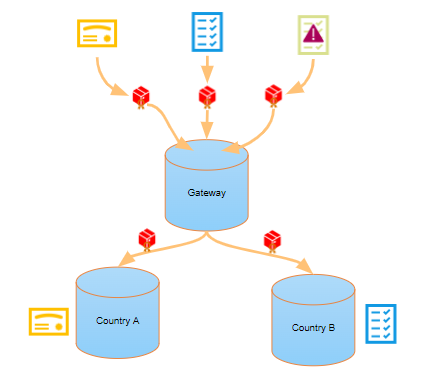
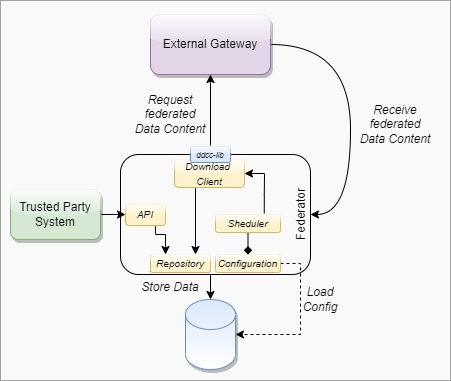
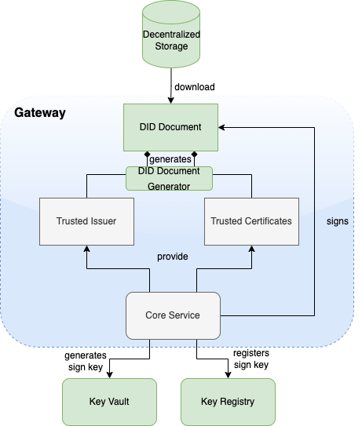

ترجمة آلية — لم يراجعها أي شخص
تُرجمت هذه الصفحة آليًا. لم يراجع أي شخص هذه الترجمة أو يعتمدها، وقد تحتوي على أخطاء. الصفحة بلغة المصدر هي النص المرجعي. اقرأ النص الأصلي (بالإنجليزية)
Machine translation — not reviewed by a person
This page was translated automatically. No person has reviewed or adjudicated this translation, and it may contain errors. The source-language page is the authoritative text. Read the original (English)
الصفحة الرئيسية
الملخص
يصف هذا الدليل المواصفات وإجراءات الانضمام إلى الشبكة العالمية لإصدار الشهادات الصحية الرقمية (GDHCN) التابعة لمنظمة الصحة العالمية (WHO). وGDHCN آلية لدعم التحقق من المستندات والشهادات الصحية المتبادلة بين المشاركين في GDHCN. وقد تشمل هذه الشهادات الصحية شهادات COVID-19، وبطاقات التمنيع الروتيني، والسجلات المنزلية المتسقة مع معايير الملخص الدولي للمريض (International Patient Summary). وتوفر هذه الآلية وسائل لمواءمة معايير بروتوكولات الصحة العالمية وإرساء نظام للاعتراف بالشهادات الرقمية من أجل استمرارية الرعاية وعند نقاط الدخول. وقد صُمِّمت GDHCN للاستفادة من الاستثمارات القائمة التي قامت بها الولايات القضائية في إطار الاستجابة لجائحة COVID-19، ولتوفير البنية التحتية للصحة الرقمية اللازمة للصمود في الاستجابات المستقبلية للأوبئة والجوائح.
إن GDHCN انعكاس رقمي للثقة القائمة بالفعل بين منظمة الصحة العالمية (WHO) والدول الأعضاء. وGDHCN شبكة ثقة رقمية تستند إلى مفاهيم مُثبتة تُستخدم لوصف المواصفات والآليات اللازمة لإرساء الثقة، وتتيح للمشاركين المؤهَّلين إنشاء نطاقات ثقة جديدة لتبادل السجلات الصحية الرقمية القابلة للتحقق. ويجوز للمشاركين المؤهَّلين في شبكة الثقة التقدم بطلب للانضمام باتباع عملية الانضمام. وتُشغَّل GDHCN بموجب الإطار الإداري والتشغيلي لـ GDHCN.

The view in this guide's ArchiMate model.
لتجربة الانضمام عمليًا، العب Join the Network، وهي محاكاة ينضم فيها بلد نموذجي إلى GDHCN خيارًا تلو الآخر، وفق عمليات الانضمام.
الخلفية والغرض
استجابةً لجائحة COVID-19، وضعت الحكومات والمنظمات في جميع أنحاء العالم معايير وتقنيات واعتمدتها لإنشاء اعتمادات رقمية للتطعيم والاختبار وتقديمها والتحقق منها. غير أن إطارًا تقنيًا عالميًا يتيح الاستخدام الميسَّر لهذه الاعتمادات وقابلية تشغيلها البيني بين النظم – مع السماح في الوقت نفسه بالاستقلالية المحلية في استخدامها – لا يوجد بعد، وثمة حاجة ماسة إليه.
إن الشبكة العالمية لإصدار الشهادات الصحية الرقمية التابعة لمنظمة الصحة العالمية (WHO) مجموعة من المكونات التي تُستخدم للتحقق من المستندات أو الشهادات الصحية الرقمية القابلة للتشغيل البيني. ويتألف هذا النظام من ثلاث سمات رئيسية:
مجموعة من المستندات الصحية الرقمية المحدَّدة جيدًا التي يُصدرها أعضاء GDHCN ويتحققون منها. والبنية التحتية للمفاتيح العمومية (PKI) المستخدمة لنشر وتوزيع المفاتيح العمومية المستخدمة في التحقق من التوقيعات الرقمية للمستندات الصحية الرقمية.
مكتبة معارف تُستخدم لحفظ البيانات الوصفية، بما في ذلك ترميزات المصطلحات ورموز المنتجات وقواعد العمل التي تُستخدم لتوفير قابلية التشغيل البيني الدلالية لهذه المستندات الصحية الرقمية
إضافةً إلى التحقق من شهادات COVID-19 والتثبت من صلاحيتها، يمكن لشبكة ثقة عالمية للصحة الرقمية مثل GDHCN أن:
إرساء الثقة في الخوارزميات السريرية الموقَّعة رقميًا التي تنشرها منظمة الصحة العالمية (WHO) من خلال العمل على إرشادات SMART. وإتاحة كتالوج عالمي للمنتجات والأجهزة الطبية الموثوقة. وضمان إمكانية الوصول إلى المعلومات المتعلقة بالمريض والثقة بها أينما كان في العالم. ودعم قدرة النظم الصحية على الصمود لمواجهة الفاشيات المستقبلية في العالم. وتمكين الأفراد من إدارة صحتهم وعافيتهم بأنفسهم.
إن التبادل القابل للتشغيل البيني للمعلومات الصحية في بيئة موثوقة مهمة معقدة تشمل عددًا متزايدًا من أصحاب المصلحة (مثل وكالات الصحة العامة، والمختبرات المعتمدة، ومنظمات مراقبة الحدود، والمؤسسات المأذون لها بالتحقق) الذين يتعيَّن عليهم ضمان نقل البيانات بأمان وأمن، وأن يكون المحتوى الصحي قابلًا للتشغيل البيني، وأن تكون المعلومات مفهومة وقابلة للتنفيذ. ويوضح هذا الدليل كيفية الاستفادة من إطار تقني عالمي لإتاحة قابلية التشغيل البيني للاعتمادات الصحية بين النظم، مع الحفاظ على الاستقلالية المحلية في استخدامها.
لا يتطلب تحقيقُ قابلية التشغيل البيني العالمية للشهادات الصحية أن تستخدم جميع الولايات القضائية المعيار نفسه. إذ يمكن أيضًا تحقيق قابلية التشغيل البيني عند وجود آليات متفق عليها مسبقًا تضمن قبول الشهادات الصادرة عن ولاية قضائية ما في ولاية قضائية أخرى. وقد طُوِّر عدد من الخدمات والعناصر التقنية لتلبية معايير محددة لإرساء قابلية التشغيل البيني ونظام للثقة، منها:
نماذج البيانات وعمليات التحويل وتعريفات المفردات التي تتيح تبادل البيانات الصحية بين صيغ المعايير المختلفة، مع الحفاظ على استقلالية الولاية القضائية فيما يتعلق بالعمليات المحلية، والسماح في الوقت نفسه بإعادة إصدار الاعتمادات والاعتراف المتبادل بها بين الولايات القضائية. ومواصفات قياسية لتبادل المفاتيح العمومية بين الشبكات المختلفة للتحقق من التوقيعات الرقمية على الاعتمادات الصحية. وسجل عالمي للثقة وحل اتحادي للبنية التحتية للمفاتيح العمومية يوفر قابلية التشغيل البيني التقنية والحوكمة التقنية بين شبكات الثقة الإقليمية. وسير عمل لإنشاء قواعد العمل ومشاركتها وتنفيذها، وهي قواعد تُقيِّم سياسات الصحة العامة مقابل البيانات الصحية لمتطلبات العبور عبر الحدود أو متطلبات نقاط الدخول. وأدوات مفتوحة المصدر وإرشادات تقنية لتخفيف عبء تنفيذ البنية التحتية التقنية اللازمة للمشاركة في شبكة الثقة الاتحادية، بما في ذلك بنية تحتية مفتوحة المصدر لشبكات الثقة تتيح للولايات القضائية تنفيذ شبكات الثقة الإقليمية الخاصة بها
رسالة دورية إلى الدول الأعضاء
في يوم الجمعة 29 سبتمبر/أيلول 2023، أرسل المدير العام لمنظمة الصحة العالمية (WHO) رسالة دورية إلى جميع الدول الأعضاء يشجِّعها فيها على المشاركة في GDHCN.
- C.L.38.2023 (الشبكة العالمية لإصدار الشهادات الصحية الرقمية) - العربية
- C.L.38.2023 (الشبكة العالمية لإصدار الشهادات الصحية الرقمية) - الصينية
- C.L.38.2023 (الشبكة العالمية لإصدار الشهادات الصحية الرقمية) - الإنجليزية
- C.L.38.2023 (الشبكة العالمية لإصدار الشهادات الصحية الرقمية) - الفرنسية
- C.L.38.2023 (الشبكة العالمية لإصدار الشهادات الصحية الرقمية) - الروسية
- C.L.38.2023 (الشبكة العالمية لإصدار الشهادات الصحية الرقمية) - الإسبانية
الجمهور المستهدف
يصف هذا الدليل سير العمل المتوقع للجهات الفاعلة المحتملة في منظومة الثقة، وهي:
الجهات المُصدِرة التي تقدِّم اعتمادات صحية قابلة للتحقق إلى الأفراد، والجهات المُتحقِّقة التي تستخدم الاعتمادات الصحية القابلة للتحقق المقدَّمة من الأفراد، وشبكات الثقة التي تُرسي علاقات الثقة والسياسات بين الجهات المُصدِرة والجهات المُتحقِّقة.
يشمل الجمهور المستهدف بهذا الدليل صانعي القرار والمحللين والكوادر التقنية لدى الجهات المُصدِرة الفردية المحتملة، أو شبكات الثقة القائمة، أو الجهات المُتحقِّقة المحتملة التي قد تشارك في شبكة الثقة الاتحادية. ويشمل أصحاب المصلحة الدول الأعضاء والشبكات الإقليمية ومنظمات وضع المعايير.
المشاركون
نطاقات الثقة المتاحة
ترد رموز نطاقات الثقة في GDHCN ضمن مجموعة القيم الخاصة بنطاقات الثقة في GDHCN (GDHCN Trust Domain Value Set)، وهي موصوفة بمزيد من التفصيل هنا.
</p>
الاعتبارات الأخلاقية ومبادئ حماية البيانات
كما هو الحال مع أي حل رقمي، ثمة اعتبارات أخلاقية، مثل الآثار المحتملة على الإنصاف وعلى الوصول المنصف، ومبادئ لحماية البيانات يتعيّن أن تسترشد بها عملية تصميم المواصفات التقنية، وأن توفر إرشادات بشأن كيفية تنفيذ الحلول الناتجة تنفيذًا أخلاقيًا. وتناقش الصفحة التالية بعض الاعتبارات الأخلاقية الرئيسية ومبادئ حماية البيانات التي تُشجَّع الدول الأعضاء على تضمينها – ويجب عليها ذلك حيثما كانت عليها التزامات قانونية – في عمليات نشرها للحلول الرقمية. وقد استرشدت معايير تصميم إرشادات SMART الصادرة عن منظمة الصحة العالمية (WHO) واستخدامُ الشبكة العالمية لإصدار الشهادات الصحية الرقمية التابعة لمنظمة الصحة العالمية (WHO) بهذه الاعتبارات الأخلاقية ومبادئ حماية البيانات أيضًا.
الملاحظات
يمكن تقديم الملاحظات الخاصة بدليل التنفيذ هذا من خلال:
يمكن الاطلاع على الأسئلة الشائعة هنا النقر على أحد روابط الملاحظات على يمين أي عنوان قسم إرسال بريد إلكتروني إلى gdhcn-support@who.int إنشاء مسألة على GitHub في المستودع smart-trust
المجتمع
سجِّل في مجتمع chat.fhir.org وتابع القناة who-smart-guidelines لطرح الأسئلة والاستفسارات والمحادثات المتعلقة بإرشادات SMART الصادرة عن منظمة الصحة العالمية (WHO) chat.fhir.org. وتستضيف منظمة الصحة العالمية (WHO) أيضًا اجتماعات أسبوعية بشأن تأليف إرشادات SMART الصادرة عنها وتنفيذها، والمشاركة فيها مُرحَّب بها. يُرجى إرسال بريد إلكتروني إلى gdhcn-support@who.int للحصول على دعوة. gdhcn-support@who.int
إخلاء المسؤولية
المواصفة الموثَّقة هنا هي مواصفة العمل التوضيحية العالمية لمنظمة الصحة العالمية (WHO Global)، ولا يجوز استخدامها لأي أغراض تنفيذية. وتُقدَّم هذه المسودة دون أي ضمان لاكتمالها أو اتساقها، وتحل المطبوعة الرسمية محل هذه المسودة. ولا يمكن استنتاج أي مسؤولية عن استخدام هذه المواصفة أو إساءة استخدامها أو عن عواقب ذلك.
الاعتبارات الأخلاقية الرئيسية
ينبغي أن تكون الأخلاقيات جزءًا لا يتجزأ من تصميم الحل الرقمي ونشره. غير أن القرارات السياساتية كثيرًا ما تكون معقدة وصعبة. إذ يتعين مراعاة اعتبارات عديدة مختلفة والموازنة بينها. وكثيرًا ما تكون البيّنات غير مؤكدة، وتتعدد وجهات النظر والمواقف الأخلاقية المتنافسة. ولن تقدم البيّنات وحدها الإجابة الصحيحة، ولا مجموعة بسيطة من القواعد الأخلاقية. فإجراءات الصحة العامة تتطلب حكمًا متأنيًا وقبولًا للمسؤولية عن النتائج. وينبغي أن يؤخذ في الحسبان عدد من الاعتبارات الأخلاقية المختلفة، بما في ذلك الأهداف والعمليات على حد سواء.
الأهداف
من نقاط البداية الجيدة تحديد الكيفية التي يمكن بها لاستخدام حل رقمي أن يسهم في الواجبات العامة المهمة لأي حكومة من خلال الصحة العامة. وفيما يلي ثلاثة أهداف رئيسية لإجراءات الصحة العامة:
حماية رفاه الأفراد والمجتمعات والسكان ككل وتعزيزه؛ وضمان المساواة في المعاملة لجميع الأفراد ومنع أوجه التفاوت الصحي التي يمكن تجنبها وغير العادلة (أي أوجه عدم الإنصاف في الصحة) أو التخفيف منها قدر الإمكان داخل حدود الدولة؛ وإيجاد الثقة في أنشطة الصحة العامة والحفاظ عليها بوصفها جزءًا من نظام الرعاية الصحية.
يمكن أن يسهم إنشاء الحل الرقمي واستخدامه في تحقيق كل من هذه الأهداف. فعلى سبيل المثال، فيما يتعلق بالهدف 1، يمكن للحل الرقمي أن يعزز الرفاه من خلال توفير سجلات صحية رقمية تتيح استمرارية الرعاية بضمان وصول الأفراد إلى بياناتهم الصحية عبر المرافق. ويسهم تعزيز هذا الهدف أيضًا في الثقة بالبنية التحتية الصحية للحكومة، بما يعود بالنفع على السكان بأسرهم. وتُعد هذه النتيجة منفعة عامة مشتركة مهمة – أي منفعة للجميع لا يستطيع كل فرد إيجادها بمفرده. وتتطلب هذه المنافع إجراءات منسقة من الحكومات ودعمًا منها. وفضلًا عن ذلك، ستترتب مزايا أخرى على استخدام الحل الرقمي، بفضل تحسن الصحة وما يتبعه من زيادة الفرص المتاحة للأفراد والمجتمعات لاتخاذ خياراتهم الخاصة وتحقيق أهدافهم الاقتصادية والاجتماعية.
فيما يتعلق بالهدف 2، تقتضي المساواة في المعاملة احترام جميع الأشخاص وحمايتهم على قدم المساواة، والعمل على ضمان عدم التمييز ضد أي أحد قدر الإمكان. ومن الأمثلة على كيفية العمل نحو هذا الهدف ضمان تطبيق ضمانات مناسبة لحماية البيانات الشخصية. فالبيانات الصحية الفردية معلومات خاصة، ويلزم وجود حمايات تضمن عدم إجبار أي فرد على الإفصاح عن سجله الصحي الشخصي (PHR) أو عرضه علنًا للوصول إلى أي مكان أو نشاط عام [swiss-taskforce-vaccination-proof-2021]. وقد تؤدي هذه الممارسة و/أو عدم وجود PHR في حد ذاته إلى وصم الأفراد الذين لا يملكون PHR، وقد تفاقم خطر الأضرار.
ومن الأمثلة الأخرى على العمل نحو تحقيق الهدف 2 التفكير في سبل محاولة تحقيق الإنصاف من خلال توزيع الموارد الصحية. فبينما قد يوفر الحل الرقمي آلية أكثر موثوقية ودقة وجدارة بالثقة لتسجيل التاريخ الصحي الشخصي، فإنه ينطوي على خطر تفاقم أوجه عدم الإنصاف في الصحة، للأسباب التالية.
→ قد يزيد السجل الصحي الشخصي (PHR) من الإقصاء الرقمي إذا كان تطبيقه واستخدامه يتطلبان أن تتوفر للأفراد إمكانية الوصول إلى بنية تحتية رقمية، أو إذا كانت تلك البنية التحتية الرقمية أشدّ إرهاقًا من أن تتمكّن جميع الدول الأعضاء من نشرها.
→ قد يُستبعد أيضًا الأفراد الذين يواجهون عوائق جغرافية أو مالية أو عوائق تتعلق بالإعاقة من الحصول على سجل صحي شخصي (PHR) واستخدامه، تبعًا لإجراءات الإدارة والتكلفة والتصميم. ويعني ضمان اتباع نهج منصف وشامل في تنفيذ حل رقمي أن يحظى من يواجهون عوائق أكبر في الحصول على PHR واستخدامه بدعم أكبر من غيرهم.
فيما يتعلق بالهدف 3، تُعد الثقة أمرًا حيويًا لضمان مزايا الحل الرقمي للأفراد والمجتمعات والسكان بأسرهم. فعلى سبيل المثال، قد يسهم توفير تدابير متينة لحماية البيانات واستخدام الاعتبارات الإجرائية المبيَّنة في القسم 1.3.4 في الحفاظ على الثقة في نظم الصحة العامة. وهذا بدوره يسهم في تحقيق الهدف 1. ومن الأمثلة الأخرى أنه لا ينبغي استخدام الحل الرقمي إلا للغرض المقصود منه، لأن الاستخدامات غير الملائمة قد تؤدي إلى تقويض الاستخدامات المشروعة.
العمليات
قد يؤدي السعي إلى تحقيق الأهداف المذكورة أعلاه إلى نشوء مشكلات أخلاقية. ومن سبل التخفيف من هذا الخطر ضمان أن تراعي العمليات المختلفة قيمًا إجرائية مهمة. وتسهم هذه القيم بدورها أيضًا في السعي إلى تحقيق الأهداف المذكورة أعلاه. ومن هذه القيم:
→ الشفافية: تقديم معلومات واضحة ودقيقة ومتاحة للعموم عن الأساس الذي تقوم عليه السياسة والعملية التي تُوضع بها، منذ البداية – أي إخطار الجمهور بأن عملية كهذه جارية. وتضبط مثل هذه العملية صنع القرار وتضمن المساءلة من خلال توفير أساس سليم لقرار نهائي يمكن أن يتفق معه أفراد الجمهور العقلاء.
→ الشمول في صنع القرار: إتاحة الفرص لجميع أصحاب المصلحة المعنيين للمشاركة في صياغة السياسات وتصميمها، ولا سيما المتأثرون بها، والمدافعون عن هؤلاء الأفراد والفئات.
→ المساءلة: توفير إطار واضح يحدد من المسؤول عن ماذا، وكيف ستُنظَّم المسؤوليات ويُنفَّذ الالتزام بها.
→ الاستجابة: توفير آليات وفرص لمراجعة القرارات والسياسات وتنقيحها استنادًا إلى البيّنات العلمية المتطورة وغيرها من البيانات ذات الصلة. وقد يشمل ذلك التشاور العام أو التواصل مع طائفة واسعة من الخبراء والقطاعات الصناعية وغيرهم من أصحاب المصلحة، كي تستجيب السياسات للقضايا والشواغل الأخلاقية الفعلية والمتصوَّرة. ومن أصحاب المصلحة ذوي الأهمية الخاصة أولئك الذين يُرجَّح أن يكونوا في وضع غير مؤاتٍ أو أن يواجهوا مخاطر مميزة أو متزايدة مع إنشاء PHR، مثل الأفراد غير القادرين على إنشاء PHR أو غير الراغبين في ذلك، أي الأفراد ذوي وضع الجنسية أو الإقامة غير المستقر أو غير الصالح، والأفراد الذين قد يواجهون عوائق أخرى في الحصول على PHR أو استخدامه [ada-lovelace-vaccine-passports-2021].
الاعتبارات الأخلاقية المتعلقة بالاستخدامات المحتملة الأخرى للسجلات الصحية الشخصية الرقمية في تدابير أمن الصحة العامة
يثير عدد من الاستخدامات الأخرى الممكنة للسجلات الصحية الشخصية الرقمية قضايا أخلاقية. ففي سياق طارئة صحية عامة، قد يؤدي السجل الصحي الشخصي الرقمي دورًا في تحقيق أغراض متنوعة للصحة العامة، مثل تحديد التغطية بالتطعيم في مجموعة سكانية معينة، مما قد يساعد على تحديد موعد رفع تدابير الصحة العامة والتدابير الاجتماعية (PHSMs) أو تخفيفها على مستوى السكان. وقد يُستخدم PHR الرقمي أيضًا لتيسير الإعفاء الفردي من PHSMs أو تخفيفها (مثل تقليص مدة الحجر الصحي بعد التعرض) أو الوصول الفردي إلى نشاط ما استنادًا إلى إثبات التطعيم (إذا اعتُبرت هذه الاستخدامات أخلاقية)، وهو ما يمكن أن نسميه وظيفة «الجواز الصحي». ويترتب على النشر أو الاستخدام المحتمل لـ PHR رقمي لهذه الأغراض، ولا سيما بوصفه جوازًا صحيًا، عدد من المشكلات الأخلاقية المحتملة للأفراد والمجتمعات، وتحديات تتعلق بحقوق الإنسان ([coe-bioethics-vaccine-pass-2021]،[who-vaccination-certificates-ethics]).
أولًا، يثير استخدام PHR رقمي بوصفه جوازًا صحيًا مجموعة مميزة من المخاطر بسبب أوجه عدم اليقين العلمي الحالية بشأن الأمراض المستجدة. فعلى سبيل المثال، خلال طارئة الصحة العامة التي تثير قلقًا دوليًا (PHEIC) الناجمة عن COVID-19، أظهرت لقاحات COVID-19 نجاعة وفعالية في الوقاية من المرض الوخيم والوفاة، لكن لم يُقيَّم تقييمًا كاملًا مدى منع كل لقاح لانتقال SARS-CoV-2 إلى الأفراد المعرَّضين للإصابة. ولم يكن معروفًا تمامًا طول مدة الحماية التي يوفرها كل لقاح من المرض الوخيم ومن العدوى، ولا مدى جودة حمايته من المتحورات الحالية والمستقبلية لـ SARS-CoV-2. وفي سياق عدم اليقين العلمي هذا، قد يزيد استخدام PHR رقمي بوصفه جوازًا صحيًا استنادًا إلى حالة التطعيم الفردية وحدها من خطر انتشار المرض. ويصدق ذلك بوجه خاص إذا أُعفي الأفراد الحائزون على PHR رقمي إعفاءً تامًا من PHSMs أو إذا كان من الصعب فرض امتثال الأفراد لما هو مطلوب من
تدابير PHSMs أثناء نشاط ما (مثل ارتداء الكمامات والتباعد الجسدي أثناء حفل موسيقي) يُسمح لهم بالوصول إليه استنادًا إلى PHR الرقمي الخاص بهم.
ثانيًا، قد تؤدي بعض الاستجابات السلوكية المحتملة لـ PHR رقمي في دوره بوصفه جوازًا صحيًا إلى تقويض صحة الأفراد والصحة العامة. ومن هذه الاستجابات ما يلي.
→ حيثما تكون مزايا الجواز الصحي كبيرة، فقد يؤدي ذلك إلى الاحتيال في السجلات الصحية الشخصية (PHR) الرقمية. فعلى سبيل المثال، قد تزيد سجلات التطعيم المزوّرة من مخاطر الصحة العامة إذا كان شخص غير مطعَّم على تماس محتمل بأشخاص مستضعفين.
→ قد يكون الأفراد أقل استعدادًا للإفصاح عن تاريخهم الطبي وموانع الاستعمال (المحتملة) لتدخل من تدخلات الصحة العامة (مثل اللقاح) بغية الحصول على سجل صحي شخصي رقمي (PHR) مقابل، مما يزيد من خطر وقوع أحداث ضائرة.
→ قد يحفّز إنشاء سجل صحي شخصي (PHR) رقمي لكل فرد عقب التطعيم مزيدًا من الناس على المشاركة في تدبير من تدابير الصحة العامة (مثل تلقي لقاح) للوصول إلى مزايا PHR الرقمي. غير أنه قد يزيد أيضًا من التردد في المشاركة في تدبير الصحة العامة بسبب مخاوف تتعلق بالخصوصية وغيرها من أن سجل التطعيم قد يُربط بالبيانات الشخصية ويُستخدم في وظائف غير تلك المقصودة أصلًا (مثل ترصّد الحالة الصحية للأفراد)، أو أن تستخدمه أطراف ثالثة غير مقصودة (مثل سلطات الهجرة والكيانات التجارية والباحثين) [royal-society-setc-vaccine-passports-2021].
ثالثًا، ينطوي استخدام PHR رقمي بوصفه جوازًا صحيًا على خطر إحداث أوجه حرمان وظلم غير عادلة. فعلى سبيل المثال، خلال طارئة PHEIC الناجمة عن COVID-19، وُزِّعت الإمدادات المحدودة في البداية من لقاح COVID-19 داخل بعض البلدان بحيث تُعطى الأولوية للأكثر عرضة لخطر العدوى (مثل العاملين في مجال الرعاية الصحية) أو للعواقب الوخيمة (مثل المسنين). وثمة خطر يتمثل في أن الراغبين في التطعيم الذين لم يُعرض عليهم لقاح بعد، أو غير القادرين على التطعيم لأسباب طبية، سيكونون في وضع غير مؤاتٍ على نحو غير عادل إذا تضمن PHR الرقمي وظائف الجواز الصحي. وينبغي النظر في ما إذا كان بإمكان الأفراد استخدام إثباتات أخرى للحالة الصحية تتيح لهم وصولًا مماثلًا إلى الخدمات نفسها مع التخفيف من خطر انتشار المرض. فعلى سبيل المثال، خلال طارئة PHEIC الناجمة عن COVID-19، ربما شملت هذه الإثباتات الأخرى نتيجة سلبية لاختبار COVID-19 أو إثباتًا للمناعة المكتسبة بعد العدوى استنادًا إلى اختبارات موثوقة ودقيقة (وهو ما سُمِّي شهادات المناعة)، وإن كان ذلك يثير أيضًا شواغل علمية وأخلاقية كبيرة [voo2021].
التوصيات
يثير تصميم الحل الرقمي وتطويره وتنفيذه كثيرًا من القضايا الأخلاقية. ويمكن مراجعة سلسلة التوصيات التالية عند النظر في مثل هذا التنفيذ.
ينبغي تحديد نطاق استخدام الحل الرقمي بوضوح.
ينبغي لكل دولة عضو تعتمد حلًا رقميًا أن تكون واضحة بشأن الاستخدامات المقترحة له، وأنه لا ينبغي استخدامه لأغراض أخرى.
لمنع أي إساءة استخدام محتملة، ينبغي لأي تنفيذ لحل رقمي أن يضع سياسات واضحة ومحددة، وقوانين إن لزم الأمر، بشأن حدود الاستخدامات المشروعة للحلول. ولا يكون استخدام حل رقمي لتقييد الحق في حرية التنقل وغيره من حقوق الإنسان مبرَّرًا إلا عندما يدعم السعي إلى تحقيق هدف مشروع خلال طارئة صحية عامة، وعندما ينص عليه القانون، ويكون متناسبًا ومحدود المدة وقائمًا على البيّنات العلمية، وغير مفروض بطريقة تعسفية أو غير معقولة أو تمييزية.
ينبغي تقييم المزايا والمخاطر والتكاليف المحتملة قبل اعتماد حل رقمي.
ينبغي أن يستند إنشاء الحل الرقمي أو تطويره إلى تقييم لمزايا استخداماته وتكاليفها، ولمحاسن البنية التحتية المقترحة ومساوئها، مقارنةً بالطرق المحتملة أو القائمة الأخرى لتسجيل سجلات التطعيم والمصادقة عليها والتحقق منها. وينبغي أن يأخذ تقييم المزايا والتكاليف – بوصفه وظيفة من وظائف الإشراف على موارد الصحة العامة الشحيحة – بمنظورات قصيرة الأجل ومتوسطة الأجل وطويلة الأجل. فالمنظور القصير الأجل ينظر في جدوى الاستثمار في بنية تحتية رقمية وتكلفة الفرصة البديلة له مقارنةً بتدابير أخرى للاستجابة للطوارئ وتلبية احتياجات الصحة العامة الأخرى خلال أزمة صحية عامة. وينبغي النظر في ما إذا كانت البنية التحتية الرقمية قد تعيق الاستجابة الصحية العامة بسبب أوجه القصور المحتملة التي قد تُحدثها في معالجة التسجيلات و/أو التدريبات وما إلى ذلك. أما المنظور الطويل الأجل فينظر في المحاسن المحتملة للحل الرقمي في تعزيز النظام الصحي، مثل تحسين نظام المعلومات الصحية وقابليته للتشغيل البيني عبر الولايات القضائية. وفضلًا عن ذلك، ينبغي قبل التنفيذ تقييم القضايا والمخاطر الأخلاقية التي يثيرها الحل الرقمي، وأثر المفاضلة بين المزايا والأعباء الواقعة على الأفراد والأسر والمؤسسات التجارية وغيرهم من أصحاب المصلحة المعنيين. وينبغي أيضًا إشراك المجتمعات المحلية، ولا سيما ممثلي الفئات التي يُرجَّح أن تواجه حرمانًا أو مخاطر متزايدة.
ينبغي أن يكون الحصول على الحل الرقمي واستخدامه شاملين ومنصفين قدر الإمكان. ينبغي أن تكون الحلول الرقمية شاملة قدر الإمكان وألا تُحدث حرمانًا. ولتحقيق ذلك، قد يلزم توفير حلول بديلة فعالة من حيث التكلفة، بما في ذلك البدائل الورقية، للأفراد والفئات الذين يعانون من حرمان قائم، مثل من يواجهون عوائق تتعلق بالمهارات الرقمية أو بالإعاقة، والذين يعيشون في مناطق ذات اتصال رقمي أضعف، والمهاجرين غير الموثقين أو غير النظاميين. ولا ينبغي استبعاد أحد من خلال اشتراط الدفع الفردي للحصول على حل رقمي واستخدامه.
ينبغي اتخاذ جميع التدابير اللازمة لحماية المشاركين من أجل استمرارية الرعاية. سيتضمن الحل الرقمي بيانات يُحتمل أن تكون حساسة تتعلق بصحة الأفراد، ومن ثم ينبغي حماية هذه البيانات بضمانات مناسبة للسرية الطبية والخصوصية. وينبغي أن يستند الوصول إلى البيانات أو استخدامها لأغراض استمرارية الرعاية إلى معيار الموافقة المناسب (الضمنية أو الصريحة مثلًا) في نظام الرعاية الصحية المعني، وأن يكون كافيًا لمقدم الرعاية الصحية أو الفريق المستقبِل لمواصلة تقديم رعاية طبية جيدة. وستنطبق هذه المعايير الأخلاقية أيضًا على النقل الدولي للبيانات لأغراض استمرارية الرعاية (كما هو الحال عندما يحصل مريض على خدمات طبية في الخارج).
بالنسبة إلى البالغين الذين يفتقرون إلى الأهلية لاتخاذ القرار، يجوز أن يستند استخدام سجلاتهم الصحية الشخصية في القرارات المتعلقة برعايتهم الصحية إلى قراراتهم المسبقة، أو أن يتخذه، في غياب قرار مسبق، وكيل للرعاية الصحية أو بديل مأذون له بما يحقق المصلحة الفضلى للبالغ. وينبغي أن يتمكن القُصَّر الذين يتمتعون بقدر كافٍ من الإدراك والنضج من السماح باستخدام بيانات سجلاتهم الصحية لأغراض استمرارية الرعاية، حيثما تكون الموافقة مطلوبة.
ينبغي أن تكون جميع الاتصالات واضحة وشفافة.
ينبغي إبلاغ تفاصيل تنفيذ الحل الرقمي ذات الصلة بالمستخدمين بطريقة شفافة، مما قد يسهم في تعزيز ثقة الجمهور وقبوله للحل. ويشمل هذا الإبلاغ كيفية عمل الحل لإفادة الأفراد والصحة العامة، والسياسات والآليات القائمة لتقييد وصول الأطراف الثالثة إلى الحل واستخدامها له، وما إذا كانت البيانات الصحية الشخصية مربوطة بأنواع أخرى من البيانات، والأغراض من أي ربط للبيانات.
إذا وُسِّعت استخدامات الحل مستقبلًا لتشمل أغراضًا علمية أو أغراضًا أخرى للصحة العامة (مثل رصد البرامج أو البحث)، فينبغي إبلاغ أصحاب البيانات وغيرهم من أفراد الجمهور مسبقًا بطبيعة هذه الأنشطة ووقوعها، وبهيكل الرقابة الأخلاقية أو الحوكمة القائم (بما في ذلك لأنشطة الترصد [who-surveillance-ethics-2017])، وبالخيارات المتاحة للتحكم في البيانات الصحية الشخصية أو تقييدها لهذه الاستخدامات. والبيانات الصحية الشخصية حساسة، وينبغي بوجه عام إخفاء هويتها (أو استخدام أسماء مستعارة لها، أو نزع ما يحدد الهوية منها) للأغراض العلمية أو أغراض الصحة العامة، للتقليل إلى أدنى حد من المخاطر على أصحاب البيانات. وحيثما يلزم الاحتفاظ بالبيانات الصحية الشخصية في صورة تتيح تحديد الهوية لهذه الأغراض، ينبغي النظر في ما إذا كانت الموافقة مطلوبة أو ينبغي التنازل عنها بناءً على استيفاء معايير أخلاقية مناسبة (مثل الحد الأدنى من المخاطر، وتعذر الحصول على الموافقة عمليًا، وعدم وجود آثار ضائرة على حقوق أصحاب البيانات ورفاههم، وخدمة منفعة للصحة العامة).
ينبغي رصد أثر الحل الرقمي باستمرار وتعديله حسب الاقتضاء. بعد التنفيذ، من المهم رصد آثار الحل الرقمي من حيث النتائج الإيجابية والسلبية (مثل الأثر في الإنصاف) والنظر في التدخلات المحتملة للتخفيف من النتائج السلبية. وينبغي أن يشمل هذا الرصد أيضًا مراجعة الاستخدامات التي لا تندرج بوضوح ضمن فئات الاستخدام المشروع وغير المشروع التي تحددها السياسات، للنظر في ما إذا كان ينبغي مواصلة هذه الاستخدامات أو تعديلها أو وقفها.
مبادئ حماية البيانات الخاصة بالحل الرقمي
يعرض هذا القسم مبادئ أساسية مسبقة لحماية البيانات خاصة بالحل الرقمي. وقد صُممت المبادئ لتقديم الإرشاد إلى السلطات الوطنية المكلفة بإنشاء الحل الرقمي أو الإشراف على تطويره. وتتمثل الأهداف في تشجيع الدول الأعضاء على اعتماد قوانينها ولوائحها الوطنية أو تكييفها، حسب الاقتضاء، واحترام مبادئ حماية البيانات الشخصية، وضمان احترام حقوق الإنسان والحريات الأساسية للأفراد، ولا سيما الحق في الخصوصية، من أجل بناء الثقة في تنفيذ الحل الرقمي.
فيما يلي مبادئ حماية البيانات. الأساس القانوني والاستخدام المشروع والمعالجة العادلة: ينبغي معالجة البيانات الشخصية المجمَّعة لمصلحة تطبيق الحل الرقمي بطريقة عادلة وغير تمييزية، استنادًا إلى موافقة صاحب البيانات، أو ضرورة حماية المصالح الحيوية لصاحب البيانات أو لصاحب بيانات آخر، أو على نحو مبرَّر صراحةً بأهداف مشروعة للصحة العامة.
ينبغي أن يكون لمعالجة البيانات الشخصية لمصلحة تطبيق الحل الرقمي أساس قانوني؛ وينبغي أن تمتثل للقوانين المعمول بها، بما في ذلك معايير حقوق الإنسان الأوسع نطاقًا وقوانين خصوصية البيانات وحمايتها، مع احترام أعلى معايير السرية والسلوك الأدبي والأخلاقي.
لا ينبغي الوصول إلى البيانات الشخصية المجمَّعة لتطبيق الحل الرقمي أو تحليلها أو استخدامها على نحو آخر إلا مع احترام المصالح المشروعة لأصحاب البيانات المعنيين. وعلى وجه التحديد، ولضمان أن يكون استخدام البيانات عادلًا، لا ينبغي استخدام البيانات بطريقة تنتهك حقوق الإنسان أو بأي طرق أخرى يُرجَّح أن تسبب آثارًا غير مبررة أو ضائرة على أي فرد (أفراد) أو فئة (فئات) من الأفراد.
ينبغي أن يكون لأي احتفاظ بالبيانات الشخصية المعالَجة لمصلحة تطبيق الحل الرقمي أساس مشروع وعادل. وقبل الاحتفاظ بأي بيانات، ينبغي النظر في المخاطر والأضرار والمزايا المحتملة. وينبغي حذف البيانات الشخصية نهائيًا بعد انقضاء المدة اللازمة لتحقيق الغرض منها، ما لم يكن الاحتفاظ الممتد بها مبرَّرًا لأغراض محددة.
الشفافية
ينبغي أن تُجرى معالجة البيانات الشخصية لمصلحة تطبيق الحل الرقمي على نحو شفاف لأصحاب البيانات. وينبغي تزويد أصحاب البيانات بمعلومات سهلة الوصول وموجزة ومفهومة وميسَّرة القراءة، بلغة واضحة لا لبس فيها، بشأن: الغرض من معالجة البيانات؛ ونوع البيانات المعالَجة؛ وكيفية الاحتفاظ بالبيانات وتخزينها ومشاركتها أو إتاحتها على نحو آخر؛ والجهات التي ستتلقى البيانات ومدة الاحتفاظ بها. وينبغي أيضًا تزويد أصحاب البيانات بمعلومات عن الجداول الزمنية المعمول بها للاحتفاظ بالبيانات، وعن كيفية ممارسة حقوقهم بوصفهم أصحاب بيانات. وينبغي نشر قائمة بالكيانات المأذون لها بمعالجة البيانات الشخصية لمصلحة تطبيق الحل الرقمي.
تقييد الغرض وتحديده: لما كان لا يجوز استخدام البيانات الشخصية المجمَّعة لمصلحة الحل الرقمي إلا في النطاق والغرض المحدَّدين، فلا ينبغي معالجتها بطرق تتعارض مع الأغراض المحددة. وينبغي حظر استخدام البيانات لأي غرض آخر، بما في ذلك بيع البيانات الشخصية واستخدامها لأغراض تجارية، إلا بموافقة مسبقة صريحة لا لبس فيها ومعطاة بحرية من صاحب البيانات.
ينبغي تحديد الأغراض التي تُعالَج من أجلها البيانات الشخصية لمصلحة تطبيق الحل الرقمي في موعد لا يتجاوز وقت جمع البيانات. وينبغي أن يقتصر الاستخدام اللاحق للبيانات الشخصية على تحقيق تلك الأغراض المحددة.
عندما يضطلع عامل صحي أو جهة مُتحقِّقة من الحل الرقمي بأنشطته المكلَّف بها؛ لا ينبغي السماح بنقل البيانات الشخصية المعالَجة لمصلحة تطبيق الحل الرقمي إلى طرف ثالث أو بإتاحة وصول طرف ثالث إليها إلا إذا استُوفيت المبادئ التي يقوم عليها الأساس القانوني المشار إليه أعلاه، وكان الطرف الثالث يوفر للبيانات الشخصية حماية مناسبة تعادل الحمايات التي يوفرها المتحكم في البيانات أو تفوقها.
ينبغي أن تكون البيانات الشخصية المعالَجة لمصلحة تطبيق الحل الرقمي ذات صلة بالأغراض التي ستُستخدم من أجلها، وأن تكون، بالقدر اللازم لتلك الأغراض، دقيقة وكاملة ومحدَّثة باستمرار.
التناسب والضرورة وتقليل البيانات إلى أدنى حد: ينبغي أن تكون معالجة البيانات الشخصية ذات صلة (أي ذات ارتباط منطقي بأغراض محددة)، وكافية (بما يفي بالأغراض المحددة على النحو الصحيح)، ومقتصرة على ما يلزم لتحقيق الأغراض المحددة. ولا ينبغي أن تكون معالجة البيانات الشخصية مفرطة بالنسبة إلى
الأغراض التي تُجمَع من أجلها تلك البيانات الشخصية. وينبغي أن تكون البيانات المجمَّعة والمحتفظ بها في الحل الرقمي محدودة قدر الإمكان، مع احترام التناسب والضرورة. وينبغي أن يقتصر الوصول إلى البيانات أو تحليلها أو استخدامها على نحو آخر على الحد الأدنى اللازم لتحقيق الغرض منها. وينبغي أن تقتصر كمية البيانات، بما في ذلك درجة تفصيلها، على الحد الأدنى اللازم. وينبغي استخدام آليات الإفصاح الانتقائي لدعم الوصول المتناسب إلى البيانات.
ينبغي رصد استخدام البيانات لضمان عدم تجاوزه الاستخدام المشروع. ولا ينبغي الاحتفاظ بالبيانات الشخصية المحتفظ بها لمصلحة تطبيق الحل الرقمي وتخزينها إلا للمدة اللازمة لأغراض محددة. ولا ينبغي الاحتفاظ بالبيانات الشخصية التي يُوصَل إليها عند نقطة التحقق من الحل الرقمي ولا تخزينها في مستودع أو قاعدة بيانات أو غير ذلك.
السرية والأمن: ينبغي الحفاظ على سرية البيانات الشخصية المعالَجة لمصلحة تطبيق الحل الرقمي وعدم الإفصاح عنها لأطراف غير مأذون لها؛ ولا ينبغي أن يتاح الوصول إلى البيانات الشخصية إلا لصاحب البيانات أو لأطراف أخرى مأذون لها صراحةً.
مع مراعاة طبيعة البيانات الشخصية المعالَجة لمصلحة تطبيق الحل الرقمي وحساسيتها، ينبغي تطبيق تدابير أمنية تنظيمية ومادية وتقنية مناسبة على البيانات الإلكترونية والورقية على حد سواء من أجل حماية أمن البيانات الشخصية وسلامتها. وتشمل هذه الحماية تدابير للحماية من خرق البيانات الشخصية، وتدابير لضمان استمرار إتاحة تلك البيانات الشخصية للأغراض التي تُعالَج من أجلها؛ وينطبق ذلك بصرف النظر عما إذا كانت البيانات مخزنة على أجهزة أو تطبيقات أو خوادم أو شبكات، أو مرسلة عبر خدمات تشارك في جمعها أو نقلها أو معالجتها أو الاحتفاظ بها أو تخزينها.
مع مراعاة التكنولوجيا المتاحة وتكلفة التنفيذ، ينبغي تطبيق ضمانات وإجراءات تقنية وتنظيمية متينة (مثل الرصد الفعال للوصول إلى البيانات، وإجراءات الإخطار بخرق البيانات) لضمان الإدارة السليمة للبيانات طوال دورة حياتها. وتهدف هذه التدابير إلى منع أي فقدان عرضي للبيانات الشخصية أو إتلافها أو إلحاق الضرر بها أو استخدامها دون إذن أو تحريفها أو العبث بها أو الاحتيال أو التزوير فيها أو الإفصاح عنها دون إذن أو خرقها.
في حالة حدوث خرق أمني يؤدي إلى إتلاف البيانات الشخصية المنقولة أو المخزنة أو المعالَجة على نحو آخر، أو فقدانها، أو تغييرها، أو الإفصاح عنها أو الوصول إليها دون إذن، على نحو عرضي أو غير مشروع، ينبغي إخطار مستخدمي الحل الرقمي الذين يحوزون سجلات صحية (حائزي البيانات) بطريقة مناسبة وفي الوقت المناسب. وينبغي إخطار حائزي البيانات بما يلي: أي خرق للبيانات؛ وطبيعة خرق البيانات، الذي قد يؤثر في حقوقهم بوصفهم أصحاب بيانات؛ والتوصيات الرامية إلى التخفيف من الآثار الضائرة المحتملة.
حقوق أصحاب البيانات والشكاوى والانتصاف القانوني: ينبغي أن يتمكن حائزو البيانات، إذا قدموا بيّنة كافية على أنهم حائزو البيانات، من ممارسة حقوق أصحاب البيانات. وتشمل حقوق أصحاب البيانات هذه الحق في الوصول إلى البيانات الشخصية وتصحيحها وحذفها والاعتراض عليها وتقييدها، رهنًا بالشروط التي ينظمها القانون أو المرسوم أو اللائحة الوطنية أو غير ذلك من الصكوك أو الأوامر الرسمية. ولأصحاب البيانات الحق في التماس الانتصاف عبر إجراء للشكاوى إذا لحق بهم ضرر أو خسارة نتيجة إساءة استخدام البيانات أو عدم صحتها أو عدم اكتمالها. وينبغي تزويد أصحاب البيانات بمعلومات سهلة الوصول وموجزة ومفهومة وميسَّرة القراءة عن الكيفية التي يمكنهم بها ممارسة حقوقهم بوصفهم أصحاب بيانات وكيفية التماس الانتصاف القانوني، بما في ذلك كيفية ممارسة أي حقوق في حالة الاحتيال المزعوم.
الرقابة المستقلة والمساءلة: ينبغي أن تكون هناك سلطة عامة مستقلة مسؤولة عن رصد مدى التزام أي متحكم في البيانات ومعالج للبيانات يشارك في معالجة البيانات الشخصية لمصلحة الحل الرقمي بالمبادئ، ويجوز لها أن توصي بإلغاء الإذن بجمع البيانات أو معالجتها على نحو آخر. وينبغي أن يتاح لهذه السلطة العامة الوصول إلى جميع المعلومات اللازمة لأداء مهمتها. وينبغي أن تكون هناك سياسات وآليات كافية لضمان الالتزام بهذه المبادئ.
معايير تصميم السجلات الصحية الشخصية الرقمية
نظرًا إلى الاعتبارات الأخلاقية ومبادئ حماية البيانات المبيَّنة أعلاه، رُوعيت معايير التصميم التالية عند صياغة متطلبات تنفيذ حل رقمي.
لا ينبغي أن يؤدي تنفيذ الحل الرقمي إلى زيادة أوجه عدم الإنصاف في الصحة أو توسيع الفجوة الرقمية. وينبغي أن يكون لكل فرد في الولاية القضائية الحق في الحصول على سجلات في حل رقمي والاحتفاظ بها. ويجب أن تكون السجلات التي يحتفظ بها الحل الرقمي بصيغة يمكن أن يصل إليها الجميع، مثل الصيغتين الورقية والرقمية. وينبغي أيضًا أن يعمل أي حل في البيئات المتصلة بالإنترنت وغير المتصلة به عبر منصات متعددة – ورقية ورقمية. ولا ينبغي معاملة الأفراد معاملة مختلفة أو منحهم مستويات ثقة مختلفة بسبب صيغة تمثيل البيانات التي يستخدمونها (فعلى سبيل المثال، لا ينبغي أن يكون هناك تمييز على أساس ما إذا كان الشخص يقدم سجلًا صحيًا على هاتف ذكي أو على بطاقة ورقية). ولا ينبغي أن يترتب على أي حل تكلفة إضافية على الشخص. وينبغي أن تستند مواصفات قابلية التشغيل البيني المستخدمة في الحلول الرقمية إلى معايير مفتوحة لضمان الوصول المنصف إلى طائفة من الأدوات الرقمية غير المسجلة الملكية. وينبغي أن تضمن البنية التحتية التي يقوم عليها الحل الرقمي ألا يُقيَّد الأفراد والدول الأعضاء بالتزام مع مورِّد واحد فقط. وينبغي أن يكون أي حل مراعيًا للبيئة قدر الإمكان، وأن تُتَّبع أكثر الخيارات استدامة بيئيًا للحد من أي ضرر إضافي لا داعي له بالبيئة. وينبغي تصميم أي حل بحيث يعزز نظم المعلومات الصحية القائمة ويعمل في سياقها، حسب الاقتضاء. ولا ينبغي لأي حل أن يشارك أو يخزن بيانات أكثر مما يلزم لتنفيذ مهامه بنجاح. وينبغي أن يُدمج في النظام تقليل المحتوى الصحي إلى أدنى حد للأغراض غير المتصلة بالرعاية الصحية، وخصائص حماية الخصوصية، وأن تُحترم تبعًا لذلك. وينبغي أن تُدمج آليات مكافحة الاحتيال في أي نهج.
لا ينبغي أن تكون التكنولوجيا الرقمية الآلية الوحيدة المتاحة للتحقق. وينبغي أن تتوفر دائمًا سبل ممكنة للعودة إلى التحقق اليدوي من السجلات على الورق فقط. ومن المهم ملاحظة أنه، على الرغم من معايير التصميم التكنولوجي المبيَّنة هنا، سيكون من الضروري أن تكفل الدول الأعضاء وجود الأطر القانونية والسياساتية اللازمة لدعم الاستخدام المسؤول للحل الرقمي على النحو الذي تحدده الدولة العضو.
الأسئلة الشائعة
المشاركة والأدوار
من يمكنه أن يكون ممثل استمارة الطلب للمشاركة في GDHCN؟
ينبغي أن يكون الممثل سلطة صحة عامة مُعيَّنة من دولة عضو في منظمة الصحة العالمية (WHO)، تتمتع بصلاحية اتخاذ القرار بشأن المشاركة في GDHCN.
ما دور جهة الاتصال الممثلة لمالك الأعمال؟
مسؤول رفيع المستوى يتمتع بصلاحيات اتخاذ القرار، ويشارك في القرارات الاستراتيجية لا في العمليات اليومية.
من ينبغي أن يكون جهة الاتصال التقنية؟
شخص مسؤول عن معالجة الاستفسارات والمشكلات التقنية طوال دورة حياة المشروع.
ما الذي تقوم به جهة الاتصال القانونية؟
يدير الجوانب القانونية، بما في ذلك الامتثال التنظيمي والمسائل التعاقدية المتعلقة بالمشاركة في GDHCN.
المعلومات المالية
هل هناك أي رسوم مرتبطة بالمشاركة في GDHCN؟
المشاركة في GDHCN مجانية حاليًا، بدعم من التمويل القائم لدى منظمة الصحة العالمية (WHO).
المتطلبات التقنية والبنية التحتية
كيف سيؤثر الانتقال إلى أداة إدارة كتالوج المنتجات لدى منظمة الصحة العالمية (WHO) في رموز اللقاحات؟
تهدف الأداة إلى إدارة رموز اللقاحات بفعالية، ومعالجة تعقيدات الترميز بالمصطلحات الطبية.
هل يمكننا الاستمرار في المشاركة في بيئة UAT دون الانتقال إلى الإنتاج؟
نعم، يمكن الاستمرار في بيئة UAT، ولا يعيق ذلك الانتقال مستقبلًا إلى بيئة الإنتاج.
كيف تدعم GDHCN التعاون مفتوح المصدر؟
من خلال منصات مثل GitHub، بما يتيح مساهمات المجتمع لتحسين المواصفات التقنية والوثائق.
كيف تدمج GDHCN المواصفات التقنية القائمة لـ EU DCC؟
من خلال دمج مواصفات EU DCC مثل واجهات API للوصول إلى المفاتيح، وقواعد العمل، ومجموعات القيم، بما يضمن التوافق.
ما الخطط الخاصة بالتطورات المستقبلية وصيانة البنية التحتية لـ GDHCN؟
ستوجّه منظمة الصحة العالمية (WHO) التطورات المستقبلية، مع التركيز على التوافق مع الأنظمة القائمة وضمان الأمن والتوافق مع الإصدارات السابقة.
الانتقال والانضمام
كيف يُدار نقل الأصول التقنية من EU DCC إلى GDHCN؟
يشمل ذلك نقل واجهات API والمجموعات إلى مواصفات GDHCN، مع ضمان منظمة الصحة العالمية (WHO) لتكامل سلس.
ما عملية الانضمام للتطبيقات الجديدة غير المتصلة سابقًا بـ EU DCC؟
يتضمن ذلك التحقق من الاتصالات التقنية والتوافق مع الأنظمة القائمة، ولا سيما فيما يتعلق بشهادات TLS.
الأمن والامتثال
كيف تُدار مواد المفاتيح وعملية تبادلها ضمن GDHCN؟
من خلال تعريفات مفصّلة لمواد المفاتيح، بما يضمن الوضوح والشفافية في عملية تبادل المفاتيح، على نحو يشبه كثيرًا تعريفات EU DCC.
كيف تُدار الحوادث المتعلقة بالأمن خلال الانتقال إلى حوكمة منظمة الصحة العالمية (WHO)؟
ينصبّ التركيز على معالجة الحوادث الأمنية، دون إجراء تغييرات على المستودع ما لم تكن ضرورية لأسباب أمنية.
إدارة الشهادات
ما السياسة الحالية لتجديد شهادات TLS للأنظمة الخلفية الوطنية؟
السياسة قيد المراجعة، مع مناقشات حول بدائل لسياسة التجديد كل ثلاثة أشهر، بما في ذلك مدد صلاحية أطول أو شهادات موقَّعة ذاتيًا.
هل يمكن للشبكات المستضافة لدى منظمة الصحة العالمية (WHO) استخدام شهادات TLS موقَّعة ذاتيًا؟
إمكانية استخدام منظمة الصحة العالمية (WHO) شهادات موقَّعة ذاتيًا بمدد صلاحية ممتدة قيد المناقشة.
ما عملية اقتراح بدائل لسياسة شهادات TLS الحالية؟
يجري النظر في مقترحات لبدائل، مثل تمديد مدد الصلاحية، للتخفيف من المخاوف المتعلقة بسياسات التجديد القصيرة.
###!## كيف تضمن منظمة الصحة العالمية (WHO) الثقة دون الاعتماد على شهادة TLS وحدها؟ قد يكون الوثوق بسلطة التصديق (CA) بدلًا من الشهادة نفسها حلًّا لمشكلة التجديدات المتكررة.
متطلبات العمل
شبكة الثقة الصحية الرقمية هذه هي شبكة من أصحاب المصلحة الذين يتبادلون المعلومات الصحية ويستخدمونها بصورة آمنة استناداً إلى مبادئ الثقة والأمن والخصوصية، وهي مصممة لضمان التعامل مع المعلومات الصحية بطريقة آمنة وخاصة ومتوافقة مع المتطلبات. ومن خلال GDHCN، تضطلع منظمة الصحة العالمية (WHO) بدور القيّم على شبكة ثقة صحية رقمية.
قُسِّمت إلى الأقسام التالية:
المفاهيم الرئيسية المتطلبات الوظيفية حالات الاستخدام الشخصيات الافتراضية قاموس البيانات
بالإضافة إلى المفاهيم الرئيسية المستخدمة في هذه الوثيقة، والمعرَّفة أدناه، يمكن الاطلاع على وثائق إضافية في:
- الإطار الإداري والتشغيلي لـ GDHCN
- المسرد
- حوكمة الشهادات
- عملية الانضمام
ينبغي اعتبار الإطار الإداري والتشغيلي لـ GDHCN المصدر المرجعي للتعاريف والمفاهيم في حال وجود أي تعارض.
المفاهيم المسرد
شبكة الثقة التابعة لـ GDHCN
شبكة الثقة التابعة لـ GDHCN هي شبكة ثقة تتألف من أمانة GDHCN والمشاركين في GDHCN. وتُفعِّل شبكة الثقة التابعة لـ GDHCN نطاقات الثقة عمليًا من خلال بوابة شبكة الثقة، عبر تمكين التحقق الثنائي من الشهادات الصحية الرقمية القابلة للتحقق واستخدامها، وتمكين المشاركين في GDHCN من استخدام الخدمات الموثوقة.
أمانة GDHCN
تتولى أمانة منظمة الصحة العالمية (WHO) القيادة التشغيلية والإدارية لـ GDHCN، وتؤدي بهذه الصفة دور أمانة GDHCN.
مشارك في GDHCN
المشارك في GDHCN هو مشارك في شبكة الثقة يلتزم بشروط المشاركة ويدير البنية التحتية التقنية وعمليات الحوكمة اللازمة. ويتولى المشاركون في GDHCN مسؤولية اتخاذ القرارات الثنائية المتعلقة باستخدام الخدمات الموثوقة.
مشارك مؤهَّل في GDHCN
المشارك المؤهَّل في GDHCN هو أحد ما يلي:
- دولة عضو أو عضو منتسب في منظمة الصحة العالمية (WHO)، أو وحدة دون وطنية تابعة لها؛
- دولة طرف معترف بها بموجب اللوائح الصحية الدولية، أو وحدة دون وطنية تابعة لها؛
- الأمم المتحدة (UN) وسائر المنظمات الحكومية الدولية التي تربطها علاقات فعلية بمنظمة الصحة العالمية (WHO)؛
- صندوق أو برنامج أو وكالة متخصصة أو منظمة ذات صلة ضمن منظومة الأمم المتحدة (UN)؛ أو
- منظمة مفوَّضة رسميًا من إحدى المنظمات المذكورة أعلاه، يمكنها الالتزام بشروط المشاركة في GDHCN وتؤدي وظيفة واحدة أو أكثر من وظائف الخدمات الصحية التالية:
- وكالة الصحة العامة؛
- وكالة اعتماد تعليم المهن الصحية؛
- وكالة ترخيص الخدمات الصحية؛ أو
- وكالة أمن الصحة العامة. يُشار إليه، بعد قبوله في GDHCN إثر الإتمام الناجح لعملية الانضمام، بوصفه مشاركًا في GDHCN. ويُشار إلى المشارك المؤهَّل في GDHCN الذي بدأ عملية الانضمام بوصفه مقدِّم طلب مؤهَّلًا في GDHCN.
شروط المشاركة (TOP)
تخضع المشاركة في GDHCN لعملية الانضمام التي تحددها أمانة GDHCN وفق تقديرها المطلق والمنفرد، ووفقًا لقواعد منظمة الصحة العالمية (WHO) ولوائحها وسياساتها وممارساتها، بصيغتها المعدَّلة من حين لآخر. وتتألف متطلبات شروط المشاركة في GDHCN من المكونات التالية:
- TOP0 مشاركة بيانات الاعتماد اللازمة لإنشاء اتصال mTLS (أمن طبقة النقل المتبادل) بين النظام الخلفي (أو الأنظمة الخلفية) للمشارك في GDHCN وبوابة شبكة الثقة؛
- TOP1 الامتثال، خلال عملية الانضمام الأولية وخلال فترات التحقق الدورية، للمواصفات التقنية المطلوبة لـ PKI؛
- TOP2 الامتثال، خلال عملية الانضمام الأولية وخلال فترات التحقق الدورية، للمواصفات التقنية للشهادات الصحية الرقمية القابلة للتحقق ولواجهات API للخدمات الموثوقة لكل نطاق ثقة معني؛
- TOP3 الامتثال للمعايير السياساتية والتنظيمية الخاصة بالمشاركين في GDHCN المتعلقة بالخدمات الموثوقة التي يشغّلها المشارك في شبكة الثقة التابعة لـ GDHCN أو يستخدمها لكل نطاق ثقة معني؛ و
- TOP4 تقديم الوثائق الداعمة (مثل الولاية، والإطار القانوني) التي تثبت أنه مشارك مؤهَّل في GDHCN، حسبما قد تطلبه منظمة الصحة العالمية (WHO) من حين لآخر وفق تقديرها المنفرد.
ممثل مالك الأعمال
الفرد الذي يحدده المشارك في GDHCN بوصفه صاحب المسؤولية الأساسية على صعيد الأعمال والبرامج عن المشارك في GDHCN في تنفيذ حالات الاستخدام التي يشملها نطاق الثقة.
ممثل مسؤول إدارة المفاتيح
الفرد الذي يحدده المشارك في GDHCN بوصفه صاحب المسؤولية الأساسية عن إدارة البنية التحتية للمفاتيح العمومية، بما في ذلك توليد أي أزواج مفاتيح عمومية وخاصة لازمة، وتهيئة الاتصالات بين البنية التحتية للمفاتيح العمومية لدى المشارك في GDHCN وبوابة شبكة الثقة التابعة لـ GDHCN وإدارتها.
الممثل القانوني
الفرد الذي يعيّنه المشارك في GDHCN بوصفه صاحب المسؤولية الأساسية عن مراجعة المتطلبات المتعلقة بنطاق ثقة نيابةً عن هذا المشارك في GDHCN. وينبغي أن يكون هذا الشخص ممن يمكن لأمانة GDHCN استشارتهم بشأن أي مسائل قانونية أو سياساتية قد تنشأ، مثل التغييرات على هذه الوثيقة أو على أحد ملاحقها الذي يُعرِّف نطاق ثقة.
الممثل التقني
الفرد الذي يعيّنه المشارك في GDHCN بوصفه صاحب المسؤولية العامة الأساسية عن الأمن والمسائل التقنية والبنية التحتية للأنظمة لدى هذا المشارك في GDHCN فيما يخص نطاق الثقة المعني، بما في ذلك ضمان الامتثال للمواصفات التقنية.
خطاب الطلب
طلب رسمي يُرسَل عبر قناة آمنة وقابلة للتحقق من مشارك مؤهَّل في GDHCN إلى أمانة GDHCN للانضمام إلى شبكة الثقة التابعة لـ GDHCN والمشاركة ضمن نطاق ثقة معيّن.
عملية الانضمام
العمليات المطلوبة لانضمام مشارك مؤهَّل في GDHCN إلى شبكة الثقة التابعة لـ GDHCN. وعند الإتمام الناجح لعملية الانضمام، يُعَدّ المشارك المؤهَّل في GDHCN مشاركًا في GDHCN. ويُشار إليها أحيانًا ببساطة بـ«الانضمام».
وكالة اعتماد تعليم المهن الصحية
منظمة أو وحدة تنظيمية مسؤولة عن وضع إجراءات اعتماد مؤسسات تعليم المهن الصحية و/أو تنفيذها. انظر https://apps.who.int/iris/rest/bitstreams/1473223/retrieve و https://applications.emro.who.int/docs/em_rc50_r9_en.pdf?ua=1
وكالة ترخيص الخدمات الصحية
منظمة أو وحدة تنظيمية مسؤولة عن وضع إجراءات الترخيص و/أو تنفيذها، وعن ترخيص المنظمات أو الأفراد لتقديم الخدمات السريرية أو خدمات النظام الصحي أو خدمات الصحة العامة ضمن ولايتها القضائية. ويشمل الترخيص العمليات التي تمنح من خلالها السلطات الحكومية المأذون لها حسب الأصول، مثل المنظمات المهنية المعترف بها، الإذنَ لفرد أو لمنظمة رعاية صحية بالعمل أو بمزاولة مهنة أو حرفة طبية. انظر: https://apps.who.int/iris/rest/bitstreams/1473223/retrieve و https://cdn.who.int/media/docs/default-source/documents/health-systems-strengthening-glossary.pdf.
وكالة الصحة العامة
منظمة أو وحدة تنظيمية مسؤولة عن وضع إجراءات الأنشطة المتعلقة بحماية الصحة العامة وتعزيزها وتحسينها ضمن ولاية قضائية أو مجال محدد و/أو تنفيذ تلك الأنشطة. وقد يُشار إليها أيضًا باسم وزارة الصحة أو إدارة الصحة أو سلطة الصحة العامة.
وكالة أمن الصحة العامة
منظمة أو وحدة تنظيمية مسؤولة عن وضع إجراءات الأنشطة المطلوبة، الاستباقية منها والتفاعلية، و/أو تنفيذها، للحد من خطر الأحداث الحادة المتعلقة بالصحة العامة وتأثيرها، وهي الأحداث التي تهدد صحة الناس عبر المناطق الجغرافية والحدود الدولية. انظر: https://www.who.int/health-topics/health-security.
البنية التحتية للمفاتيح العمومية (PKI)
البنية التحتية للمفاتيح العمومية (PKI) هي نموذج الثقة القائم على شهادات المفاتيح العمومية وسلطات التصديق. وهي الوسيلة لنشر قوائم الثقة وتوزيعها، وهي القوائم التي تضم المفاتيح العمومية التي يمكن استخدامها للتحقق رقميًا من الجهة المُصدِرة للشهادات الصحية الرقمية القابلة للتحقق.
سلطة التصديق للتوقيع (SCA)
يحتفظ كل مشارك في GDHCN بسلطة تصديق للتوقيع (SCA) واحدة أو أكثر، تكون شهاداتها طويلة الأمد نسبيًا. وتُصدر سلطة التصديق للتوقيع (SCA) شهادات المفاتيح العمومية لموقِّعي المستندات الوطنيين قصيري الأمد. وتؤدي سلطة التصديق للتوقيع (SCA) دور مرسى الثقة، بحيث يستطيع المشاركون المعتمِدون في GDHCN استخدام شهادة SCA للتحقق من أصالة شهادات DSC المتغيرة بانتظام وسلامتها.
الحامل
الحامل هو فرد يحوز شهادة صحية رقمية قابلة للتحقق تلقّاها من الجهة المُصدِرة. ويجوز للحامل أن يختار مشاركة الشهادة الصحية الرقمية القابلة للتحقق مع الجهة المُستقبِلة.
الجهة المُستقبِلة
الجهة المُستقبِلة هي نظام مأذون له من مشارك في شبكة الثقة بأن يتلقى من الحامل شهادة قابلة للتحقق، وأن يتحقق منها ويستخدم محتواها.
الجهة المُصدِرة
الجهة المُصدِرة نظام مأذون له من مشارك في شبكة الثقة بإنشاء شهادات صحية رقمية قابلة للتحقق تُقدَّم إلى الحامل. والجهة المُصدِرة مسؤولة عن إنشاء المحتوى الذي يُوقَّع رقميًا داخل الشهادة الصحية الرقمية القابلة للتحقق. ولتوقيع هذا المحتوى، ينبغي للجهة المُصدِرة إما أن تكون هي نفسها موقِّعًا للمستندات أو أن تستخدم خدمة موقِّع مستندات، وفقًا لما تأذن به سياسة الولاية القضائية.
موقِّع المستندات
يستخدم موقِّع المستندات المفتاحَ الخاص من زوج المفاتيح الخاص والعمومي لتوقيع الشهادات الصحية الرقمية القابلة للتحقق توقيعًا رقميًا. ويُتوقَّع أن يوقّع مفتاح خاص واحد عددًا كبيرًا من الشهادات الصحية الرقمية القابلة للتحقق. ويُشار إلى المفتاح العمومي المقابل باسم شهادة موقِّع المستندات (DSC).
شهادات موقِّع المستندات (DSCs)
شهادات موقِّع المستندات هي شهادات المفاتيح العمومية المرتبطة بموقِّعي المستندات، والتي يُصدرها المشارك في GDHCN أو يعترف بها.
حوكمة شهادات مفاتيح التشفير
العملية والمواصفات التقنية المتعلقة بإدارة مفاتيح التشفير واستخدامها للشهادات الصحية الرقمية القابلة للتحقق، وللبنية التحتية للمفاتيح العمومية، ولتأمين الاتصالات مع الخدمات الموثوقة وبوابة شبكة الثقة.
نطاق الثقة
يتكوّن نطاق الثقة مما يلي:
- حالات الاستخدام وعمليات العمل المحدَّدة المتعلقة باستخدام الشهادات الصحية الرقمية القابلة للتحقق؛
- المواصفات التقنية المفتوحة والقابلة للتشغيل البيني التي تحدد الخدمات الموثوقة والشهادات الصحية الرقمية القابلة للتحقق المعنية أو تعرّفها؛ و
- مجموعة من المعايير السياساتية والتنظيمية التي تصف السلوك المتوقَّع من المشاركين في GDHCN فيما يتعلق بتشغيل الخدمات الموثوقة واستخدام الشهادات الصحية الرقمية القابلة للتحقق (مثل تقليل البيانات إلى الحد الأدنى، والخصوصية، ونطاق الاستخدام).
قوائم الثقة
تتعقّد تطبيقات التحقق الشاملة التي تدعم معايير مختلفة لبيانات الاعتماد بسبب التباين الكبير في صيغ حمولات بيانات الاعتماد، والتوقيعات، وصيغ المفاتيح، وطرق توزيع المفاتيح. وتشمل صيغ المفاتيح العمومية شهادات x509، ومجموعات مفاتيح الويب بصيغة JSON (JWKS)، ووثائق DID. وتشمل طرق توزيع مفاتيح التوقيع بوابات API، والاستضافة لدى الجهة المُصدِرة على URL محدد مسبقًا، والتضمين في الشهادات، والحلّ القائم على سلاسل الكتل. وقد تحقق إرساء جذر الثقة عبر مرسى الثقة أو توزيع قائمة الثقة من خلال بوابات API، وعناوين URL المستضافة، والنشر الخاص، وغير ذلك من اتفاقات المشاركة الثنائية.
في حين يُتوقَّع قدر من التباين في نهج يحافظ على السيادة، توجد فرص للمواءمة في صيغة المفاتيح وتوزيعها بغية تعزيز التشغيل البيني. ولتحقيق هذا الهدف، نقدّم صيغة موحَّدة لقوائم الثقة لتجميع البنية التحتية للمفاتيح العمومية ومشاركتها لجميع مواصفات بيانات الاعتماد التي تستخدمها شبكات الثقة القائمة. والأهم أن هذه الصيغة لا تفرض إطارًا سياساتيًا معيّنًا على المشاركين في شبكة الثقة.
تدعم GDHCN حاليًا وسيلتين لتوزيع المفاتيح باستخدام قوائم الثقة
- EU DCC API مطلوب
- المعرِّف اللامركزي (DID) اختياري
شبكة الثقة
شبكة الثقة وسيلة للمصادقة على المفاتيح العمومية للتشفير التي يستخدمها المشاركون في الشبكة لأداء خدمات التشفير، والتحقق من التوقيعات الرقمية، وإنشاء اتصالات آمنة بين الأنظمة، وغير ذلك من أوجه استخدام المفاتيح العمومية للتشفير.
The view in this guide's ArchiMate model.
شبكة الثقة
بوابة شبكة الثقة (TNG)
بوابة شبكة الثقة (TNG) هي البرمجيات مفتوحة المصدر وبنيتها التحتية التشغيلية لتقنية المعلومات (IT)، القائمة على معايير مفتوحة، والمخصَّصة لبنية تحتية للمفاتيح العمومية ولخدمات إدارة البيانات الوصفية، وتُستخدَم لتفعيل نطاق ثقة واحد أو أكثر عمليًا. ويمكن التفاعل مع بوابة شبكة الثقة باستخدام API بمجرد إنشاء اتصال mTLS.
بوابة شبكة الثقة - مرسى الثقة (TNGTA)
شهادة المفتاح العمومي لمرسى الثقة الخاصة بـ TNG. ويُستخدَم المفتاح الخاص المقابل لها لتوقيع قائمة جميع شهادات SCA دون اتصال بالشبكة.
بوابة شبكة الثقة - أمن طبقة النقل (TNGTLS)
شهادة المفتاح العمومي لخادم TLS الخاصة بـ TNG.
مشارك في شبكة الثقة (TNP)
مشارك في شبكة الثقة (TNP) اختصار يُستخدَم لتسمية الشهادات أو البنى التحتية أو المنتجات التقنية التي يتيحها المشاركون في GDHCN ضمن شبكة الثقة التابعة لـ GDHCN.
النظام الخلفي للمشارك في GDHCN
النظام الخلفي لمشارك في GDHCN المُستخدَم لإدارة الجزء المحلي من المعلومات. ويقع تنفيذ النظام الخلفي للمشارك في GDHCN خارج نطاق هذه الوثيقة. ويمكن أيضًا فهم النظام الخلفي الوطني على أنه طرف موثوق تم ضمّه إلى بوابة شبكة الثقة (ويمكن أن يكون كذلك نصًا برمجيًا أو خادمًا وكيلًا أو خادم ويب).
مشارك في شبكة الثقة - سلطة التصديق لتبادل البيانات (TNPDECA)
شهادة المفتاح العمومي DSCA لمشارك في GDHCN (قد تكون أكثر من شهادة واحدة).
شهادة المفتاح العمومي DECA لمشارك في GDHCN (قد تكون أكثر من شهادة واحدة). وDECA شهادة تؤدي دور مرسى الثقة في التحقق من سلسلة الشهادات لشهادات DESC الصادرة عن مشارك في شبكة الثقة
مشارك في شبكة الثقة - سلطة التصديق لتوقيع المستندات (TNPDSCA)
شهادة المفتاح العمومي DSCA لمشارك في GDHCN (قد تكون أكثر من شهادة واحدة). وDSCA شهادة تؤدي دور مرسى الثقة في التحقق من سلسلة الشهادات لشهادات DSC الصادرة عن مشارك في شبكة الثقة
مشارك في شبكة الثقة - أمن طبقة النقل (TNPTLS)
شهادة المفتاح العمومي لمصادقة العميل عبر TLS الخاصة بالنظام الخلفي لمشارك في GDHCN.
مشارك في شبكة الثقة - أمن طبقة النقل (TNPUP)
شهادة المفتاح العمومي التي يستخدمها المشارك في GDHCN لتوقيع حزم البيانات التي تُرفَع إلى TNG.
الجهة المُتحقِّقة التابعة لمشارك في شبكة الثقة
نظام يستخدمه مشارك في GDHCN للتحقق من التوقيع الرقمي لشهادة صحية رقمية قابلة للتحقق.
خدمة موثوقة
خدمة (رقمية أو غير ذلك) تتعلق بإصدار الشهادات الصحية الرقمية القابلة للتحقق أو إدارتها أو التحقق منها أو تبادلها أو غير ذلك من العمليات ذات الصلة، وتُعرَّف باستخدام معايير صحية رقمية مفتوحة وقابلة للتشغيل البيني.
شهادة صحية رقمية قابلة للتحقق
الشهادة الصحية الرقمية القابلة للتحقق: تمثيل رقمي لمجموعة بيانات تشكّل شهادة أو مستندًا، مصمَّم لمجموعة من حالات الاستخدام السريرية أو الخاصة بالصحة العامة المحددة، ويُعرَّف باستخدام معايير صحية رقمية مفتوحة وقابلة للتشغيل البيني؛ ويحتوي على توقيع رقمي أو يرتبط به، يمكن التحقق منه بالمفتاح العمومي لزوج مفاتيح تشفير عمومي وخاص، ويصدره مشارك في GDHCN.
الشهادات الصحية الرقمية القابلة للتحقق المحددة مُعرَّفة في ملفات تعريف المحتوى
حوكمة الشهادات
تصف هذه الوثيقة حوكمة شهادات المفاتيح العمومية التي تعتمدها GDHCN التابعة لمنظمة الصحة العالمية (WHO). انظر وثيقة المفاهيم لمزيد من المعلومات.
ملاحظة: تنطبق إعادة التسميات التالية في الصورة المُضمَّنة:
- DCCG -> TNG
- CSCA -> SCA
- DCC -> GDHCN
- NB -> TNP
السياق
تتمثل الوظيفة الأساسية في التبادل الآمن والموثوق لمفاتيح التوقيع عبر بوابة شبكة الثقة التابعة لـ GDHCN (TNG)، التي تعمل بوصفها مستودعًا مركزيًا للمفاتيح العمومية. ويتمكَّن المشاركون في GDHCN من نشر المفاتيح العمومية التي يستخدمونها لتوقيع الشهادات الصحية الرقمية القابلة للتحقق. ويمكن للمشاركين المعتمِدين في GDHCN استخدام TNG لجلب مواد المفاتيح العمومية المُحدَّثة في الوقت المناسب.
نموذج الثقة في إطار GDHCN هو البنية التحتية للمفاتيح العمومية (PKI). ويحتفظ كل مشارك في GDHCN بسلطة تصديق توقيع (SCA) واحدة أو أكثر، تكون شهاداتها طويلة العمر نسبيًا. وتُصدِر SCA شهادات المفاتيح العمومية لموقِّعي المستندات قصيرة العمر (أي موقِّعي الشهادات الصحية الرقمية)، وتُسمّى شهادات موقِّع المستندات (DSC). وتعمل SCA بوصفها مرسى ثقة، بحيث يمكن للمشاركين المعتمِدين في GDHCN استخدام شهادة SCA للتحقق من أصالة شهادات DSC المتغيِّرة بانتظام وسلامتها. وبعد التحقق منها، يمكن للمشارك في GDHCN تقديم هذه الشهادات (أو المفاتيح العمومية الواردة فيها فقط) إلى تطبيقات التحقق الخاصة به.
إلى جانب SCA وDSC، يعتمد TNG أيضًا على البنية التحتية للمفاتيح العمومية (PKI) لمصادقة المعاملات وتوقيع البيانات، بوصفها أساسًا للمصادقة ووسيلةً لضمان سلامة قنوات الاتصال بين المشارك في GDHCN وTNG.<
تعرض الصورة التالية نظرة عامة رفيعة المستوى على النظام.
Overview

نطاق الوثيقة
يمكن استخدام التوقيعات الرقمية لتحقيق سلامة البيانات وأصالتها. وتُرسي البنى التحتية للمفاتيح العمومية الثقة عبر ربط المفاتيح العمومية بهويات (أو جهات مُصدِرة) جرى التحقق منها. وهذا ضروري لتمكين المشاركين الآخرين من التحقق من مصدر البيانات ومن هوية الطرف المُتصَل به، واتخاذ قرار بشأن الثقة. وفي TNG، تُستخدم شهادات متعددة للمفاتيح العمومية لضمان الأصالة. وتُحدِّد هذه الوثيقة شهادات المفاتيح العمومية المستخدمة وكيف ينبغي تصميمها لإتاحة قابلية تشغيل بيني واسعة بين مختلف المشاركين في GDHCN. وتستند هذه الوثيقة إلى [ehn-trust-framework-2021] و[ehn-dcc-techspec-vol1-2021]. وهي تقدِّم مزيدًا من التفاصيل عن شهادات المفاتيح العمومية اللازمة، وإرشادات بشأن قوالب الشهادات وفترات صلاحيتها للبلدان التي ترغب في تشغيل SCA خاصة بها. ولما كان يجب أن تكون شهادات DSC قابلة للتحقق خلال إطار زمني محدَّد (يبدأ من الإصدار وينتهي بعد مدة معيَّنة)، فمن الضروري تحديد نموذج تحقق لجميع التوقيعات المطبَّقة على شهادات المفاتيح العمومية وعلى الشهادة الصحية الرقمية. ولا تدخل الإجراءات القانونية والإدارية في نطاق هذه الوثيقة، ويجب تحديدها بشكل منفصل.
المصطلحات
تُفسَّر الكلمات المفتاحية “MUST” (يجب) و”MUST NOT” (يجب ألا) و”REQUIRED” (مطلوب) و”SHALL” (يتعيَّن) و”SHALL NOT” (لا يجوز) و”SHOULD” (ينبغي) و”SHOULD NOT” (لا ينبغي) و”RECOMMENDED” (يُوصى) و”NOT RECOMMENDED” (لا يُوصى) و”MAY” (يجوز) و”OPTIONAL” (اختياري) في هذه الوثيقة على النحو الموصوف في BCP 14 (RFC2119، RFC8174) عندما تَرِد بأحرف كبيرة كلها، وفقط عندئذٍ، كما هو مبيَّن هنا.
تتضمن هذه المفاهيم والجدول التالي الاختصارات والمصطلحات المستخدمة في هذه الوثيقة.
| المصطلح | التعريف | ||||||
|---|---|---|---|---|---|---|---|
| الشهادة | أو شهادة المفتاح العمومي. شهادة X.509 v3 تتضمن المفتاح العمومي لكيان ما | EC-DSA | خوارزمية التوقيع الرقمي بالمنحنيات الإهليلجية. خوارزمية توقيع تشفيري قائمة على المنحنيات الإهليلجية | mTLS | بروتوكول TLS المتبادل. بروتوكول أمن طبقة النقل مع المصادقة المتبادلة | RSA | خوارزمية تشفير غير متماثل قائمة على تحليل الأعداد الصحيحة إلى عواملها، تُستخدم للتوقيعات الرقمية أو للتشفير غير المتماثل |
مسارات الاتصال وخدمات الأمن في TNG
يقدِّم هذا القسم لمحة عامة عن مسارات الاتصال وخدمات الأمن في نظام TNG. كما يُحدِّد المفاتيح والشهادات المستخدمة لحماية الاتصال، والمعلومات المرفوعة، والشهادات الصحية الرقمية، وقائمة ثقة موقَّعة تتضمن جميع شهادات SCA المنضمة. ويقدِّم الشكل التالي نظرة عامة رفيعة المستوى على مسار الاتصال وخدمات الأمن في TNG. وستشرح الأقسام الفرعية التالية التصميم بمزيد من التفصيل.
Trust Model

عام
يعمل TNG بوصفه مركزًا للبيانات يتيح تبادل حزم البيانات الموقَّعة بين المشاركين في GDHCN. وفي المرحلة الحالية، تتضمن حزم البيانات الموقَّعة شهادات DSC التي يستخدمها المشاركون في GDHCN. ويتيح ذلك للأنظمة الخلفية الأخرى للمشاركين في GDHCN جلبها وتوزيع المعلومات على تطبيقات التحقق الخاصة بها. وحتى إن كانت شهادات DSC موقَّعة بالفعل من SCA، فإن هذا النهج يتيح توسيع النظام لاحقًا للسماح للأنظمة الخلفية برفع محتوى مختلف، قد يكون غير موقَّع (مثل قواعد التحقق).
يقدِّم TNG حزم البيانات المرفوعة «كما هي»، أي أن TNG لا يضيف شهادات DSC إلى الحزم التي يتلقاها ولا يحذفها منها. ويجب تمكين الأنظمة الخلفية للمشاركين في GDHCN من التحقق من سلامة البيانات المرفوعة وأصالتها من طرف إلى طرف (انظر القسم «سلامة البيانات المرفوعة وأصالتها»).
إضافةً إلى ذلك، ستستخدم الأنظمة الخلفية للمشاركين في GDHCN وTNG مصادقة TLS المتبادلة لإنشاء اتصال آمن (انظر القسم «المصادقة وإنشاء الاتصال»). وهذا إضافةً إلى التوقيعات على البيانات المتبادَلة.
المصادقة وإنشاء الاتصال
يستخدم TNG بروتوكول أمن طبقة النقل (TLS) مع المصادقة المتبادلة لإنشاء قناة مُشفَّرة ومُصادَق عليها بين النظام الخلفي للمشارك في GDHCN وبيئة بوابة شبكة الثقة، ولاستخدام واجهة برمجة التطبيقات (API) الخاصة بها. ولذلك يحمل TNG شهادة خادم TLS، يُرمَز إليها بـ TNGTLS، وتحمل الأنظمة الخلفية للمشاركين في GDHCN شهادة عميل TLS، يُرمَز إليها بـ TNPTLS. وتَرِد قوالب الشهادات في القسم «قوالب الشهادات».
يمكن للنظام الخلفي لكل مشارك في GDHCN أن يقدِّم شهادة TLS الخاصة به. وستُدرَج هذه الشهادة صراحةً في القائمة البيضاء، ومن ثَمَّ يجوز أن تُصدِرها سلطة تصديق موثوقة علنًا (مثل سلطة تصديق تتبع المتطلبات الأساسية لمنتدى CA Browser)، أو سلطة تصديق تابعة للولاية القضائية، أو أن تكون موقَّعة ذاتيًا. وكل مشارك في GDHCN مسؤول عن البيانات الخاصة بولايته القضائية وعن حماية المفتاح الخاص المستخدم لإنشاء الاتصال بـ TNG. ومن الواضح أن نهج «أحضِر شهادتك الخاصة» يتطلب عملية تسجيل وتعريف بالهوية محدَّدة جيدًا، فضلًا عن إجراءات للإلغاء والتجديد، وهي موصوفة في القسم «تسجيل الأنظمة الخلفية للمشاركين في GDHCN».
يستخدم TNG قائمة بيضاء تُضاف إليها شهادات TLS للأنظمة الخلفية للمشاركين في GDHCN بعد نجاح تسجيلها. ولا يمكن إنشاء اتصال آمن بـ TNG إلا للأنظمة الخلفية للمشاركين في GDHCN التي تُصادِق على نفسها بمفتاح خاص يقابل شهادة واردة في القائمة البيضاء.
سيستخدم TNG أيضًا شهادة TLS تتيح للأنظمة الخلفية للمشاركين في GDHCN التحقق من أنها تُنشئ اتصالًا بـ TNG «الحقيقي» فعلًا، لا بكيان خبيث ينتحل صفة TNG. وستصدر شهادة TNGTLS عن سلطة تصديق (CA) موثوقة علنًا (مُدرَجة في جميع المتصفحات الرئيسية). ويقع على عاتق المشاركين في GDHCN التحقق من أن اتصالهم بـ TNG آمن (على سبيل المثال بمقارنة البصمة الرقمية لشهادة TNGTLS للخادم المُتصَل به بالبصمة المقدَّمة بعد التسجيل).
سلطات تصديق التوقيع ونموذج التحقق
يجب (MUST) على جميع المشاركين في GDHCN الذين يشاركون في إطار GDHCN أن يستخدموا سلطة تصديق التوقيع (SCA) لإصدار شهادات DSC. ويجوز (MAY) للمشاركين في GDHCN أن يمتلكوا أكثر من SCA واحدة، على سبيل المثال في حالة سلطات التفويض. ويمكن لكل مشارك في GDHCN إما أن يستخدم سلطات تصديق قائمة، وإما أن يُنشئ سلطة تصديق مخصَّصة (قد تكون موقَّعة ذاتيًا) لنظام SCA. ويجب (MUST) على المشاركين في GDHCN تقديم شهادة (شهادات) SCA الخاصة بهم إلى أمانة GDHCN خلال إجراء الانضمام الرسمي. وبعد التسجيل الناجح للمشارك في GDHCN (انظر القسم «تسجيل الأنظمة الخلفية للمشاركين في GDHCN» لمزيد من التفاصيل)، ستُحدِّث أمانة GDHCN قائمة ثقة موقَّعة تتضمن جميع شهادات SCA النشطة. وستستخدم أمانة GDHCN زوج مفاتيح غير متماثل مخصَّصًا لتوقيع قائمة الثقة والشهادات في بيئة غير متصلة بالإنترنت. ولن يُخزَّن المفتاح الخاص على نظام TNG المتصل بالإنترنت، بحيث لا يُمكِّن اختراقُ النظام المتصل المهاجمَ من اختراق قائمة الثقة. وستُقدَّم شهادة مرسى الثقة المقابلة TNGTA إلى المشاركين في GDHCN خلال عملية الانضمام. ويمكن للمشاركين في GDHCN استرجاع قائمة الثقة من TNG لاستخدامها في إجراءات التحقق الخاصة بهم.
تُعرَّف SCA بأنها سلطة التصديق التي تُصدِر شهادات DSC، ومن ثَمَّ يجب (MUST) على المشاركين في GDHCN الذين يستخدمون تسلسلًا هرميًا متعدد المستويات لسلطات التصديق (مثل Root CA -> SCA -> DSCs) تقديم سلطة التصديق الفرعية التي تُصدِر شهادات DSC. ففي هذه الحالة، إذا استخدم مشارك في GDHCN سلطة تصديق قائمة، فسيتجاهل نظام GDHCN كل ما يعلو SCA، ولن يُدرِج في القائمة البيضاء إلا SCA بوصفها مرسى الثقة (حتى وإن كانت سلطة تصديق فرعية). ويرجع ذلك إلى أن نموذج ICAO [ehn-dcc-techspec-vol1-2021] لا يسمح إلا بمستويين بالضبط: SCA «جذرية» وشهادة DSC «طرفية» واحدة موقَّعة من تلك SCA وحدها. وإذا كان المشارك في GDHCN يشغِّل SCA خاصة به، فإنه يكون مسؤولًا عن التشغيل الآمن لسلطة التصديق تلك وعن إدارة مفاتيحها. وتجدر الإشارة إلى أن SCA تعمل بوصفها مرسى الثقة لشهادات DSC، ولذلك فإن حماية المفتاح الخاص لسلطة SCA أمر أساسي لسلامة بيئة شبكة الثقة.
نموذج التحقق في البنية التحتية للمفاتيح العمومية (PKI) لشبكة الثقة هو نموذج القشرة (المعرَّف مثلًا في [etsi-en-319-102-1-2016])، الذي ينص على أن جميع الشهادات في عملية التحقق من مسار الشهادات يجب أن تكون صالحة في وقت معيَّن (أي وقت التحقق من التوقيع). ولذلك تنطبق القيود التالية:
- لا يجوز (SHALL NOT) لسلطة SCA أن تُصدِر شهادات تمتد صلاحيتها لأطول من صلاحية شهادة CA نفسها (انظر [2، القسم 5]).
- لا يجوز (SHALL NOT) لموقِّع المستندات أن يوقِّع مستندات تمتد صلاحيتها لأطول من صلاحية شهادة DSC نفسها. يجب (MUST) على المشاركين في GDHCN الذين يشغِّلون SCA خاصة بهم تحديد فترات الصلاحية لسلطة SCA ولجميع الشهادات الصادرة عنها، ويجب (MUST) عليهم الاهتمام بتجديد الشهادات. ويتضمن القسم «سلطات التصديق وفترات الصلاحية والتجديد» توصيات بشأن فترات الصلاحية.
سلامة البيانات المرفوعة وأصالتها
يمكن للمشاركين في GDHCN استخدام TNG لرفع حزم البيانات الموقَّعة رقميًا وتنزيلها بعد نجاح المصادقة المتبادلة. وفي البداية، تتضمن حزم البيانات هذه شهادات DSC الخاصة بالمشاركين في GDHCN.
يُسمّى زوج المفاتيح الذي يستخدمه النظام الخلفي للمشارك في GDHCN للتوقيع الرقمي على حزم البيانات المرفوعة في نظام TNG زوجَ مفاتيح توقيع الرفع للمشارك في شبكة الثقة، ويُختصَر اسم شهادة المفتاح العمومي المقابلة إلى شهادة TNPUP. ويقدِّم كل مشارك في شبكة الثقة شهادة TNPUP الخاصة به، التي يمكن أن تكون موقَّعة ذاتيًا أو صادرة عن سلطة تصديق قائمة، مثل سلطة تصديق عمومية (أي سلطة تصديق تُصدِر الشهادات وفقًا للمتطلبات الأساسية لمنتدى CAB). ويجب أن تكون شهادة TNPUP مختلفة عن أي شهادات أخرى يستخدمها المشارك في GDHCN (أي SCA أو عميل TLS أو شهادات DSC).
يجب (MUST) على المشاركين في GDHCN تقديم شهادة الرفع إلى أمانة GDHCN خلال إجراء التسجيل الأولي (انظر القسم «تسجيل الأنظمة الخلفية للمشاركين في GDHCN» لمزيد من التفاصيل). وكل مشارك في GDHCN مسؤول عن بيانات ولايته القضائية، ويجب عليه حماية المفتاح الخاص المستخدم لتوقيع عمليات الرفع. ويمكن للمشاركين الآخرين في GDHCN التحقق من حزم البيانات الموقَّعة باستخدام شهادات الرفع التي يقدِّمها TNG.
يتحقق TNG من أصالة البيانات المرفوعة وسلامتها باستخدام شهادة TNPUP قبل تقديمها إلى المشاركين الآخرين في GDHCN.
المتطلبات الخاصة بالبنية التقنية لـ TNG
يمكن تلخيص المتطلبات الخاصة بالبنية التقنية لـ TNG على النحو التالي:
- يستخدم TNG مصادقة TLS المتبادلة لإنشاء اتصال مُشفَّر ومُصادَق عليه مع الأنظمة الخلفية للمشاركين في GDHCN. ولذلك يحتفظ TNG بقائمة بيضاء لشهادات عملاء TNPTLS المسجَّلة.
- يستخدم TNG شهادتين رقميتين (TNGTLS وTNGTA) بزوجين مختلفين من المفاتيح. ويُحتفَظ بالمفتاح الخاص لزوج المفاتيح TNGTA في وضع غير متصل بالإنترنت (وليس على المكوِّنات المتصلة بالإنترنت من TNG).
- يحتفظ TNG بقائمة ثقة لشهادات TNPSCA موقَّعة بالمفتاح الخاص TNGTA.
- يجب (MUST) أن تستوفي الشفرات المستخدمة المتطلبات الواردة في القسم «متطلبات التشفير».
إدارة دورة حياة الشهادات
تسجيل الأنظمة الخلفية للمشاركين في GDHCN
يجب (MUST) على المشاركين في GDHCN التسجيل لدى أمانة GDHCN للمشاركة في نظام TNG. ويصف هذا القسم الإجراء التقني والتشغيلي الذي يجب (MUST) اتباعه لتسجيل النظام الخلفي لمشارك في GDHCN. ولا تدخل الإجراءات القانونية والإدارية في نطاق هذه الوثيقة، ويجب تحديدها بشكل منفصل.
يجب (MUST) على أمانة GDHCN والمشارك في GDHCN تبادل المعلومات عن جهات الاتصال التقنية لعملية الانضمام. ويُفترض أن جهات الاتصال التقنية مُعتمَدة من قِبَل المشاركين في GDHCN التابعة لهم، وأن التعريف بالهوية والمصادقة يجريان عبر قنوات أخرى.
يجب (MUST) على المشارك في GDHCN تقديم ثلاث شهادات رقمية خلال عملية التسجيل والتعريف بالهوية:
- شهادة TLS للمشارك في شبكة الثقة TNPTLS
- شهادة الرفع للمشارك في شبكة الثقة TNPUP
- شهادة (شهادات) SCA للمشارك في شبكة الثقة TNPSCA
يجب (MUST) أن تمتثل جميع الشهادات المقدَّمة للمتطلبات المحدَّدة في القسم «قوالب الشهادات». وستتحقق أمانة GDHCN من امتثال الشهادة المقدَّمة لمتطلبات القسم «قوالب الشهادات». وبعد التعريف بالهوية والتسجيل، فإن أمانة GDHCN
- يضيف شهادة (شهادات) TNPSCA إلى قائمة الثقة الموقَّعة بالمفتاح الخاص المقابل للمفتاح العمومي TNGTA
- يضيف شهادة TNPTLS إلى القائمة البيضاء لنقطة نهاية TLS في TNG
- يضيف شهادة TNPUP إلى نظام TNG
- يقدِّم شهادتَي المفتاح العمومي TNGTA وTNGTLS إلى المشارك في GDHCN
سلطات التصديق وفترات الصلاحية والتجديد
إذا أراد مشارك في GDHCN تشغيل SCA خاصة به، فمن المرجَّح جدًا أن تكون شهادات SCA موقَّعة ذاتيًا. وهي تعمل بوصفها مرسى الثقة لدولة المشارك في الشبكة، ولذلك يجب على المشارك في GDHCN أن يحمي بقوة المفتاح الخاص المقابل للمفتاح العمومي لشهادة SCA. ويُوصى بأن يستخدم المشاركون في GDHCN نظامًا غير متصل بالشبكة لسلطات SCA الخاصة بهم، أي نظامًا حاسوبيًا غير متصل بأي شبكة. وينبغي استخدام التحكم متعدد الأشخاص للوصول إلى النظام (على سبيل المثال وفقًا لمبدأ العيون الأربع). وبعد توقيع شهادات DSC، ينبغي تطبيق ضوابط تشغيلية، وينبغي حفظ النظام الذي يحتوي على مفتاح SCA الخاص بأمان مع ضوابط وصول صارمة. ويمكن استخدام وحدات أمن الأجهزة أو البطاقات الذكية لزيادة حماية المفتاح الخاص لسلطة SCA.
فترات الصلاحية
تتضمن الشهادات الرقمية فترة صلاحية تفرض تجديد الشهادة. والتجديد ضروري لاستخدام مفاتيح تشفير جديدة ولتكييف أطوال المفاتيح عندما تُهدِّد التحسينات في القدرة الحاسوبية أو الهجمات الجديدة أمنَ خوارزمية التشفير المستخدمة. ويُطبَّق نموذج القشرة (انظر القسم «سلطات تصديق التوقيع ونموذج التحقق»). ويُوصى بفترات الصلاحية التالية بناءً على افتراض أن الحد الأقصى لصلاحية الشهادات الصحية الرقمية القابلة للتحقق هو سنة واحدة:
- SCA: 4 سنوات
- DSC: 2 سنة
- الرفع: من سنة إلى سنتين (1-2)
- مصادقة عميل TLS: من سنة إلى سنتين (1-2)
لضمان التجديد في الوقت المناسب، يُوصى بفترات الاستخدام التالية للمفاتيح الخاصة:
- SCA: 1 سنة
- DSC: 6 أشهر
يجب (MUST) على المشاركين في GDHCN إنشاء شهادات رفع وشهادات TLS جديدة في الوقت المناسب، على سبيل المثال قبل شهر واحد من انتهاء الصلاحية، لضمان سلاسة التشغيل. وينبغي (SHOULD) تجديد SCA وDSC قبل شهر واحد على الأقل من انتهاء فترة استخدام المفتاح الخاص (مع مراعاة الإجراءات التشغيلية اللازمة). ويجب (MUST) على المشاركين في GDHCN تقديم شهادات SCA والرفع وTLS المُحدَّثة إلى أمانة GDHCN.
يجب (SHALL) إزالة الشهادات المنتهية الصلاحية من القائمة البيضاء ومن قائمة الثقة.
يجب (MUST) على المشاركين في GDHCN وعلى أمانة GDHCN متابعة صلاحية شهاداتهم. ولا توجد جهة مركزية تحتفظ بسجل لصلاحية الشهادات وتُبلِغ المشاركين بها.
تُبيِّن الصورة التالية فترات استخدام المفاتيح الخاصة وأعمار الشهادات للمدد الموصى بها في حال رغب المشاركون في GDHCN في تشغيل SCA خاصة بهم (بافتراض أن الحد الأقصى لعمر المستندات الموقَّعة سنة واحدة).
Validity Times

قد يُحدِّد المشاركون في GDHCN فترات صلاحية مختلفة لشهادات مفاتيحهم العمومية.
إلغاء الشهادات
بوجه عام، يمكن لسلطة التصديق المُصدِرة إلغاء شهادات المفاتيح العمومية باستخدام قوائم الشهادات المُلغاة أو مُستجيب حالة الشهادات عبر الإنترنت. وينبغي (SHOULD) لسلطات SCA الخاصة بنظام شبكة الثقة أن تقدِّم قوائم الشهادات المُلغاة (CRL). وحتى إن لم يكن المشاركون الآخرون في GDHCN يستخدمون قوائم CRL هذه حاليًا (انظر [2، القسم 5.1])، فإنه ينبغي (SHOULD) دمجها من أجل التطبيقات المستقبلية. وإذا قرَّرت SCA عدم تقديم قوائم CRL، فيجب تجديد شهادات DSC الصادرة عنها عندما تصبح قوائم CRL إلزامية.
لا ينبغي (SHOULD NOT) لسلطة تصديق التوقيع (SCA) أن تستخدم بروتوكول حالة الشهادة عبر الإنترنت (OCSP) لشهادات DSC الخاصة بها، وذلك لاعتبارات تتعلق بالخصوصية. ولا ينبغي (SHOULD NOT) للجهات المُتحقِّقة من المشاركين في GDHCN أن تستخدم OCSP للتحقق من شهادات DSC، وينبغي (SHOULD) لها أن تستخدم قوائم الشهادات المُلغاة (CRL). ويُوصى (RECOMMENDED) بأن يُجري النظام الخلفي للمشاركين في GDHCN التحقق اللازم من شهادات DSC التي يُنزِّلها من بوابة شبكة الثقة، وألا يُمرِّر إلى الجهات المُتحقِّقة من المشاركين في GDHCN إلا مجموعة من شهادات DSC الموثوقة والمُتحقَّق منها. ولا ينبغي (SHOULD NOT) للجهات المُتحقِّقة من المشاركين في GDHCN أن تُجري أي فحص للإلغاء على شهادات DSC في أثناء عملية التحقق. ومن أسباب ذلك حماية خصوصية حاملي الشهادات الصحية الرقمية القابلة للتحقق، بتجنُّب أي احتمال لرصد استخدام شهادة DSC بعينها من قِبَل مُستجيب OCSP المرتبط بها.
يمكن للمشاركين في GDHCN إزالة شهادات DSC الخاصة بهم من TNG بأنفسهم باستخدام شهادات رفع وشهادات TLS صالحة. وتجدر الإشارة إلى أن إزالة شهادة DSC تعني أن جميع الشهادات الصحية الصادرة بموجبها ستصبح غير صالحة عندما يجلب المشاركون في GDHCN قوائم DSC المُحدَّثة. ومن الواضح أن حماية مواد المفاتيح الخاصة المقابلة لشهادات DSC أمر بالغ الأهمية.
يجب (MUST) على المشاركين في GDHCN إبلاغ أمانة GDHCN عندما يتعيَّن عليهم إلغاء شهادات الرفع أو شهادات TLS، على سبيل المثال بسبب اختراق النظام الخلفي للمشارك في GDHCN. ويمكن لأمانة GDHCN عندئذٍ سحب الثقة من الشهادة المتأثرة، على سبيل المثال بإزالتها من القائمة البيضاء لـ TLS. ويمكن لأمانة GDHCN إزالة شهادات الرفع من قاعدة بيانات TNG. وستصبح الحزم الموقَّعة بالمفتاح الخاص المقابل لشهادة الرفع هذه غير صالحة عندما يسحب المشاركون في GDHCN الثقة من شهادة الرفع المُلغاة.
إذا تعيَّن إلغاء SCA، يجب (SHALL) على المشاركين في GDHCN إبلاغ أمانة GDHCN وكذلك المشاركين الآخرين في GDHCN الذين تربطهم بهم علاقات ثقة. وستُصدِر أمانة GDHCN قائمة ثقة جديدة لا تتضمن الشهادة المتأثرة. وستصبح جميع شهادات DSC الصادرة عن SCA هذه غير صالحة عندما يُحدِّث المشاركون في GDHCN مخزن الثقة في الأنظمة الخلفية الخاصة بهم.
إذا تعيَّن إلغاء شهادة TNGTLS أو شهادة TNGTA، يجب على أمانة GDHCN والمشاركين في GDHCN العمل معًا لإنشاء اتصال TLS موثوق وقائمة ثقة جديدين.
الشهادات الخاصة ببيئات التجهيز المرحلي
سيستخدم المشاركون في GDHCN وأمانة GDHCN بيئات غير إنتاجية (التطوير، والقبول، والاختبار، وغيرها) لاختبار النظام قبل الانتقال إلى الإنتاج أو عند إطلاق ميزات جديدة. ومن الإلزامي ألا يُعاد استخدام شهادات المفاتيح العمومية ومواد المفاتيح ذات الصلة بين البيئة الإنتاجية والبيئات غير الإنتاجية. ولذلك يجب (MUST) على المشاركين في GDHCN استخدام شهادات مفاتيح عمومية ومفاتيح خاصة مختلفة للبيئة الإنتاجية ولجميع البيئات غير الإنتاجية. وينطبق ذلك على شهادتَي TNPTLS وTNPUP للمشاركين في GDHCN وعلى جميع شهادات DSC. وستكون شهادات TNGTA مختلفة بين البيئة الإنتاجية والبيئات غير الإنتاجية.
ثمة أسباب متعددة تدعو إلى عدم إعادة استخدام الشهادات عبر بيئات مختلفة. ومن هذه الأسباب أن المفاتيح الخاصة المقابلة يجب أن تُنسَخ من نظام إلى آخر، ولا تحظى البيئات غير الإنتاجية عادةً بمستوى الحماية نفسه الذي تحظى به البيئات الإنتاجية. وهذا يُعرِّض أمن المفاتيح الخاصة للخطر. وفي نطاق نظام شبكة الثقة، ثمة خطر إضافي يتمثل في نشر شهادات DSC الصادرة لأغراض الاختبار على TNG الإنتاجي، وإمكانية استخدام شهادات DSC هذه لإصدار شهادات صحية صالحة.
قوالب الشهادات
تتضمن الأقسام التالية متطلبات التشفير وإرشاداته، فضلًا عن المتطلبات الخاصة بقوالب الشهادات. وبالنسبة إلى شهادات TNG، يُحدِّد هذا القسم قوالب الشهادات. ويُرجى أيضًا الرجوع إلى أمثلة إنشاء الشهادات في دليل إعداد الشهادات.
متطلبات التشفير
يجب اختيار خوارزميات التشفير ومجموعات تشفير TLS بناءً على التوصيات الحالية الصادرة عن المكتب الاتحادي الألماني لأمن المعلومات (BSI) أو عن SOG-IS. وتتشابه هذه التوصيات إلى حد كبير مع توصيات المؤسسات ومنظمات التوحيد القياسي الأخرى. ويمكن الاطلاع على التوصيات في المبادئ التوجيهية التقنية TR 02102-1 وTR 02102-2 (المصدر) أو في آليات التشفير المتفق عليها لدى SOG-IS (المصدر).
المتطلبات الخاصة بشهادة DSC
تنطبق المتطلبات الواردة في [2، القسم 3.3.2]. ولذلك يُوصى بشدة (RECOMMENDED) بأن يستخدم موقِّعو المستندات خوارزمية التوقيع الرقمي بالمنحنيات الإهليلجية (ECDSA) مع NIST-p-256 (على النحو المحدَّد في الملحق D من FIPS PUB 186-4). ولا تُدعَم المنحنيات الإهليلجية الأخرى. ونظرًا لقيود المساحة في الشهادة الصحية الرقمية، لا ينبغي (SHOULD NOT) للمشاركين في GDHCN استخدام RSA-PSS، حتى وإن كان مسموحًا به بوصفه خوارزمية احتياطية. وإذا استخدم المشاركون في GDHCN خوارزمية RSA-PSS، فينبغي (SHOULD) لهم استخدام معامل بطول 2048 بت أو 3072 بت كحد أقصى. ويجب (SHALL) استخدام SHA-256 بوصفها دالة التجزئة التشفيرية (انظر ISO/IEC 10118-3:2004).
المتطلبات الخاصة بشهادات TLS والرفع وSCA
يُلخِّص الجدول التالي المتطلبات الرئيسية لخوارزميات التشفير وأطوال المفاتيح الخاصة بالشهادات الرقمية والتوقيعات التشفيرية في سياق TNG (بحسب الوضع في عام 2021):
| خوارزمية التوقيع | طول المفتاح | دالة التجزئة | |||
|---|---|---|---|---|---|
| EC-DSA | 250 بت كحد أدنى | SHA-2 بطول مُخرَج ≥ 256 بت | RSA-PSS (الحشو الموصى به) RSA-PKCS#1 v1.5 (الحشو القديم) | معامل RSA (N) بطول 3000 بت كحد أدنى مع أُسّ عمومي e > 2^16 | SHA-2 بطول مُخرَج ≥ 256 بت |
| DSA | عدد أولي p بطول 3000 بت كحد أدنى، ومفتاح q بطول 250 بت | SHA-2 بطول مُخرَج ≥ 256 بت |
المنحنى الإهليلجي الموصى به لخوارزمية EC-DSA هو مرة أخرى NIST-p-256 نظرًا لانتشار تطبيقه على نطاق واسع.
المتطلبات الخاصة بمفاتيح GPG
لكل شخص مُخوَّل بتقديم مواد المفاتيح نيابةً عن مشارك في GDHCN مفتاحُ GPG، يُذكَر في خطاب الطلب. ويجب (SHALL) أن يكون المفتاح متوافقًا مع RFC 4880 (OpenPGP)، كما يشترط خطاب الطلب، وأن يستوفي ما يلي:
| خوارزمية المفتاح | طول المفتاح | الهوية |
|---|---|---|
| RSA | 3072 بت كحد أدنى | يجب (SHALL) أن يطابق عنوان البريد الإلكتروني الوارد في المفتاح عنوانَ البريد الإلكتروني المذكور لذلك الشخص في خطاب الطلب |
| EC (مثل ECDSA) | 256 بت كحد أدنى | يجب (SHALL) أن يطابق عنوان البريد الإلكتروني الوارد في المفتاح عنوانَ البريد الإلكتروني المذكور لذلك الشخص في خطاب الطلب |
تتحقق أمانة GDHCN من هذه المتطلبات عند التحقق من خطاب الطلب (انظر عملية الانضمام، الخطوة [22]).
شهادة SCA (TNPSCA)
يقدِّم الجدول التالي إرشادات بشأن قالب شهادة TNPSCA في حال قرَّر مشارك في GDHCN تشغيل SCA خاصة به لنظام DCC. والمُدخَلات المكتوبة بخط عريض مطلوبة (يجب (MUST) تضمينها في الشهادة)، والمُدخَلات المكتوبة بخط مائل موصى بها (ينبغي (SHOULD) تضمينها). ولا توجد توصيات محدَّدة للحقول غير الواردة.
| الحقل | القيمة |
|---|---|
| الموضوع | cn= <non-empty and unique common name>, o=<Provider> ,c=<GDHCN Participant> |
| استخدام المفتاح | توقيع الشهادات، وتوقيع قوائم CRL (كحد أدنى) |
| القيود الأساسية | CA = true، قيود طول المسار = 0 |
وفقًا لـ [2، القسم 5]، يجب (MUST) أن يكون اسم الموضوع غير فارغ وفريدًا ضمن الولاية القضائية للمشارك في GDHCN. ويجب (MUST) أن يطابق رمز البلد (c) الولاية القضائية التي ستستخدم سلطة SCA هذه. ويجب (MUST) أن تتضمن الشهادة معرِّفًا فريدًا لمفتاح الموضوع (SKI) وفقًا لـ RFC 5280.
موقِّع المستندات (DSC)
يقدِّم الجدول التالي إرشادات بشأن قالب شهادة DSC وفقًا لـ [2، القسم 5]. والمُدخَلات المكتوبة بخط عريض مطلوبة (يجب (MUST) تضمينها في الشهادة)، والمُدخَلات المكتوبة بخط مائل موصى بها (ينبغي (SHOULD) تضمينها). ولا توجد توصيات محدَّدة للحقول غير الواردة.
| الحقل | القيمة |
|---|---|
| الرقم التسلسلي | رقم تسلسلي فريد |
| الموضوع | cn=<non-empty and unique common name> , o=<Provider> ,c=<GDHCN Participant that uses this DCS> |
| استخدام المفتاح | التوقيع الرقمي (كحد أدنى) |
يجب (MUST) توقيع DSC بالمفتاح الخاص المقابل لشهادة SCA التي يستخدمها المشارك في GDHCN.
تُستخدم الامتدادات التالية وفقًا لـ [2، القسم 5]:
- يجب (MUST) أن تتضمن الشهادة معرِّف مفتاح السلطة (AKI) المطابق لمعرِّف مفتاح الموضوع (SKI) لشهادة SCA المُصدِرة
- ينبغي (SHOULD) أن تتضمن الشهادة معرِّفًا فريدًا لمفتاح الموضوع (وفقًا لـ RFC 5280)
إضافةً إلى ذلك، ينبغي (SHOULD) أن تتضمن الشهادة امتداد نقطة توزيع CRL الذي يشير إلى قائمة الشهادات المُلغاة (CRL) التي تقدِّمها SCA التي أصدرت DSC.
تُستخدم الامتدادات التالية على النحو المحدَّد في [2، الملحق A4]. ويجوز (MAY) للبلدان أيضًا أن تُدرِج مُدخَل extendedKeyUsage بصفر أو أكثر من المُدخَلات (أي حتى 3 مُدخَلات) من بين ما يلي:
| الحقل | القيمة | ||||
|---|---|---|---|---|---|
| extendedKeyUsage | 1.3.6.1.4.1.1847.2021.1.1 للجهات المُصدِرة لشهادات الاختبار | extendedKeyUsage | 1.3.6.1.4.1.1847.2021.1.2 للجهات المُصدِرة لشهادات التطعيم | extendedKeyUsage | 1.3.6.1.4.1.1847.2021.1.3 للجهات المُصدِرة لشهادات التعافي |
تُعرَّف هذه القيم بأنها غير حرجة، ولذلك ينبغي لجميع التطبيقات أن تتعامل بسلاسة مع معرِّفات الكائنات (OID) الجديدة و/أو غير المعروفة.
شهادات الرفع (TNPUP)
يقدِّم الجدول التالي إرشادات بشأن شهادة الرفع للنظام الخلفي للمشارك في GDHCN. والمُدخَلات المكتوبة بخط عريض مطلوبة (يجب (MUST) تضمينها في الشهادة)، والمُدخَلات المكتوبة بخط مائل موصى بها (ينبغي (SHOULD) تضمينها). ولا توجد توصيات محدَّدة للحقول غير الواردة.
| الحقل | القيمة | ||
|---|---|---|---|
| الموضوع | cn= \, o=\ ,c=\ | استخدام المفتاح | التوقيع الرقمي (كحد أدنى) |
شهادة مصادقة عميل TLS للمشارك في GDHCN (TNPTLS)
يقدِّم الجدول التالي إرشادات بشأن شهادة مصادقة عميل TLS للنظام الخلفي للمشارك في GDHCN. والمُدخَلات المكتوبة بخط عريض مطلوبة (يجب (MUST) تضمينها في الشهادة)، والمُدخَلات المكتوبة بخط مائل موصى بها (ينبغي (SHOULD) تضمينها). ولا توجد توصيات محدَّدة للحقول غير الواردة.
| الحقل | القيمة | ||||
|---|---|---|---|---|---|
| الموضوع | cn=\, o=\, c= \ | استخدام المفتاح | التوقيع الرقمي (كحد أدنى) | الاستخدام الموسَّع للمفتاح | مصادقة العميل (1.3.6.1.5.5.7.3.2) |
- يجوز (MAY) أن تتضمن الشهادة أيضًا الاستخدام الموسَّع للمفتاح «مصادقة الخادم» (1.3.6.1.5.5.7.3.1)، لكنه غير مطلوب.
تنبَّه إلى أن الشهادات الموقَّعة ذاتيًا ينبغي أيضًا أن تتضمن استخدام المفتاح «توقيع الشهادات» (keyCertSign)، كي يتمكن OpenSSL من التحقق من التوقيع (الذاتي) للشهادة.
شهادة توقيع قائمة الثقة (TNGTA)
يُحدِّد الجدول التالي شهادة مرسى الثقة الخاصة بـ TNG.
| الحقل | القيمة | ||
|---|---|---|---|
| الموضوع | cn= Digital COVID Certificate Gateway, o=\ , c=\ | استخدام المفتاح | التوقيع الرقمي (كحد أدنى) |
شهادات خادم TLS الخاصة بـ TNG (TNGTLS)
يُحدِّد الجدول التالي شهادة TLS الخاصة بـ TNG.
| الحقل | القيمة | ||||||
|---|---|---|---|---|---|---|---|
| الموضوع | cn=\, o=\ ,c= \ | SubjectAltName | dnsName: \ أو iPAddress: \ | استخدام المفتاح | التوقيع الرقمي (كحد أدنى) | الاستخدام الموسَّع للمفتاح | مصادقة الخادم (1.3.6.1.5.5.7.3.1) |
- يجوز (MAY) أن تتضمن الشهادة أيضًا الاستخدام الموسَّع للمفتاح «مصادقة العميل» (1.3.6.1.5.5.7.3.2)، لكنه غير مطلوب.
ستُصدِر شهادةَ TLS الخاصة بـ TNG سلطةُ تصديق موثوقة علنًا (مُدرَجة في جميع المتصفحات وأنظمة التشغيل الرئيسية، وتتبع المتطلبات الأساسية لمنتدى CAB).
عملية الانضمام
يصف ما يلي عمليات الانضمام إلى الشبكة العالمية لإصدار الشهادات الصحية الرقمية (GDHCN).
تدير أمانة GDHCN عملية الانضمام وخطابات الطلب المقدَّمة من المشاركين المؤهَّلين في GDHCN للاتصال بشبكة الثقة بوصفهم أطرافًا موثوقة. وتُسلَّم سجلات الانضمام المُعَدّة إلى أمانة GDHCN مع طلب معالجة الانضمام التقني للطرف الموثوق. ويُفضي الطلب الناجح تنظيميًا وتقنيًا إلى تأكيد، ويمكن عندئذ للمشارك في GDHCN الاتصال بشبكة الثقة بوصفه طرفًا موثوقًا.

يُرجى مراجعة:
- المفاهيم التي يقوم عليها وصف عمليات الانضمام هذه، بما في ذلك الوصف العام لشروط المشاركة؛
- نظرة عامة على الانضمام التي تقدّم لمحة عامة عن عملية الانضمام؛
- حوكمة الشهادات التي تصف حوكمة شهادات المفاتيح العمومية؛
ينبغي للمشارك المؤهَّل في GDHCN استكمال قائمة التحقق الخاصة بالانضمام التي تتضمن مقاطع فيديو إرشادية خلال عملية الانضمام.
بعد التقييم الإيجابي لخطاب الطلب وتقييم استمارة التقييم التقني، ستقوم منظمة الصحة العالمية (WHO) بما يلي:
- تقديم المواصفات التقنية ومعلومات التهيئة اللازمة لربط أنظمتهم الخلفية ببوابة شبكة الثقة (TNG) التابعة لـ GDHCN لدى منظمة الصحة العالمية (WHO)
- دعوة المشارك في GDHCN إلى تسجيل شهادات الإنتاج الخاصة به وترقيتها إلى بيئة الإنتاج.
ينبغي اعتبار الإطار الإداري والتشغيلي لـ GDHCN المصدرَ المرجعي للتعاريف والمفاهيم في حال وجود أي تعارض.
نظرة عامة على عملية الانضمام
تنقسم عملية الانضمام الكاملة إلى GDHCN إلى ثلاث مراحل رئيسية وفقًا للشكل التالي:
الشكل 1: مراحل الانضمام
إعداد تقديم مواد المفاتيح
لإنشاء اتصال ببوابة شبكة الثقة (TNG) والتحول إلى مشارك في GDHCN، يتعيّن على المشارك إعداد مواد المفاتيح الخاصة به كي نُدرِجها في بوابة الربط. وتتطلب هذه العملية خبرة تقنية لإعداد شهادات X.509، التي تُخزَّن في مستودع GitHub يملكه المشارك لغرض التقديم.
لبدء الانضمام، يتعيّن على المشاركين إعداد تقديم مواد المفاتيح.
يُرجى اتباع الخطوات الموضَّحة في: tng-participant-template وREADME.md.
لمزيد من المعلومات، يمكنك الاطلاع على الموارد التالية:
مخطط يقدّم لمحة عامة عن الخطوات اللازمة لبدء الانضمام الكامل.

يتضمن المستند وصفًا تفصيليًا للمهام التي ينبغي أن يؤديها المشارك. ملاحظة: يُرجى ملاحظة أن عمل المشارك يبدأ عند الخطوة 8 وينتهي عند الخطوة 14.
بعد استلامنا لتقديمك وإتمام إدراج المواد بنجاح، سنتواصل معك لبدء المرحلة التالية من الاختبار.
إجراء اختبارات القبول
بعد أن نتواصل مع المشارك بشأن نجاح الانضمام، ينبغي أن يكون اختبار الاتصال أول إجراء في العملية. وعند إنشاء الاتصال بنجاح، ينبغي للمشارك تنفيذ اختبارات القبول الخاصة به. ويجب إجراء اختبارات القبول هذه في بيئة اختبار مخصَّصة تُسمّى بيئة اختبار قبول المستخدم (UAT)، وهي متصلة بالفعل بمشاركين آخرين في شبكة الثقة تقدّموا بطلبات الانضمام.
يمكن استخدام واجهة برمجة التطبيقات (API) لبوابة شبكة الثقة للتفاعل مع الحفاظ على الوظائف الكاملة لبوابة EU DCC. وإضافةً إلى ذلك، تجري إضافة خدمات متنوعة لمعيار HL7 FHIR.
يتعيّن على المشارك [إبلاغنا بنتائج] اختباراته، وسيُجرى فحص للجودة على النتائج المُبلَّغ عنها، كي نتمكن من التحقق من وجود أي مشكلات أو اعتماد جاهزيته للطرح في بيئة الإنتاج.
بدء التشغيل الفعلي في بيئة الإنتاج
بعد إتمام مرحلة القبول بنجاح والموافقة عليها، يمكن الشروع في عملية بدء التشغيل الفعلي في بيئة الإنتاج. ويشمل ذلك تقديم مواد المفاتيح المخصَّصة لبيئة الإنتاج (كما هو مبيَّن في المرحلة 1)، يليه الانضمام إلى بيئة الإنتاج. وسيُخطَر المشارك فور نجاح بدء التشغيل الفعلي في بيئة الإنتاج.
متطلبات طلب الانضمام
يُدعى المشاركون المؤهَّلون في GDHCN إلى تقديم طلب موقَّع يتضمن:
- المعلومات اللازمة للاتصال ببيئة الإنتاج
- إقرار بالامتثال لشروط المشاركة.
يجب أن يتضمن طلب المشارك في GDHCN على الأقل ما يلي:
- شهادة TNPSCA واحدة أو أكثر، وشهادة TNPTLS واحدة، وشهادة TNPUP واحدة؛
- بيان بشأن قبول المفاتيح والعمليات الخاصة بالولايات القضائية الأخرى المُدرَجة في قوائم بوابة الربط؛ و
- جهات الاتصال - الممثل التقني، والممثل القانوني، وممثل مالك الأعمال.
خطابات الطلب
خطابات الطلب - DDCC
DDCC: نطاق الثقة الخاص بالتوثيق الرقمي لشهادات COVID-19
- خطاب الطلب الخاص بـ DDCC باستخدام الثقة المتعدّية
- خطاب الطلب الخاص بـ DDCC وفق عملية الانضمام الكاملة
- خطاب الطلب الخاص بـ DDCC وفق عملية الانضمام الكاملة - النسخة العربية
- خطاب الطلب الخاص بـ DDCC وفق عملية الانضمام الكاملة - النسخة الصينية
- خطاب الطلب الخاص بـ DDCC وفق عملية الانضمام الكاملة - النسخة الفرنسية
- خطاب الطلب الخاص بـ DDCC وفق عملية الانضمام الكاملة - النسخة الروسية
- خطاب الطلب الخاص بـ DDCC وفق عملية الانضمام الكاملة - النسخة الإسبانية
خطابات الطلب - PH4H
- خطاب الطلب الخاص بـ PH4H - النسخة الإنكليزية
- خطاب الطلب الخاص بـ PH4H - النسخة الإسبانية
خطابات الطلب - IPS للحج
خطاب الطلب - بوابة شبكة الثقة
- خطاب الطلب الخاص ببوابة شبكة الثقة - النسخة الإنكليزية
- خطاب الطلب الخاص ببوابة شبكة الثقة - النسخة العربية
- خطاب الطلب الخاص ببوابة شبكة الثقة - النسخة الفرنسية
- خطاب الطلب الخاص ببوابة شبكة الثقة - النسخة الصينية (الماندرين)
- خطاب الطلب الخاص ببوابة شبكة الثقة - النسخة الروسية
- خطاب الطلب الخاص ببوابة شبكة الثقة - النسخة الإسبانية
مهام الأمانة
يجب على الأمانة الاضطلاع بالمهام التالية لإرساء عملية الانضمام:
- ستُثبِت منظمة الصحة العالمية (WHO) الهوية التنظيمية وجهة الاتصال في عملية تجري خارج الشبكة، من خلال مكاتبها القُطرية في الدول الأعضاء، بالتواصل مع الجهات المختصة في وزارات الصحة أو وكالة الصحة العامة المعنية.
- توفير قناة آمنة للمشارك في GDHCN لتسليم طلبات آمنة وجديرة بالثقة تتضمن معلومات SCA و/أو DID؛
- إنشاء زوج مفاتيح وتأمينه (مرسى الثقة) لتوقيع طلبات الانضمام/تأكيدها لدى بوابة الربط؛
- تسليم المفتاح العمومي لمرسى الثقة إلى عمليات بوابة الربط؛ و
- إحالة طلبات الانضمام إلى عمليات بوابة الربط.
تفاصيل عملية الانضمام
تصف هذه الصفحة عملية الانضمام إلى GDHCN (ما يُسمّى عملية الانضمام المستقبلية، FOP)، مرسومةً بلغة BPMN 2.0. وتحت كل رسم نصُّ الخطوات التي يعرضها. ويُحفَظ هذا النص في ملف Markdown بجانب كل ملف BPMN، مع قسم واحد لكل مهمة، وترتبط كل مهمة في الرسم بقسمها، بحيث تصدر الصفحة والرسوم عن مصدر واحد. والأرقام [n] هي أرقام الخطوات في الرسم الأصلي.
حيثما اختلف رسم عن نص، تكون المرجعية للنص: الإطار الإداري والتشغيلي لـ GDHCN أولًا، ثم نص الخطوة. ولا تشير الرسوم إلا إلى الوثائق؛ أمّا المتطلبات مثل أحجام المفاتيح فتَرِد في الوثائق التي تذكرها، ومن ذلك على سبيل المثال المتطلبات الخاصة بمفاتيح GPG.
نظرة عامة على عمليات الانضمام
يجري الانضمام على ثلاث مراحل. في المرحلة 1 يقدّم المشارك طلبه ويُتحقَّق من خطاب الطلب الخاص به. وفي المرحلة 2 يسجّل مشغِّل بوابة الربط مفاتيح المشارك، مرة واحدة لكل بيئة. وفي المرحلة 3 يتصل المشارك ببوابة الربط ويجتاز الاختبارات، أولًا في UAT ثم في PROD. وبعد الانضمام، يجوز للمشارك الانضمام إلى نطاق ثقة إضافي، أو تغيير مفاتيحه أو ممثليه، أو إنهاء مشاركته، ويجوز للمشارك المؤهَّل في GDHCN اقتراح نطاق ثقة جديد.
يحتوي كل رسم على مسبح لكل طرف (المشارك في GDHCN، وأمانة GDHCN لدى منظمة الصحة العالمية (WHO)، ومشغِّل بوابة الربط) ومسار لكل جهة فاعلة. والمهمة التي تحمل العلامة + تستدعي عملية أخرى: اخترها في الرسم للانتقال إلى تلك العملية. والبيئة (UAT وPROD وDEV إن استُخدمت) مُدخَل للعمليات التي تُنفَّذ مرة واحدة لكل بيئة.
يُوصى بشدة بما يلي:
-
استخدام شهادات صادرة عن سلطة تصديق (CA) عامة تتبع قواعد منتدى CAB
-
عدم إعادة استخدام أي شهادات عبر بيئات التجهيز المختلفة
العمليات مُدرَجة حسب المرحلة: المستوى الأعلى، المرحلة 1: تقديم الطلب والخضوع للتحقق، المرحلة 2: تسجيل المفاتيح، المرحلة 3: بدء التشغيل الفعلي، بعد الانضمام. والعملية التي يُعاد استخدامها لاحقًا تُدرَج ضمن المرحلة التي تُنفَّذ فيها أول مرة.
لتجربة الانضمام عمليًا، العب Join the Network، وهي محاكاة ينضم فيها بلد نموذجي إلى GDHCN خيارًا تلو الآخر. خطواتها هي العمليات الواردة في هذه الصفحة.
الجهات الفاعلة
كل مسار يمثّل جهة فاعلة واحدة، معرَّفة بوصفها ActorDefinition في هذا الدليل.
| الجهة الفاعلة | الدور في الانضمام |
|---|---|
| ممثل مالك الأعمال | يرسل بيان إبداء الاهتمام وخطاب الطلب؛ وقد يلتقي بمنظمة الصحة العالمية (WHO) شخصيًا (الإطار IX). |
| الممثل القانوني | قد يلتقي بمنظمة الصحة العالمية (WHO) شخصيًا لإيصال الخطاب (الإطار IX)؛ ويتلقى الإشعار بالتعديلات (XI.2). |
| المندوب الرسمي | مندوب في جمعية الصحة العالمية أو في اجتماع آخر لأحد الأجهزة الرئاسية لمنظمة الصحة العالمية (WHO) (الإطار IX). |
| ممثل مسؤول إدارة المفاتيح | يدير البنية التحتية للمفاتيح العمومية (PKI) الخاصة بالمشارك ويحتفظ بمفتاح GPG المذكور في الخطاب (الإطار IX). |
| الممثل التقني | يربط أنظمة المشارك ببوابة شبكة الثقة ويُجري الاختبارات (الإطار IX). |
| أمانة GDHCN | موظفو منظمة الصحة العالمية (WHO) المخوَّلون في أمانة GDHCN (الإطار V، VI). |
| ممثل منظمة الصحة العالمية (WHO) القُطري | يلتقي بالممثل في البلد ويرسل الخطاب عبر الحقيبة الدبلوماسية (الإطار IX). |
| مرسى شبكة الثقة | منظمة الصحة العالمية (WHO) بوصفها مرسى الثقة للبنية التحتية للمفاتيح العمومية (الإطار VI.6). |
| فريق العمليات | فريق العمليات لدى مقدِّم خدمة بوابة الربط (الخطوات [30]-[50]). |
| فريق الانضمام | فريق الانضمام لدى مقدِّم خدمة بوابة الربط (الخطوات [64]-[77]). |
| روبوت GitHub | مستخدم روبوت GitHub التابع لبوابة الربط الخاص بالبيئة (الخطوات [11]-[13]، [34]-[38]). |
| بوابة شبكة الثقة | بوابة شبكة الثقة (الإطار V.1). |
المستوى الأعلى
| العملية | وظيفتها | تستدعي | تستدعيها |
|---|---|---|---|
| ضمّ مشارك (المستوى الأعلى) | ضمّ مشارك في GDHCN إلى نطاق ثقة، على ثلاث مراحل: تقديم الطلب والتحقق، والإعداد، وبدء التشغيل الفعلي. | تقديم الطلب والخضوع للتحقق، بدء التشغيل الفعلي، تسجيل المفاتيح | - |
ضمّ مشارك (المستوى الأعلى)
ضمّ مشارك في GDHCN إلى نطاق ثقة، على ثلاث مراحل: تقديم الطلب والتحقق، والإعداد، وبدء التشغيل الفعلي.
الإطار V.4 وVI.5 وIX. تستدعي: تقديم الطلب والخضوع للتحقق، بدء التشغيل الفعلي، تسجيل المفاتيح. تستدعيها: لا عملية أخرى. ملف BPMN: GDHCN.ONB.bpmn.
المرحلة 1: تقديم الطلب والخضوع للتحقق
| العملية | وظيفتها | تستدعي | تستدعيها |
|---|---|---|---|
| تقديم الطلب والخضوع للتحقق | تقديم طلب الانضمام والتحقق من خطاب الطلب. | إعداد المفاتيح والمستودع، التحقق من خطاب الطلب | ضمّ مشارك (المستوى الأعلى) |
| إعداد المفاتيح والمستودع | إعداد المفاتيح والمستودع لبيئة واحدة. | - | تقديم الطلب والخضوع للتحقق، تغيير المفاتيح أو الممثلين |
| التحقق من خطاب الطلب | التحقق من خطاب طلب واحد، وتصحيحه عند الحاجة. | إيصال الخطاب عبر قناة آمنة | تقديم الطلب والخضوع للتحقق، الانضمام إلى نطاق ثقة إضافي، تغيير المفاتيح أو الممثلين |
| إيصال الخطاب عبر قناة آمنة | إيصال خطاب الطلب عبر قناة آمنة. | - | التحقق من خطاب الطلب، تغيير المفاتيح أو الممثلين |
تقديم الطلب والخضوع للتحقق
تقديم طلب الانضمام والتحقق من خطاب الطلب.
[1] يتعيّن على المشارك المؤهَّل في شبكة الثقة (TNP) تقديم بيان إبداء الاهتمام الخاص به [رابط إلى الاستمارة. [المستند 5] ] إلى gdhcn-support@who.int .
[2 – 3] تتحقق منظمة الصحة العالمية (WHO) من صحة جميع البيانات المقدَّمة، وتتأكد من امتثالها لشروط المشاركة في الشبكة الموثوقة لدى WHO (TOP 0 – 3) https://smart.who.int/trust/concepts.html فضلًا عن: معايير أهلية المشارك، والجهة الحكومية/الوكالة الصحية، وبيانات الاتصال بالجهات المُعتمِدة والأفراد. [انظر معايير الأهلية]. [المستند 16]
\ [المستند 6]
[4 - 5] في حال عدم الامتثال لقواعد الحوكمة لدى منظمة الصحة العالمية (WHO)، يُرفَض الطلب. ويُبلَّغ TNP بالرفض عبر البريد الإلكتروني.
[6] يتعيّن على TNP تعديل البيانات التي شاركها مع منظمة الصحة العالمية (WHO) وإعادة تقديمها.
[7] إذا أبدى الفريق التقني لمنظمة الصحة العالمية (WHO) رأيًا إيجابيًا، يُدعى المشارك المؤهَّل في شبكة الثقة إلى بدء عملية الانضمام. وتُدرَج المعلومات التالية:
- المواصفات التقنية ومعلومات التهيئة اللازمة لربط الأنظمة الخلفية المحلية ببوابة TNG التابعة لمنظمة الصحة العالمية (WHO)
- طلب تقديم المعلومات اللازمة للانضمام إلى البيئات المختلفة (UAT، PROD، DEV (اختياري))
- طلب الامتثال لشروط المشاركة في شبكة الثقة
[8] يتلقى TNP التأكيد والمعلومات التقنية اللازمة للاتصال بـ TNG وتسجيل الشهادات.
لتحقيق اتصال ناجح ببوابة شبكة الثقة، ينبغي إعداد الخطوات التالية [9] – [11]:
الإطار V.4 وIX. تستدعي: إعداد المفاتيح والمستودع، التحقق من خطاب الطلب. تستدعيها: ضمّ مشارك (المستوى الأعلى). ملف BPMN: GDHCN.ONB.Apply.bpmn.
إعداد المفاتيح والمستودع
إعداد المفاتيح والمستودع لبيئة واحدة.
[9] إنشاء الشهادات لكل بيئة. وتتوفر التفاصيل هنا: https://smart.who.int/trust/concepts_CertificatePreperation.html
1) يجب إعداد الشهادات لجميع البيئات (يُسمَح بالشهادات الموقَّعة ذاتيًا) وفقًا للمتطلبات الواردة في حوكمة الشهادات - المصادقة: TNPTLS - الرفع: TNPUP - SCA(s): TNPSCA
ملاحظة: يجب على المشارك تقديم شهادة CA وكذلك شهادة TLS.
إذا استخدم المشارك شهادة TLS موقَّعة ذاتيًا، فيمكن ببساطة نسخ شهادة TLS وإعادة تسميتها إلى CA.crt.
وفي جميع الحالات الأخرى، يقدّم المشارك شهادة CA المناسبة.
2) أعِدّ المفاتيح العمومية بتنسيق PEM في مستودع GitHub الخاص التابع لك (انظر [11]) المخصَّص لمفاتيح البيئة المستخدَمة.
3) يجب وسم المفاتيح العمومية المُعَدّة بمفاتيح GPG المُولَّدة:
- ضع وسمًا على إصدار أحدث معلوماتك باستخدام أوامر git tag والتوقيع، إمّا من الطرفية أو من بيئة التطوير المتكاملة (IDE). يُرجى ملاحظة أن التحديث عبر واجهة GitHub على الويب لا يعمل، لأن المنصة ستستخدم مفتاحًا وسيطًا.
- يستنسخ مستخدم الروبوت أحدث وسم من مستودعك الخاص ويتحقق من توقيع الوسم مقابل مفاتيح GPG المسجَّلة
- بعد التحقق من المواد المقدَّمة، سيُنقَل المحتوى لصالح المشارك
[10] إنشاء مفاتيح GPG لكل بيئة ولكل مستخدم مطلوب.
اتبع التعليمات لإنشاء مفتاح: https://docs.github.com/en/authentication/managing-commit-signature-verification/generating-a-new-gpg-key
يجب أن يستوفي المفتاح متطلبات مفاتيح GPG الواردة في حوكمة الشهادات.
[11] ينشئ TNP مستودعات GitHub الخاصة لكل بيئة
- إنشاء مستودع git خاص على GitHub.
- أعِدّ المعلومات التالية لتقديمها في طلب الانضمام:
- عناوين URL لمستودعات البيئات (جميعها خاصة لإخفاء هوية الجهة الرافعة) (DEV (اختياري)، UAT، PROD)
- ادعُ مستخدم الروبوت التابع لمنظمة الصحة العالمية (WHO) إلى المستودع الخاص (مع صلاحيات القراءة). ومستخدم الروبوت هو: tng-bot لبيئة PROD وtng-bot-dev لبيئتَي DEV (اختيارية) وUAT.
[12] عند إنشاء مستودع GitHub وإرسال الدعوة إلى مستخدم روبوت GitHub التابع لمنظمة الصحة العالمية (WHO)، تكون مدة صلاحية قبول هذه الدعوة 7 أيام افتراضيًا. وإذا لم يُتَّخذ أي إجراء تفقد الدعوة صلاحيتها.
[13] يجب أن تقبل منظمة الصحة العالمية (WHO) دعوة مستخدم روبوت GitHub في غضون 7 أيام من تاريخ إصدار الدعوة.
الإطار V.4.c وVII.4-5 وIX. تستدعي: لا عملية أخرى. تستدعيها: تقديم الطلب والخضوع للتحقق، تغيير المفاتيح أو الممثلين. ملف BPMN: GDHCN.ONB.PrepareKeys.bpmn.
التحقق من خطاب الطلب
التحقق من خطاب طلب واحد، وتصحيحه عند الحاجة.
[14] يكون TNP جاهزًا للانضمام وفقًا لمتطلبات منظمة الصحة العالمية (WHO) وحوكمتها، وقد جمع المعلومات التالية في خطاب الطلب [المستند 16]:
-
عنوان URL لمستودعات GitHub الخاصة لكل بيئة (UAT، PROD، DEV (اختياري))
-
مفاتيح GPG لكل بيئة مستخدَمة ولكل شخص مخوَّل/مسؤول
-
رمز المشارك وفق ISO المكوَّن من 3 خانات
-
بيانات الاتصال (بما في ذلك عنوان البريد الإلكتروني) للأشخاص المخوَّلين بتقديم شهادات TNP، ويرسل TNP خطاب الطلب إلى منظمة الصحة العالمية (WHO).
[15] تتلقى منظمة الصحة العالمية (WHO) خطاب الطلب وتعالجه.
[16 - 17] يجري التحقق من الأشخاص المسمَّين المخوَّلين بتقديم مواد المفاتيح الخاصة بـ TNP وتأكيد هويتهم عبر إحدى القنوات المختلفة التالية:
- من خلال اجتماع وجهًا لوجه
-
من خلال تأكيد موقَّع عبر القناة الدبلوماسية
.
عند استلام خطاب الطلب، يجري التحقق من هوية الأفراد بواسطة جواز السفر أو بصمات الأصابع أو ما شابه ذلك.
[18] تُقرّ منظمة الصحة العالمية (WHO) باستلام خطاب الطلب وتشرع في التحقق من صحة البيانات المقدَّمة. وفي هذه المرحلة يجري التحقق من الامتثال للقواعد. ويُفصَّل التحقق وفقًا للعملية وللأفراد المعنيين بالطلب.
[19] في حال إخفاق التحقق من قواعد الامتثال، يتعيّن على منظمة الصحة العالمية (WHO) إبلاغ TNP بالبريد الإلكتروني.
[20] يتلقى TNP رسالة بريد إلكتروني تتضمن معلومات تفيد بإخفاق عمليات التحقق. ويجب اتخاذ إجراءات تصحيحية.
[21] تتحقق منظمة الصحة العالمية (WHO)، لكل مفتاح GPG مقدَّم، مما إذا كان عنوان البريد الإلكتروني المذكور مُضمَّنًا في مفتاح GPG.
[22] التحقق من استيفاء مفتاح GPG للمعايير التشفيرية/معايير الحوكمة
-
متطلبات مفاتيح GPG الواردة في حوكمة الشهادات، بما في ذلك طول المفتاح
-
يجب أن يطابق عنوان البريد الإلكتروني في مفتاح GPG عنوانَ البريد الإلكتروني المقدَّم في خطاب الطلب
[23] تجمع منظمة الصحة العالمية (WHO) المعلومات المطلوب تقديمها إلى فريق العمليات (OPS):
-
مفاتيح GPG لجميع الأشخاص المؤكَّدين ولجميع البيئات المطلوبة (UAT وPROD وDEV الاختيارية)
-
عناوين URL لمستودعات GitHub الخاصة التابعة لمقدِّم الطلب
-
رمز المشارك وفق ISO المكوَّن من 3 خانات الخاص بـ TNP
-
تأكيد قبول الدعوة الموجَّهة إلى مستخدمي روبوت GitHub
الإطار V.4.a-b وIX. تستدعي: إيصال الخطاب عبر قناة آمنة. تستدعيها: تقديم الطلب والخضوع للتحقق، الانضمام إلى نطاق ثقة إضافي، تغيير المفاتيح أو الممثلين. ملف BPMN: GDHCN.ONB.VerifyLetter.bpmn.
إيصال الخطاب عبر قناة آمنة
إيصال خطاب الطلب عبر قناة آمنة.
الإطار IX. تستدعي: لا عملية أخرى. تستدعيها: التحقق من خطاب الطلب، تغيير المفاتيح أو الممثلين. ملف BPMN: GDHCN.ONB.ConveyLetter.bpmn.
المرحلة 2: تسجيل المفاتيح
| العملية | وظيفتها | تستدعي | تستدعيها |
|---|---|---|---|
| تسجيل المفاتيح | تسجيل مفاتيح المشارك لبيئة واحدة. | - | ضمّ مشارك (المستوى الأعلى)، الانضمام إلى نطاق ثقة إضافي، تغيير المفاتيح أو الممثلين |
تسجيل المفاتيح
تسجيل مفاتيح المشارك لبيئة واحدة.
[30] تُرسَل معلومات الانضمام المجمَّعة إلى فريق العمليات (OPS). ويُبلَّغ فريق الانضمام (OB) كذلك.
[31 - 35] ينقل فريق OPS بيانات الانضمام إلى ملفات التهيئة لأتمتة عمليات GitHub. ونتيجةً لذلك يُنشأ طلب سحب (PR). وتختلف الخطوات اللاحقة باختلاف البيئة.
[36 -37] في بيئة PROD، تتحقق منظمة الصحة العالمية (WHO) من PR. وبعد نجاح التحقق، تُنفَّذ عملية التوقيع المعزولة عن الشبكة لتوقيع المفاتيح. انتقل إلى [47]
[38] في بيئة UAT (وبيئة DEV الاختيارية)، تتولى عملية توقيع آلي توقيع المفاتيح.
[39] يتحقق مقدِّم الخدمة من PR أيضًا.
[47] تحقق TSI من طلب السحب في بيئة PROD.
[40 - 41] في حال إخفاق التحقق، تُبلَّغ منظمة الصحة العالمية (WHO) بالنتيجة.
[48 - 50] في حال إخفاق طلب السحب، يتولى TSIS التواصل مع المشارك ليُجري التصحيح
[42] التصحيح.
تستدعي: لا عملية أخرى. تستدعيها: ضمّ مشارك (المستوى الأعلى)، الانضمام إلى نطاق ثقة إضافي، تغيير المفاتيح أو الممثلين. ملف BPMN: GDHCN.ONB.RegisterKeys.bpmn.
المرحلة 3: بدء التشغيل الفعلي
| العملية | وظيفتها | تستدعي | تستدعيها |
|---|---|---|---|
| بدء التشغيل الفعلي | الاتصال ببوابة الربط واجتياز الاختبارات، في UAT ثم في PROD. | الاتصال والاختبار | ضمّ مشارك (المستوى الأعلى)، الانضمام إلى نطاق ثقة إضافي |
| الاتصال والاختبار | الاتصال ببوابة الربط واجتياز الاختبار، لبيئة واحدة. | - | بدء التشغيل الفعلي |
بدء التشغيل الفعلي
الاتصال ببوابة الربط واجتياز الاختبارات، في UAT ثم في PROD.
[77 - 80] بعد اجتياز اختبار الجاهزية للإنتاج، يُسمَح للمشارك باستخدام بيئة TNG PROD. وتُرسَل رسالة تأكيد بالبريد الإلكتروني إلى المشارك وإلى منظمة الصحة العالمية (WHO) تؤكد اجتياز الاختبار بنجاح واكتمال عملية الانضمام.
تستدعي: الاتصال والاختبار. تستدعيها: ضمّ مشارك (المستوى الأعلى)، الانضمام إلى نطاق ثقة إضافي. ملف BPMN: GDHCN.ONB.GoLive.bpmn.
الاتصال والاختبار
الاتصال ببوابة الربط واجتياز الاختبار، لبيئة واحدة.
[43] في حال نجاح التحقق، تبدأ عملية إدراج الشهادات في القائمة المسموح بها.
[67] إذا اجتاز المشارك الاختبار التجريبي بنجاح، يستمر إدراج الشهادات في القائمة المسموح بها في بوابة الربط (بيئة PROD).
[44 - 46] ويُبلَّغ المشارك بأن الإعداد قد اكتمل بنجاح.
[68 - 69] يُبلغ فريق الانضمام TNP بأن يكون مستعدًا للاتصال ببيئة TNG PROD.
[60] يتصل المشارك ببيئة UAT، ويجب تنفيذ الخطوات التالية للتحقق من الاتصال:
2) اختبر مسارات قائمة الثقة الأخرى بالطريقة نفسها (مثلًا باستخدام DSC/SCA/الرفع/المصادقة…)
[70] يُسمَح للمشارك ويُمكَّن من الاتصال ببيئة TNG PROD (للاطلاع على المعلومات التفصيلية، انظر [60]).
[61] في حال إخفاق الاتصال، يجب اتخاذ بعض الإجراءات التصحيحية لتحليل المشكلة (المشكلات) وحلها. ويقدّم فريق العمليات الدعم إلى TNP.
[71] في حال إخفاق الاتصال، يجب اتخاذ بعض الإجراءات التصحيحية لتحليل المشكلة (المشكلات) وحلها. ويقدّم فريق العمليات الدعم إلى TNP.
[62] بعد إنشاء الاتصال بـ TNG يمكن للمشارك بدء الاختبار التجريبي على UAT.
يتضمن هذا الاختبار الخطوات المُدرَجة التالية:
أ) رفع شهادة DSC واحدة أو أكثر إلى TNG
ب) حذف شهادة DSC واحدة على الأقل مجددًا (إلغاء شهادة DSC)
ج) اختياري: رفعها مجددًا (إذا كان ذلك مطلوبًا لمزيد من الاختبار)
د) تنزيل قائمة الثقة من بوابة TNG (API)
هـ) تقديم نماذج من شهادات VDHC ليتحقق منها مقدِّم الخدمة
و) التحقق من صحة بعض نماذج شهادات VDHC للتأكد من أن تنفيذ التحقق يعمل على نحو سليم
[72] بعد إنشاء الاتصال بـ TNG PROD يمكن بدء اختبار الجاهزية للإنتاج.
يتضمن هذا الاختبار الخطوات المُدرَجة التالية:
أ) إنشاء شهادة موقِّع المستندات (DSC) وتوقيعها بواسطة SCA
ب) إنشاء حزمة CMS باستخدام الأمر التالي:
المُدخَل:
openssl x509 -outform der -in cert.pem -out cert.der
openssl cms -sign -nodetach -in cert.der -signer signing.crt -inkey signing.key -out signed.der -outform DER -binary
openssl base64 -in signed.der -out cms.b64 -e -A
ملاحظة: cert.der هي شهادة DSC الخاصة بك، وsigning.crt هي TNPUP
ج) رفع حزمة CMS إلى بوابة الربط
المُدخَل:
curl -v -X POST -H “Content-Type: application/cms” –cert TLS.pem –key TLS_key.pem –data @cms.b64 https://tng-uat.who.int/signerCertificate
د) تنزيل قائمة الثقة مجددًا والتحقق من توفر شهادة DSC الخاصة بك. <
ملاحظة: بعض إصدارات curl لا تُرفق شهادات العميل تلقائيًا. ويمكن التحقق من ذلك عبر curl –version. تأكّد من أن الإصدار المستخدَم مرتبط بـ OpenSSL، ولا سيما في نظام Windows (https://curl.se/windows/):
مثال اختبار OpenSSL (يعمل)
هـ) حذف شهادة DSC واحدة على الأقل مجددًا (الإلغاء)
و) رفعها مجددًا في حال الحاجة إلى شهادة DSC
</details>
[63] بعد تنفيذ جميع الخطوات المطلوبة، يجب على المشارك تقديم نتائج الاختبار إلى فريق الانضمام.
[73 - 74] بعد تنفيذ جميع الخطوات المطلوبة، يجب على المشارك تقديم نتائج الاختبار إلى مقدِّم الخدمة بالبريد.
[64 - 65] يتحقق فريق الانضمام من النتائج ويقدّم ملاحظاته إلى المشارك.
[75] يتحقق مقدِّم الخدمة من النتائج.
[66] في حال وجود أي مشكلات، يُتَّفق على إجراءات تصحيحية إضافية وتُحَلّ مع المشارك.
[76] وفي حال وجود أي مشكلات، يُتَّفق على إجراءات تصحيحية إضافية وتُحَلّ مع المشارك.
تستدعي: لا عملية أخرى. تستدعيها: بدء التشغيل الفعلي. ملف BPMN: GDHCN.ONB.ConnectTest.bpmn.
بعد الانضمام
| العملية | وظيفتها | تستدعي | تستدعيها |
|---|---|---|---|
| الانضمام إلى نطاق ثقة إضافي | الانضمام إلى نطاق ثقة إضافي بعد إتمام الانضمام. | التحقق من خطاب الطلب، بدء التشغيل الفعلي، تسجيل المفاتيح | - |
| تغيير المفاتيح أو الممثلين | تغيير المفاتيح أو الممثلين بعد الانضمام. | إعداد المفاتيح والمستودع، إيصال الخطاب عبر قناة آمنة، التحقق من خطاب الطلب، تسجيل المفاتيح | - |
| اقتراح نطاق ثقة جديد | اقتراح نطاق ثقة جديد والحصول على الموافقة عليه. | - | - |
| إنهاء المشاركة | إنهاء المشاركة في نطاق ثقة واحد أو أكثر. | - | - |
الانضمام إلى نطاق ثقة إضافي
الانضمام إلى نطاق ثقة إضافي بعد إتمام الانضمام.
الإطار V.4 وIX. تستدعي: التحقق من خطاب الطلب، بدء التشغيل الفعلي، تسجيل المفاتيح. تستدعيها: لا عملية أخرى. ملف BPMN: GDHCN.TrustDomain.Join.bpmn.
تغيير المفاتيح أو الممثلين
تغيير المفاتيح أو الممثلين بعد الانضمام.
الإطار IX. تستدعي: إعداد المفاتيح والمستودع، إيصال الخطاب عبر قناة آمنة، التحقق من خطاب الطلب، تسجيل المفاتيح. تستدعيها: لا عملية أخرى. ملف BPMN: GDHCN.ONB.ChangeKeys.bpmn.
اقتراح نطاق ثقة جديد
اقتراح نطاق ثقة جديد والحصول على الموافقة عليه.
الإطار V.3 وVI.2-3 وXI. تستدعي: لا عملية أخرى. تستدعيها: لا عملية أخرى. ملف BPMN: GDHCN.TrustDomain.Propose.bpmn.
إنهاء المشاركة
إنهاء المشاركة في نطاق ثقة واحد أو أكثر.
الإطار XV.1-3. تستدعي: لا عملية أخرى. تستدعيها: لا عملية أخرى. ملف BPMN: GDHCN.ONB.Terminate.bpmn.
الرسم الأصلي
ملاحظة: تنطبق إعادة التسميات التالية في الصورة المُضمَّنة:
-
DCCG -> TNG
-
CSCA -> SCA
-
DCC -> VDHC (شهادة صحية رقمية قابلة للتحقق)
-
NB -> TNP

حالات الاستخدام
تجميع PKD الاتحادي
تُجمَّع المفاتيح من PKD المحلية في PKD اتحادي لاستخدامها من قِبل تطبيقات التحقق.
الجهات الفاعلة:
- PKD المحلي – يعمل بوصفه عقدة ضمن شبكة الثقة
- PKD التجميعي/الاتحادي – تجميع موثوق للمفاتيح العمومية والخدمات الموثوقة من العُقد
المعاملة: نسخ PKD المحلي
التحقق الاتحادي
يمكن لعمليات التحقق التحقق تشفيرياً من بيانات الاعتماد الصحية باستخدام مفاتيح مُسترجعة من PKD الاتحادي.
الجهات الفاعلة:
- تطبيق التحقق الشامل – يتحقق من المستندات الصحية باستخدام البنية التحتية للمفاتيح العمومية (PKI)
- PKD المحلي – يعمل بوصفه عقدة ضمن شبكة الثقة
- PKD التجميعي/الاتحادي – تجميع موثوق للمفاتيح العمومية والخدمات الموثوقة من العُقد
المعاملة: طلب PKD
التحقق الديناميكي من قواعد العمل
التحقق من صحة بيان اعتماد COVID واحد أو أكثر تم التحقق منه وفق قاعدة عمل ديناميكية.
الجهات الفاعلة:
- تطبيق التحقق الشامل – ينفّذ قواعد العمل على المستندات الصحية التي تم التحقق منها
- مكتبة قواعد العمل – خدمة موثوقة، تقدّمها عقدة ضمن شبكة الثقة، لمشاركة قواعد العمل باستخدام مواصفة لغة الجودة السريرية (CQL)
الشرط المسبق: اجتاز تطبيق التحقق مسار عمل التحقق
المعاملات: طلب تحديثات قواعد العمل، تنفيذ قاعدة العمل
خارج النطاق: توحيد قواعد العمل عبر أعضاء شبكة الثقة
الخلفية
قواعد العمل الخاصة ببيانات الاعتماد الصحية هي التعليمات والمبادئ التوجيهية واللوائح التي تعبّر عن السياسات الصحية، مثل «هذه السلسلة من اللقاحات تستوفي متطلبات الدخول في الولاية القضائية» أو «ينبغي لهذا المريض إكمال جدول التطعيم الخاص به». ويمكن لهذه السياسات أن تدعم طائفة من السيناريوهات، مثل تقييم إثبات التطعيم أو توفير استمرارية الرعاية.
يتطلب تطبيق قواعد العمل في سياق شبكات الثقة الخاصة ببيانات الاعتماد الصحية نهجًا قابلًا للحوسبة وقائمًا على المعايير لتعريف القواعد ثم تقييمها مقابل بيانات الاعتماد. فعلى سبيل المثال، يجب أن يتمكن الأفراد الراغبون في اختبار بيانات اعتماد اللقاحات الخاصة بهم مقابل متطلبات دخول الحدود قبل السفر من تقييم قواعد العمل لمجموعة متنوعة من الولايات القضائية للوجهات مقابل مجموعة متنوعة من صيغ بيانات الاعتماد.
تستخدم جهود DDCC لدى منظمة الصحة العالمية (WHO) لغة الجودة السريرية (CQL)، وهي معيار لقواعد العمل في المجال الصحي، بوصفها التمثيل القابل للحوسبة لقواعد العمل المراد تطبيقها على بيانات الاعتماد الصحية في شبكة الثقة العالمية التابعة لها. وتعرّف CQL تمثيلًا مقروءًا للبشر للمنطق يمكن تقييمه مقابل المعرفة السريرية، بما في ذلك بيانات الاعتماد الصحية. وCQL لغة خاصة بالمجال صُمّمت ليستخدمها خبراء المجال السريري في تأليف التعبيرات السريرية وقراءتها، ولا تتطلب خبرة في تطوير البرمجيات. وبعد تأليف CQL، يتطلب تشغيلها على المعرفة السريرية أولًا ترجمتها إلى تمثيلها المعياري، وهو النموذج المنطقي للتعبيرات (ELM). ويمكن تشغيل تعبير ELM الناتج عن CQL على بيانات اعتماد صحية DDCC باستخدام محرك تنفيذ CQL. ويمكن تحزيم النتيجة ومشاركتها، مما يعني أن تنفيذ CQL لا يتطلب خادمًا مركزيًا وأنه مستقل عن المنصة. ويضمن ذلك إمكانية تشغيل CQL على البيانات الصحية دون الحاجة إلى مشاركة البيانات الصحية الشخصية.
يمكن تحديد بيانات الاعتماد الصحية باستخدام معايير متعددة. وتُحدَّد بيانات الاعتماد الصحية DDCC، التي يمكن تقييمها مقابل قواعد العمل المكتوبة بلغة CQL، باستخدام معيار موارد الرعاية الصحية السريعة القابلة للتشغيل البيني (FHIR). وFHIR معيار يدعم التبادل الإلكتروني لمعلومات الرعاية الصحية. ويستند معيار FHIR إلى معايير الإنترنت الشائعة المستخدمة على نطاق واسع في القطاع، مثل بروتوكول نقل النص التشعبي (HTTP)، وترميز كائنات JavaScript (JSON)، ونقل الحالة التمثيلية (REST)، ومعيار التفويض المفتوح (OAuth).
قواعد العمل في التطبيق العملي
يُعدّ استخدام CQL لتطبيق قواعد العمل على بيانات الاعتماد الصحية في الممارسة العملية عملية تجري عبر بضع خطوات. فعلى سبيل المثال، في سيناريو تعتزم فيه وزارة صحة تطبيق متطلبات اختبار COVID-19 للدخول إلى بلد ما، ستُتَّبع الخطوات التالية طوال دورة حياة القواعد:
-
وضع تصوّر للقواعد: أولًا، يجب تقرير القواعد نفسها على مستوى الحوكمة. وفي هذا المثال، قد تقرر وزارة الصحة اشتراط نتيجة سلبية لاختبار COVID-19 خلال 72 ساعة للسماح بالدخول إلى بلد ما
-
تأليف القواعد: يمكن لخبراء المجال السريري كتابة القواعد بلغة CQL. ففي هذا المثال، ستعبّر CQL عن الإطار الزمني البالغ 72 ساعة وتبيّن اختبارات COVID-19 المقبولة.
-
نشر القواعد: يمكن تحزيم قواعد CQL بوصفها مورد FHIR Library ونشرها لدى خدمة صحية موثوقة عبر الإنترنت. وفي هذا المثال، سيتيح نشر القواعد للمسافر استرجاع القواعد المنشورة لتشغيلها في تطبيق تحقق شامل على بطاقة SMART الصحية (SMART Health Card) الخاصة به قبل السفر، للتأكد من استيفائه متطلبات الدخول.
-
التحقق من بيانات الاعتماد الصحية: قبل أن يمكن تشغيل CQL على بيانات الاعتماد الصحية، فإن يجب التحقق من صحة بيانات الاعتماد لضمان أصالتها. ويمكن أن يستعين هذا التحقق ببنية تحتية تشفيرية اتحادية لمشاركة البنية التحتية للمصادقة عبر الولايات القضائية.
-
تحويل بيانات الاعتماد الصحية إلى الصيغة المدعومة للتحقق: إن جهود DDCC لدى منظمة الصحة العالمية (WHO) تعرّف معيارًا مشتركًا قائمًا على FHIR لبيانات الاعتماد الصحية يمكن تشغيل CQL عليه. ويمكن تحويل بيانات الاعتماد المعدّة وفق معايير أخرى إلى معيار DDCC FHIR باستخدام FHIR StructureMaps وConceptMaps المعرَّفة في دليل تنفيذ DDCC.
-
تنفيذ CQL على بيانات الاعتماد الصحية: بمجرد تحويل بيانات الاعتماد، فإن CQL يمكن تشغيله عليها وتحديد النتيجة. وفي هذا المثال، ستُظهر النتائج ما إذا كان المسافر يستوفي متطلبات السفر أم لا.
تأليف CQL
تعبّر CQL عن منطق قواعد العمل بطريقة مقروءة للبشر وقابلة للحوسبة في آن معًا. ويجب كتابة المنطق مقابل صيغة معيارية مشتركة لتمثيل بيانات الاعتماد، كي يُحسب المنطق على بيانات الاعتماد الصحية بطريقة قابلة للتوسّع ومعيارية.
أدوات التأليف
يمكن تأليف CQL باستخدام أي محرر نصوص، غير أن استخدام بيئة تطوير متكاملة (IDE) تدعم CQL تحديدًا يمكن أن يُيسّر التجربة. إذ تتوفر لبيئة التطوير المتكاملة Visual Studio (VS) Code إضافة CQL تدعم تمييز الصياغة عند كتابة CQL.
بنية CQL
تُنظَّم عناصر CQL حول مفهوم المكتبة. ويمكن النظر إلى مكتبة CQL بوصفها حاوية لمثيل محدد من منطق العمل. ويبدأ ملف CQL بالتصريح عن اسم المكتبة وإصدارها:
library DDCCPass version '1.0.0'
تعمل كل مكتبة CQL على نموذج بيانات محدد واحد أو أكثر. وفي حالة CQL المعدّ للتشغيل على بيانات الاعتماد الصحية DDCC، يكون نموذج البيانات هو FHIR، الذي يمكن تحديده بالتصريح using:
using FHIR version '4.0.1'
يمكن أن تحتوي مكتبات CQL أيضًا على تصريحات المصطلحات، بما في ذلك أنظمة الترميز ومجموعات القيم. وتتيح هذه التصريحات لـ CQL تعريف اسم محلي لتمثيل نظام ترميز أو مجموعة قيم مستخدمة في منطق CQL:
valueset "WHO Specimen Sample Origin": 'https://smart.who.int/ddcc/ValueSet-who-ddcc-sample-origin-covid-19.html'
يمكن بعد ذلك استخدام الاسم المحلي للإشارة إلى نظام الترميز أو مجموعة القيم في CQL:
define "ValidSampleOrigin": [Observation] O where O.method in "WHO Specimen Sample Origin"
يمكن الاطلاع على أنظمة الترميز ومجموعات القيم المشار إليها في بيانات الاعتماد الصحية DDCC في DDCC IG:
يمكن الاطلاع على المعلومات الكاملة حول تأليف CQL، بما في ذلك الأمثلة، في دليل تأليف CQL. ويمكن الاطلاع على إرشادات وممارسات فضلى إضافية في إرشادات CQL في CRMI IG.
CQL لبيانات الاعتماد الصحية
يحدد DDCC IG الصادر عن منظمة الصحة العالمية (WHO) بيانات الاعتماد الصحية باستخدام معيار FHIR، وتعمل CQL المستخدمة للتعبير عن قواعد العمل على بيانات الاعتماد على موارد FHIR التي تتكوّن منها بيانات الاعتماد. وتحتوي حزمة Bundle لوثيقة بيانات الاعتماد الصحية DDCC على مورد Patient يتضمن الحد الأدنى من البيانات إلى جانب موارد Immunization المرتبطة المناسبة التي تمثّل معلومات اللقاحات المُعطاة، وموارد Observation التي تمثّل نتائج الاختبارات.

تحزيم CQL لأغراض التوزيع
يمكن تحزيم CQL لأغراض التوزيع في مورد FHIR Library، المخصص لوصف عناصر المعرفة مثل CQL ومشاركتها. وتوفّر إرشادات التحزيم في CRMI IG معلومات عن كيفية تحزيم مكتبات CQL. ويمكن الاطلاع على أمثلة لـ CQL محزَّمة في مكتبات FHIR في مكتبات عناصر المعرفة في DDCC IG.
مثال على CQL
يعرض مثال CQL التالي مثالًا بسيطًا على قواعد العمل المطبقة على التمنيع:
// Declare the name and version of the Library of functions
library DDCCPass version '1.0.0'
// The version of FHIR we are using
using FHIR version '4.0.1'
// Execute all business rules relative to a specific Patient content
context Patient
// Define boolean valued business rule to check if there is an immunization that was completed
define "Completed Immunization": exists ("Completed Immunizations")
// Define a list of completed immunizations for which the dose number is the same as the series dose
// Immunization resources are queried from those that reference the Patient we are executing against
define "Completed Immunizations":
[Immunization] I
where ( I.protocolApplied.doseNumber.value = I.protocolApplied.seriesDoses.value )
موارد تأليف CQL
انظر مقدمة إلى CQL ودليل تأليف CQL وإرشادات CQL في CRMI IG وإرشادات التحزيم في CRMI IG.
تنفيذ CQL
بعد تأليف CQL وتحزيمه في مكتبة FHIR لأغراض التوزيع، يمكن تشغيله في بيئة تنفيذ CQL. وقبل تشغيله، يجب أولًا تحويل CQL إلى تمثيل ELM الخاص به باستخدام مترجم CQL إلى ELM. ويمكن إجراء هذا التحويل باستخدام خدمة ترجمة CQL إلى ELM، المتاحة أيضًا على شكل صورة Docker. ويمكن بعد ذلك تشغيل ELM الناتج في محرك تنفيذ CQL. ومن محركات تنفيذ CQL المتاحة:
يتوفر أيضًا CQL Evaluator، الذي يجمع بين مترجم CQL إلى ELM ومحرك تقييم CQL بلغة Java.
المصطلحات
يتطلب تشغيل CQL أيضًا وجود مراجع المصطلحات المناسبة. ويتطلب تشغيل CQL في محرك تقييم CQL بلغة Java الوصول إلى خادم مصطلحات FHIR. أما إطار تنفيذ CQL بلغة JavaScript، فإضافةً إلى دعمه استخدام خوادم المصطلحات، يتيح أيضًا تمرير موارد المصطلحات إلى المكتبة وقت التنفيذ.
خرائط البنية وخرائط المفاهيم
يعرّف دليل تنفيذ DDCC كلًّا من التمثيل المعياري المشترك الذي يمكن كتابة CQL مقابله، وعمليات الربط لترجمة صيغ المصدر المختلفة إلى التمثيل المشترك. وصيغ المصدر هي
- بطاقات SMART الصحية: التطعيم والاختبار (SMART Health Cards)
- الشهادات الرقمية للاتحاد الأوروبي الخاصة بـ COVID-19 (EUDCC)
- الأختام الرقمية المرئية لمنظمة الطيران المدني الدولي (ICAO VDS-NC)
- البنية التحتية الرقمية لإصدار بيانات الاعتماد المفتوحة القابلة للتحقق (DIVOC)
التمثيل المشترك الذي يجب تحويل صيغ بيانات الاعتماد الصحية المصدر هذه إليه قبل تقييم قواعد العمل المكتوبة بلغة CQL هو التوثيق الرقمي لشهادات COVID-19 الصادر عن منظمة الصحة العالمية (WHO DDCC)
تتطلب الترجمة بين الصيغ ربطًا صحيحًا لكلٍّ من بنية بيانات الاعتماد والمفاهيم السريرية المعبَّر عنها ضمن تلك البنية.
يتطلب ربط البنية سحب البيانات من الصيغة المصدر والتعبير عنها في الصيغة الوجهة. فعلى سبيل المثال، يُمثَّل اسم حامل بيانات الاعتماد بطرق مختلفة في كل صيغة، ويجب ربطه على النحو الصحيح بالصيغة الوجهة. ويتم ربط بنية بيانات الاعتماد باستخدام FHIR StructureMaps. وتعرّف StructureMaps قواعد تصف كيفية ارتباط بنيتين مختلفتين إحداهما بالأخرى، وتوفّر المنطق الذي يحدد كيفية تحويل المثيلات من بنية إلى أخرى بصورة آلية.
إلى جانب ربط البنية العامة، يجب ربط المفاهيم السريرية على النحو الصحيح. فعلى سبيل المثال، قد تستخدم إحدى الصيغ LOINC لتمثيل نوع الاختبار الطبي بينما تستخدم صيغة أخرى SNOMED CT. ويتم ربط المفاهيم السريرية من صيغة إلى أخرى باستخدام FHIR ConceptMaps. وتعرّف ConceptMap ربطًا من مجموعة مفاهيم في نظام ترميز إلى مفاهيم في نظام ترميز آخر.
يتطلب استخدام StructureMaps لترجمة الصيغ محرك ربط. وتجدر الإشارة إلى أن استخدام محرك الربط بلغة Java يتطلب أيضًا استخدام خادم مصطلحات؛ إذ يستخدم tx.fhir.org افتراضيًا.
المراجع:
مدخل إلى CQL
تصف هذه الوثيقة كيفية تشغيل قواعد العمل المكتوبة بـ لغة الجودة السريرية (CQL) على بيانات الاعتماد للتحقق من أن البيانات المقدَّمة تستوفي متطلبات العمل الخاصة بالولاية القضائية.
نظرة عامة
يمكن اتباع الخطوات العامة التالية، الموصوفة بالتفصيل أدناه، لتشغيل قواعد العمل المكتوبة بلغة CQL على سجل تطعيم:
- البدء ببيانات اعتماد تطعيم بصيغة مدعومة ومجموعة من قواعد العمل المكتوبة بلغة CQL
- إعداد خادم Matchbox FHIR لتحويل بيانات الاعتماد
- تحديد StructureMap الصحيحة لتحويل بيانات اعتماد التطعيم إلى النموذج المنطقي DDCC CoreDataSet
- استخدام Matchbox لتحويل بيانات الاعتماد إلى مثيل للنموذج المنطقي DDCC CoreDataSet ثم إلى مثيل مورد DDCC المقابل
- إعداد خدمة ترجمة CQL لتحويل CQL إلى تمثيل النموذج المنطقي للتعبيرات (ELM)
- إعداد مشروع Node.js مع تبعيات CQL المناسبة لتوفير بيئة تنفيذ لتمثيل ELM
- تشغيل قواعد العمل على مثيل FHIR
تحويل بيانات اعتماد التطعيم إلى مثيل مورد DDCC
تبدأ العملية بتحويل بيانات اعتماد التطعيم المراد تقييمها إلى نموذج DDCC FHIR. وللأمثلة المستخدمة في هذه الوثيقة، سنبدأ بمثال على حمولة بيانات اعتماد بصيغة SHC، يمكنك تنزيله:
curl https://raw.githubusercontent.com/WorldHealthOrganization/ddcc/main/structuremap-tests/fixtures/shc/example-00-b-jws-payload-expanded.json --output example-00-b-jws-payload-expanded.json
يمكن تحويل بيانات الاعتماد باستخدام StructureMaps المناسبة بواسطة خادم Matchbox FHIR.
تشغيل صورة Docker الخاصة بـ Matchbox
يمكن تشغيل خادم Matchbox عبر صورة Docker الخاصة به. ويُشغّل الأمر التالي صورة Docker على جهاز محلي يستمع على المنفذ 8080:
docker run -d -p 8080:8080 --restart unless-stopped eu.gcr.io/fhir-ch/matchbox:v314
ملاحظة: وقت كتابة هذه الوثيقة، لا يعالج أحدث إصدار من Matchbox تحويلات StructureMap المطلوبة على النحو الصحيح؛ لذا تأكد من أن إصدار Matchbox الذي تختبر به قد حُدِّث. ويبدو أن صورة Docker الخاصة بـ Matchbox لا تحمل الوسم latest الصحيح، لذا احرص على تحديد رقم الإصدار الفعلي لأحدث صورة Docker.
يستخدم تشغيل Matchbox بهذه الطريقة مخزن بيانات في الذاكرة بدلًا من قاعدة بيانات داعمة، ومن ثَمّ لن يحتفظ بالحالة عبر مثيلات الحاويات المختلفة.
تحميل أدلة التنفيذ (IGs) في Matchbox
يحتاج Matchbox إلى تحميل أدلة التنفيذ (IGs) المناسبة لإجراء الترجمات المطلوبة. ويمكن تحميل DDCC IG وSHC IG عبر أوامر curl التالية على خادم Matchbox:
curl -X 'POST' \
'http://localhost:8080/matchbox/fhir/ImplementationGuide' \
-H 'accept: application/fhir+json' \
-H 'Content-Type: application/fhir+json' \
-d '{ "resourceType": "ImplementationGuide", "version": "1.0.0", "name": "fhir.who.ddcc", "url": "http://smart.who.int/ddcc/package.tgz" }'
curl -X 'POST' \
'http://localhost:8080/matchbox/fhir/ImplementationGuide' \
-H 'accept: application/fhir+json' \
-H 'Content-Type: application/fhir+json' \
-d '{ "resourceType": "ImplementationGuide", "version": "0.6.2", "name": "hl7.fhir.uv.shc-vaccination", "packageId": "hl7.fhir.uv.shc-vaccination" }'
تحويل بيانات اعتماد التطعيم إلى مورد DDCC FHIR
هذه عملية من خطوتين. تتمثل الخطوة الأولى في تحويل حمولة بيانات اعتماد التطعيم إلى النموذج المنطقي DDCC CoreDataSet باستخدام StructureMap المناسبة من DDCC IG:
curl -X 'POST' \
'http://localhost:8080/matchbox/fhir/StructureMap/$transform?source=http://smart.who.int/ddcc/StructureMap/CertSHCtoCoreDataSet' \
-H 'accept: application/fhir+json' \
-H 'Content-Type: application/fhir+json' \
-d @example-00-b-jws-payload-expanded.json \
-o example-00-a-DDCCCoreDataSet.json
ينبغي أن ينتج عن ذلك ملف جديد يحتوي على معلومات اللقاح بالصيغة الوسيطة CoreDataSet. ويمكن بعد ذلك تحويل البيانات بالصيغة الوسيطة إلى مثيل مورد DDCC FHIR:
curl -X 'POST' \
'http://localhost:8080/matchbox/fhir/StructureMap/$transform?source=http://smart.who.int/ddcc/StructureMap/CoreDataSetVSToAddBundle' \
-H 'accept: application/fhir+json' \
-H 'Content-Type: application/fhir+json' \
-d @example-00-a-DDCCCoreDataSet.json \
-o example-00-a-DDCC.json
ملاحظة: وقت كتابة هذه الوثيقة، لم تعمل خطوات التحويل هذه على النحو الصحيح، ولا سيما الخطوة الثانية، ولم يُختبر CQL على الإصدار النهائي
أصبح السجل الآن جاهزًا للتقييم مقابل قواعد العمل.
تشغيل CQL على بيانات اعتماد التطعيم المحوَّلة
يتطلب تشغيل قواعد العمل المكتوبة بلغة CQL على سجل ما ترجمة CQL إلى تمثيل النموذج المنطقي للتعبيرات (ELM) وتشغيل ELM في محرك تنفيذ CQL. ولأغراض هذه الوثيقة، سنبدأ بأحد الأمثلة الواردة في DDCC IG:
// Declare the name and version of the Library of functions
library DDCCPass version '1.0.0'
// The version of FHIR we are using
using FHIR version '4.0.1'
// Execute all business rules relative to a specific Patient content
context Patient
// Define boolean valued business rule to check if there is an immunization that was completed
define "Completed Immunization": exists ("Completed Immunizations")
// Define a list of completed immunizations for which the dose number is the same as the series dose
// Immunization resources are queried from those that reference the Patient we are executing against
define "Completed Immunizations":
[Immunization] I
where ( I.protocolApplied.doseNumber.value = I.protocolApplied.seriesDoses.value )
يمكنك وضع هذا المثال في ملف باسم DDCCPass.cql وتعديله حسب الرغبة قبل المتابعة.
ترجمة CQL إلى ELM
يمكن ترجمة CQL إلى ELM باستخدام صورة Docker الخاصة بخدمة ترجمة CQL. ويُشغّل الأمر التالي صورة Docker على جهاز محلي يستمع على المنفذ 8081:
docker run -d -p 8081:8080 --restart unless-stopped cqframework/cql-translation-service:latest
بعد تشغيل خدمة الترجمة، يمكن ترجمة CQL إلى ELM باستخدام أمر curl التالي:
curl -X "POST" \
--url "http://localhost:8081/cql/translator/" \
--header "Content-Type: application/cql" \
--header "Accept: application/elm+json" \
--data-binary @DDCCPass.cql \
--output DDCCPassELM.json
استخراج ELM من مكتبة FHIR
كبديل لترجمة CQL، إذا كان CQL المطلوب موجودًا بالفعل وكانت ترجمة ELM محزَّمة مع CQL ضمن مكتبة FHIR، فيمكن استخراج ELM من المكتبة. وتصف هذه الوثيقة كيفية استخراج ELM باستخدام مشروع Node.js بسيط. وسيلزم أولًا تثبيت Node.js إن لم يكن متاحًا بالفعل. ويمكن إعداد مشروع Node.js جديد باستخدام npm:
mkdir ExtractELM
cd ExtractELM
npm init --yes
يمكن أن تكون شيفرة JavaScript التالية نقطة انطلاق:
// This example loads a FHIR Library, extracts the ELM, and writes it to a file
const { argv, exit } = require('process');
const fs = require('fs');
if (argv.length < 4) {
console.log(`Usage: ${argv[0]} ${argv[1]} <FHIR-Library> <ELM-File>`);
exit();
}
const libraryFile = argv[2];
const elmFile = argv[3];
// Load the Library contents and parse the JSON
const library = JSON.parse(fs.readFileSync(libraryFile), 'utf8');
// Find the ELM data
const elmContent = library.content?.find(c => c.contentType === 'application/elm+json')
if (!elmContent?.data) {
console.log('No ELM content found in Library');
exit();
}
// Base64 decode the ELM
const elm = atob(elmContent.data);
// Write the ELM to the desired output file
fs.writeFileSync(elmFile, elm);
يمكن تنزيل مثال على مكتبة FHIR تحتوي على ELM:
curl https://raw.githubusercontent.com/WorldHealthOrganization/ddcc/main/input/resources/Library-DDCCPass-1.0.0.json --output Library-DDCCPass-1.0.0.json
بعد تنزيل مكتبة FHIR، يمكن تشغيل الشيفرة لاستخراج ELM من المكتبة:
node main.js Library-DDCCPass-1.0.0.json DDCCPassELM.json
ينبغي أن يُنتج تشغيل البرنامج النصي ملفًا يحتوي على ترجمة ELM المطلوبة.
تشغيل ELM على بيانات اعتماد التطعيم المحوَّلة
يمكن تشغيل ترجمة ELM الخاصة بـ CQL على سجل التطعيم باستخدام مكتبة إطار تنفيذ CQL بلغة JavaScript إلى جانب مصدر بيانات FHIR لتنفيذ CQL بلغة JavaScript. وتصف هذه الوثيقة كيفية إعداد ذلك في مشروع Node.js بسيط. وسيلزم أولًا تثبيت Node.js إن لم يكن متاحًا بالفعل. ويمكن إعداد مشروع Node.js جديد مع مكتبات CQL اللازمة باستخدام npm:
mkdir CQLDemo
cd CQLDemo
npm init --yes
npm install cql-execution cql-exec-fhir
بعد إعداد المشروع، يمكن تقييم ELM المستخرج من قواعد العمل المكتوبة بلغة CQL مقابل بيانات اعتماد التطعيم التي حُوِّلت إلى مثيل مورد DDCC. ويمكن أن تكون شيفرة JavaScript التالية نقطة انطلاق:
// This example loads an ELM file and vaccination records and evaluates
// the ELM against each record
const { argv, exit } = require('process');
const fs = require('fs');
const cql = require('cql-execution');
const cqlfhir = require('cql-exec-fhir');
if (argv.length < 4) {
console.log(`Usage: ${argv[0]} ${argv[1]} <ELM-file> <vaccination-record>...`);
exit();
}
const elmFile = argv[2];
const recordFiles = argv.slice(3);
// Load the ELM and set up the execution environment
const elm = JSON.parse(fs.readFileSync(elmFile), 'utf8');
const library = new cql.Library(elm);
const executor = new cql.Executor(library);
// Load all the vaccination records
const patientSource = cqlfhir.PatientSource.FHIRv401();
const records = recordFiles.map(filename => JSON.parse(fs.readFileSync(filename, 'utf8')));
patientSource.loadBundles(records);
// Execute the business rules against the records and show the results
const results = executor.exec(patientSource);
console.log(results);
يمكن تشغيل هذه الشيفرة لتنفيذ قواعد العمل على المورد باستخدام الأمر التالي:
node main.js DDCCPassELM.json example-00-a-DDCC.json
ينبغي أن يُنتج تشغيل البرنامج النصي نتائج مشابهة لما يلي:
Results {
patientResults: {
"ac1efa5f-9a92-48be-95a1-0550f18a349c": {
Patient: [FHIRObject],
'Completed Immunizations': [Array],
'Completed Immunization': true
}
},
unfilteredResults: {},
localIdPatientResultsMap: { 'ac1efa5f-9a92-48be-95a1-0550f18a349c': { DDCCPass: {} } },
patientEvaluatedRecords: {
'ac1efa5f-9a92-48be-95a1-0550f18a349c': [ [FHIRObject], [FHIRObject] ]
}
}
المتطلبات
ثمة عدد من المتطلبات التي يجب استيفاؤها في عملية تبادل المستندات الصحية الموثوقة.
التشغيل البيني للمحتوى الصحي
هل المحتوى الصحيح مُدرج في الشهادة أو بيانات الاعتماد أو المستند الصحي؟
تتيح نماذج البيانات التوافقية والمفردات المضبوطة وتحويلات البيانات لمستهلكي المستندات الصحية فهم محتوى المستند الصحي بطريقة قابلة للحوسبة. كما تتيح الصيغ المشتركة للتعبير عن السياسات الصحية في مكتبات قواعد عمل قابلة للتنفيذ للمستهلكين التحقق من صحة المحتوى وفق سياساتهم الخاصة في مجال الصحة العامة. وتُعرَّف هذه العناصر هنا باستخدام مواصفات بيانات الرعاية الصحية المتوائمة مع المنظمة الدولية للمستوى السابع للصحة (HL7). وHL7 منظمة غير ربحية لتطوير المعايير، معتمدة من ANSI، مكرّسة لتوفير إطار شامل ومعايير ذات صلة لتبادل المعلومات الصحية الإلكترونية وتكاملها ومشاركتها واسترجاعها.
التشغيل البيني للثقة وشبكات الثقة
هل بيانات اعتماد اللقاح أو شهادة COVID أو أي مستند صحي موثوق آخر صادرة فعلاً، بشكل قابل للتحقق، عن الجهة المُصدِرة المزعومة؟ هل بقيت الشهادة دون تعديل منذ إصدارها؟
تستخدم معايير شهادات البيانات الصحية القائمة طرائق متنوعة ومحددة جيداً لتوفير التوقيعات الرقمية في المستندات الصحية استناداً إلى أساليب التشفير بالمفاتيح العمومية. ويُوحَّد توزيع المفاتيح العمومية ضمن السجل الاتحادي لتمكين الجهات الفاعلة عبر الشبكات من استرجاع المفاتيح العمومية والبيانات الوصفية وقواعد العمل وبيانات الإلغاء ومعالجتها من أي جهة فاعلة أخرى. ويمكن لتطبيقات التحقق الشاملة استخدام المحتوى المُشارَك ضمن السجل الاتحادي لاستخراج التوقيعات الرقمية من المستندات الصحية والتحقق من الجهة المُصدِرة وسلامة محتوى المستند وفقاً للمواصفات التي يحددها معيار بيانات الاعتماد.
هل الجهة المُصدِرة للشهادة موثوقة لدى الجهة المُتحقِّقة؟
ييسّر السجل الاتحادي تحديد الثقة من خلال خدمات تتيح للجهات المُتحقِّقة اكتشاف الجهات المُصدِرة من داخل الشبكات الأخرى والوصول إلى سياسات الحوكمة الخاصة بتلك الشبكات. ويوفر بنية تحتية للحوكمة التقنية للشبكات المشاركة.
المصادقة على الهوية وربط الهوية
هل الشخص هو من يدّعي أنه هو؟ هل الشهادة متعلقة بهذا الشخص؟
تقع المصادقة على الهوية وربط الهوية خارج نطاق هذا الإطار، وتحددها السياسات المعتمدة على مستوى كل جهة مُتحقِّقة.
نماذج البيانات والتبادل
الجهات الفاعلة
تُنتج الجهات الفاعلة المعلومات الصحية أو تديرها أو تتصرف بناءً عليها. وفيما يلي الجهات الفاعلة ذات الصلة بشبكة الثقة SMART.
مكتبة قواعد العمل
خدمة موثوقة، تقدّمها عقدة ضمن شبكة الثقة، لمشاركة قواعد العمل باستخدام مواصفة لغة الجودة السريرية (CQL).
كتالوج المنتجات
تُستخدم لإدارة ونشر البيانات الرئيسية للمنتجات الصحية والأجهزة والسلع التي قد يُشار إليها في شهادة صحية رقمية قابلة للتحقق.
خدمة المصطلحات
تُستخدم لإدارة ونشر التقابلات بين مختلف أنظمة الترميز المحلية والمفردات المطلوبة المستخدمة في الشهادات الصحية الرقمية القابلة للتحقق.
نشر المفاتيح
الأحداث المُطلِقة
يُنشئ المشارك في شبكة الثقة، أو إحدى الجهات المُصدِرة المأذون لها من قِبله، زوج مفاتيح عمومي وخاص جديدًا لاستخدامه في توقيع المستندات.
دلالات الرسائل
انظر وثائق EU DCC Open API. واستخدام المفتاح هو DSC لشهادة موقِّع المستندات
الإجراءات المتوقعة
سيتحقق مرسى الثقة من صحة مواد المفاتيح المقدَّمة ويوزعها على المشاركين الآخرين في شبكة الثقة
نسخ دليل PKD المحلي
الأحداث المُطلِقة
دلالات الرسائل
الإجراءات المتوقعة
تشمل الخطوات ما يلي:
- انضمام دليل PKD المحلي (لمرة واحدة). وقد يشمل الانضمام تقييم صيغة دليل PKD المحلي، ومنح دليل PKD الاتحادي صلاحية الوصول، وتوقيع اتفاقات الأعمال.
- تُنسَخ المفاتيح العمومية لدليل PKD المحلي (دوريًا)
- تُدمَج المفاتيح العمومية المنسوخة في قائمة رئيسية (دوريًا)
- تُوقَّع القائمة الرئيسية توقيعًا رقميًا لأغراض التوزيع
يُتوقع من دلائل PKD المحلية المشاركة في دليل PKD الاتحادي ما يلي:
- أن تكون لديها بنية تحتية قائمة للمفاتيح العمومية (PKI) تُستخدم لإصدار وثائق صحية موثوقة (مثل بيانات اعتماد COVID)
- أن تكون لديها أذونات/سياسات قائمة تسمح بمشاركة المفاتيح العمومية
- يمكنه مشاركة المفاتيح العمومية بإحدى الصيغ التالية:
- X.509
- مفاتيح الويب بصيغة JSON (JWK)
- المعرِّفات اللامركزية (DID) وفقًا لمواصفة مواصفة GDHCN.
يُتوقع من دلائل المفاتيح العمومية (PKD) الاتحادية ما يلي:
- أن تكون لديها وسيلة لاسترجاع دلائل المفاتيح العمومية المحلية / العُقد الأعضاء الممثَّلة في خدمات التجميع
- أن تكون لديها أذونات/سياسات قائمة تسمح بمشاركة المفاتيح العمومية الواردة من العُقد الأعضاء في شبكة الثقة
- أن تكون لديها بنية تحتية قائمة للمفاتيح العمومية (PKI) تُستخدم لتوقيع قائمة المفاتيح الخاصة بالعُقد الأعضاء
- يمكنه مشاركة قائمة بالمفاتيح العمومية بالصيغة التالية:
- المعرِّفات اللامركزية (DID) وفقًا لمواصفة مواصفة GDHCN.
توقيع مطالبة الشهادة الصحية (HCERT)
الأحداث المُطلِقة
أُنشئت حمولة المطالبة الخاصة بشهادة HCERT وأصبحت جاهزة لتوقيعها من جهة مُصدِرة تعمل نيابةً عن مشارك في شبكة الثقة.
دلالات الرسائل
ينبغي أن يكون الناتج شهادة HCERT صالحة وموقَّعة
الإجراءات المتوقعة
نشر مفاتيح التحقق - API
الأحداث المُطلِقة
ينشر المشارك في شبكة الثقة المفاتيح إلى بوابة شبكة الثقة لكي تستخدمها تطبيقات التحقق. ويمكن ترميز المفاتيح لأغراض متنوعة، بما في ذلك اتباع حوكمة الشهادات وفقًا لـ $usage و$domain الثقة الخاصين بها
دلالات الرسائل
انظر Swagger API
الإجراءات المتوقعة
استرجاع مفاتيح التحقق - DID
الأحداث المُطلِقة
دلالات الرسائل
ينبغي استرجاع المفاتيح باستخدام مواصفة GDHCN DID.
الإجراءات المتوقعة
بعد انضمام تطبيق التحقق إلى شبكة الثقة، يمكنه استرجاع مفاتيح التحقق. ويمكن استخدام قائمة مفاتيح التحقق المسترجعة لعمليات العمل التالية:
- انضمام دليل PKD اتحادي عن طريق استرجاع مفتاح التوقيع المستخدم لتوقيع القائمة الرئيسية (لمرة واحدة).
- استرجاع القائمة الرئيسية من دليل PKD الاتحادي والتحقق من التوقيع (دوريًا).
- إلغاء تسلسل رمز QR قابل للتحقق (مثل الرمز الشريطي ثنائي الأبعاد 2D لبيانات اعتماد اللقاح) لتحديد معرّف المفتاح.
- استرجاع المفتاح العمومي المرتبط بمعرّف المفتاح من القائمة الرئيسية، أو استخدام مفتاح مخزَّن مؤقتًا.
- التحقق
- التوقيع التشفيري الموجود داخل الرمز الشريطي ثنائي الأبعاد 2D.
- صلاحية الجهة المُصدِرة لإصدار هذا النوع من الشهادات بهذا المفتاح.
- تاريخ انتهاء صلاحية المفاتيح.
- تاريخ انتهاء صلاحية الشهادة.
- عدم إدراج الشهادة في قوائم الإلغاء المتاحة.
- استمرار وجود مفتاح الإصدار في قائمة ثقة لدى السلطة المُصدِرة (غير مُلغى).
- استمرار وجود مفتاح الإصدار في قائمة الثقة لدى سلطة التحقق.
- تطابق الاسم/الهوية على الشهادة مع وثيقة هوية (ID).
- اجتياز الشهادة لقواعد العمل الخاصة بالولاية القضائية التي تُجري التحقق.
استرجاع مفاتيح التحقق - API
الأحداث المُطلِقة
دلالات الرسائل
انظر Swagger API
الإجراءات المتوقعة
بعد انضمام تطبيق التحقق إلى شبكة الثقة، يمكنه استرجاع مفاتيح التحقق. ويمكن استخدام قائمة مفاتيح التحقق المسترجعة لعمليات العمل التالية:
- انضمام دليل PKD اتحادي عن طريق استرجاع مفتاح التوقيع المستخدم لتوقيع القائمة الرئيسية (لمرة واحدة).
- استرجاع القائمة الرئيسية من دليل PKD الاتحادي والتحقق من التوقيع (دوريًا).
- إلغاء تسلسل رمز QR قابل للتحقق (مثل الرمز الشريطي ثنائي الأبعاد 2D لبيانات اعتماد اللقاح) لتحديد معرّف المفتاح.
- استرجاع المفتاح العمومي المرتبط بمعرّف المفتاح من القائمة الرئيسية، أو استخدام مفتاح مخزَّن مؤقتًا.
- التحقق
- التوقيع التشفيري الموجود داخل الرمز الشريطي ثنائي الأبعاد 2D.
- صلاحية الجهة المُصدِرة لإصدار هذا النوع من الشهادات بهذا المفتاح.
- تاريخ انتهاء صلاحية المفاتيح.
- تاريخ انتهاء صلاحية الشهادة.
- عدم إدراج الشهادة في قوائم الإلغاء المتاحة.
- استمرار وجود مفتاح الإصدار في قائمة ثقة لدى السلطة المُصدِرة (غير مُلغى).
- استمرار وجود مفتاح الإصدار في قائمة الثقة لدى سلطة التحقق.
- تطابق الاسم/الهوية على الشهادة مع وثيقة هوية (ID).
- اجتياز الشهادة لقواعد العمل الخاصة بالولاية القضائية التي تُجري التحقق.
ينبغي استرجاع المفاتيح باستخدام مواصفة GDHCN DID.
طلب تحديثات قواعد العمل - API
الأحداث المُطلِقة
دلالات الرسائل
انظر Swagger API
الإجراءات المتوقعة
طلب تحديثات قواعد العمل - API
الأحداث المُطلِقة
دلالات الرسائل
يجب أن يعمل بوصفه مكتبة لقواعد العمل:
- يعبّر عن السياسات الصحية (مثل «يحتاج إلى استكمال سلسلة اللقاح») بوصفها قاعدة عمل قابلة للتنفيذ باستخدام لغة الجودة السريرية (CQL) في صورة مورد FHIR من نوع Library
- ينشر قواعد العمل في صورة موارد FHIR من نوع Library لدى خدمة صحية موثوقة
اختياريًا:
- توفير التوقيع الرقمي لقاعدة العمل في صورة مورد FHIR من نوع Provenance
- يقدّم المفتاح العمومي إلى دليل PKD
الإجراءات المتوقعة
تنفيذ قواعد العمل
الأحداث المُطلِقة
دلالات الرسائل
الإجراءات المتوقعة
تطبيق التحقق:
- الشرط المسبق: تنفيذ سير عمل التحقق الاتحادي على رمز QR واحد أو أكثر
- تحديد قاعدة عمل واحدة (أو أكثر) لتنفيذها وفقًا لحالة الاستخدام
اختياريًا:
- يسترجع المفتاح العمومي لتوقيع قواعد العمل من دليل PKD (إما دليل PKD المحلي أو عبر دليل PKD التجميعي/الاتحادي)
- يتحقق من أصالة قاعدة العمل
- مواءمة محتوى رمز QR مع موارد FHIR المطلوبة باستخدام خرائط البنية (Structure Maps) في FHIR
- تنفيذ قاعدة عمل بلغة CQL على محتوى موارد FHIR
طلب مجموعات القيم - API
الأحداث المُطلِقة
دلالات الرسائل
انظر Swagger API
الإجراءات المتوقعة
طلب مجموعات القيم - FHIR
الأحداث المُطلِقة
دلالات الرسائل
انظر IHE لمشاركة مجموعات القيم وخرائط المفاهيم للاطلاع على المعاملات التي تُجرى على خدمة المصطلحات.
الإجراءات المتوقعة
تنفيذ قواعد العمل
الأحداث المُطلِقة
دلالات الرسائل
الإجراءات المتوقعة
مسارات العمل
المزامنة الروتينية
التحقق من الشهادات الصحية الرقمية
تجميع PKD الاتحادي
التحقق الاتحادي
التحقق الديناميكي من قواعد العمل
نطاقات الثقة
يتألف نطاق الثقة مما يلي:
- حالات الاستخدام وعمليات العمل المحدَّدة المتعلقة باستخدام الشهادات الصحية الرقمية القابلة للتحقق؛ ويجوز إصدار هذه الشهادات الصحية الرقمية القابلة للتحقق أو التحقق منها من خلال خدمات موثوقة يُتيحها المشاركون في شبكة الثقة للصحة الرقمية.
- المواصفات التقنية المفتوحة والقابلة للتشغيل البيني التي تُحدِّد أو تُعرِّف الخدمات الموثوقة والشهادات الصحية الرقمية القابلة للتحقق المعمول بها؛ و
- مجموعة من المعايير السياساتية والتنظيمية التي تصف السلوك المتوقَّع من المشاركين في GDHCN فيما يتعلق بتشغيل الخدمات الموثوقة واستخدام الشهادات الصحية الرقمية القابلة للتحقق (مثل تقليل البيانات إلى الحد الأدنى، والخصوصية، ونطاق الاستخدام).
تَرِد رموز نطاقات الثقة التابعة لـ GDHCN في مجموعة قيم نطاقات الثقة التابعة لـ GDHCN.
نموذج نطاق الثقة
يُعدّ الإطار الإداري والتشغيلي لـ GDHCN المصدرَ القانوني لنطاقات الثقة. ويتبع النموذج المنطقي نطاق الثقة تعريفه الثلاثي الأجزاء: حالات الاستخدام (التي تُنمذِجها مكوِّنات DAK)، والمواصفات التقنية، والمعايير السياساتية والتنظيمية. كما يُسمّي نطاق الثقة شروط استخدامه، وهي مجموعة قيم (ValueSet) من السياسات التي يجوز للمشارك أن يُعلِن أنه يعمل بموجبها.
يُسمّي المشارك تلك السياسات في بيانات اعتماد قابلة للتحقق، بمُدخَل termsOfUse واحد لكل سياسة. فعلى سبيل المثال، تفعل الجهة المُستقبِلة لـ VHL ذلك بموجب خيار بيانات الاعتماد القابلة للتحقق في IHE ITI VHL.
يسمح النموذج بأن يكون كل جزء فارغًا، لكن الجزء الفارغ يُعدّ خطأً في ضمان الجودة (QA). وكذلك الحال بالنسبة إلى مجموعة قيم (ValueSet) لشروط الاستخدام لا تستخدمها أي عملية عمل BPMN.
| نطاق الثقة | مُعرَّف في | شروط الاستخدام |
|---|---|---|
| DDCC | الإطار، الملحق I | شروط استخدام DDCC |
| IPS-PILGRIMAGE | لا يوجد ملحق للإطار بعد؛ صِيغ استنادًا إلى دليل التنفيذ (IG) الخاص بـ IPS للحج | IPS.HAJJ.CONSENT |
التوثيق الرقمي لشهادات COVID-19 (DDCC)
يُشكِّل التوثيق الرقمي لشهادات COVID-19 (DDCC) المنشور في آب/أغسطس 2021، والإرشادات المماثلة لنتائج الاختبارات (https://www.who.int/publications/i/item/WHO-2019-nCoV-Digital_certificates_diagnostic_test_results-2022.1) المنشورة في آذار/مارس 2022، المرجعَ لـ دليل تنفيذ FHIR المرتبط بهما. ويعمل دليل التنفيذ (IG) هذا بوصفه التمثيل القابل للحوسبة لعناصر البيانات الأساسية الواردة في الإرشادات المنشورة، مُعيَّنةً إلى مصطلحات قياسية. وتُشكِّل نماذج البيانات هذه، في صورة نماذج FHIR المنطقية، والمصطلحات، في صورة مجموعات قيم FHIR، أساسَ قابلية التشغيل البيني بين مختلف صيغ بيانات الاعتماد. ويقدِّم دليل التنفيذ خرائط هياكل FHIR وخرائط مفاهيمها لتحديد التحويلات بين صيغ بيانات الاعتماد المدعومة ومجموعة البيانات الأساسية، مما يتيح تنفيذ قواعد العمل على مجموعة مشتركة من عناصر البيانات.
رموز QR الخاصة بـ DDCC والنماذج المنطقية{:width=”850em”}
في الوقت الحالي، يُعترَف بملفات تعريف المحتوى التالية من خلال التوثيق الرقمي لشهادات COVID (DDCC) الصادر عن منظمة الصحة العالمية (WHO):
- الشهادات الرقمية لـ COVID (DCC) الصادرة عن الاتحاد الأوروبي (مطلوب)
- DIVOC (اختياري)
- الأختام الرقمية المرئية - غير المقيَّدة (VDS-NC) الصادرة عن منظمة الطيران المدني الدولي (ICAO) (اختياري)
- بطاقات SMART الصحية (SHC) - التمنيع (اختياري)
المواصفات المصدرية
قد يصعب العثور على المواصفات «المرجعية الأصلية» لصيغ الشهادات المُعيَّنة إلى مجموعات البيانات الأساسية لـ DDCC. وتَرِد أفضل الوثائق المعروفة لكل صيغة من صيغ الشهادات المذكورة أعلاه في قائمة المراجع:
- EU DCC: [ehn-trust-framework-2021], [ehn-dcc-techspec-vol1-2021], [etsi-en-319-102-1-2016], [ec-dcc-techspec-vol1-5], [ec-dcc-vol1-2022], [eu-implementing-decision-2021-1073]
- DIVOC:
- تُعرَّف العناصر بواسطة JSON-LD. واعتبارًا من 2023-02-12، فإن أحدث سياق JSON-LD للقاحات ولنتائج الاختبارات متاح هنا. وتجدر الإشارة إلى أن معرِّفات URI لسياقات JSON-LD الخاصة بـ DIVOC والمُضمَّنة في الشهادات لا تُحَلّ.
- وثائق DIVOC متاحة هنا، لكنها لا تتضمن أوصافًا على مستوى العناصر (مثل روابط المصطلحات على مستوى كل عنصر).
- يجب استنتاج روابط المصطلحات على مستوى العناصر من وثائق عامة أخرى. ويُدخِل سياق JSON-LD
v2العنصرَevidence.icd11Codeللقاحات، لكن لا توجد وثائق تبيِّن الرموز التي يرتبط بها هذا العنصر أو ما إذا كان يُستخدم في بيئة الإنتاج. ولا يوجد أي تمثيل آخر قابل للحوسبة لنوع اللقاح أو منتجه.
- ICAO: [icao-vds-nc]
- بطاقات SMART الصحية: [smart-health-cards-spec], [hl7-shc-vaccination-ig]
PH4H
يصف دليل التنفيذ الطريق السريع للبلدان الأمريكية من أجل الصحة الرقمية (PH4H) استخدامَ GDHCN في إقليم الأمريكتين.
IPS للحج (IPS-Pilgrimage)
يتضمن دليل التنفيذ IPS للحج تمثيلًا قابلًا للقراءة آليًا لإرشادات منظمة الصحة العالمية (WHO) بشأن IPS القابل للتحقق في أثناء الحج. وهو يُرمِّز صراحةً منطقًا قابلًا للتشغيل البيني حاسوبيًا، بما في ذلك نماذج البيانات والمصطلحات وتعبيرات المنطق، بلغة قابلة للحوسبة لدعم تنفيذ سيناريو استخدام IPS في أثناء الحج.
المصطلحات
تتضمن هذه المفاهيم والجدول التالي الاختصارات والمصطلحات المستخدمة في هذا المستند.
| المصطلح | الوصف |
|---|---|
| DCC | الشهادة الرقمية لCOVID-19. |
| DDCC | التوثيق الرقمي لشهادة COVID-19. |
| بوابة DCC | تطبيق ويب من نوع REST لتبادل شهادات موقِّع المستندات ومجموعات قيم DCC وقواعد عمل DCC وقوائم الإلغاء لأغراض التحقق من DCC بين الأنظمة الخلفية الوطنية للدول المتصلة. |
| CMS | صيغة الرسائل التشفيرية، وفقًا لـ RFC5652. وتُستخدم هذه الصيغة للتوقيع الرقمي على محتوى الرسائل أيًّا كان أو حساب ملخّصه أو مصادقته أو تشفيره. |
| JRC | مركز البحوث المشترك الأوروبي. |
| OG | بوابة المنشأ. |
| CQL | لغة الجودة السريرية. |
مقدمة
توفّر هذه المواصفة المعمارية الوسائل اللازمة لإنشاء شبكة ثقة اتحادية لاستخدامها مع السجلات الصحية، مثل المواصفات التقنية ووثائق إرشادات التنفيذ الخاصة بالتوثيق الرقمي لشهادات COVID-19 (DDCC) الصادرة عن منظمة الصحة العالمية (WHO). ويستند ذلك إلى افتراض أن المشاركين في شبكة الثقة قد يُنشئون شبكات ثقة وطنية مستقلة خاصة بهم، أو يشاركون في شبكة ثقة إقليمية، أو يرغبون في المشاركة في شبكة ثقة اتحادية عالمية. وفضلًا عن ذلك، قد يرغب المشاركون في شبكة الثقة في أن تكون شبكات الثقة هذه قابلة للتشغيل البيني لحالات الاستخدام المحلية والعابرة للولايات القضائية. وفي حين تقع اعتبارات الحوكمة والسياسات المحددة اللازمة لإنشاء شبكات الثقة القابلة للتشغيل البيني هذه خارج نطاق هذا المستند، فإن المقصود هو أن يدعم التصميم التقني الوارد في هذا المستند سياسات المشاركين في شبكة الثقة داخل الولاية القضائية الواحدة وعبر الولايات القضائية.
صُمِّمت مواصفات بوابة شبكة الثقة (TNG) الواردة في هذا المستند لدعم مواصفة DDCC، التي تعمل بوصفها مواصفة جسرية/جامعة لمختلف السجلات الصحية مثل شهادات COVID الرقمية (مثل DCC الخاصة بالاتحاد الأوروبي EU، وSMART Health Cards، وDIVOC، وICAO). وتبني هذه المواصفة على بوابة الشهادة الرقمية لCOVID التابعة للاتحاد الأوروبي من خلال توسيعها بعدة طرق مهمة:
- مما يتيح الاتحاد وتبادل المعلومات بين بوابات الربط على أساس الند للند؛
- دعم الوصول إلى محتوى البيانات الوصفية (مثل مجموعات القيم/الترميزات وقواعد العمل) مع الالتزام الصريح بمواصفة HL7 FHIR؛
- توفير وسيلة صريحة لإلغاء شهادات COVID الرقمية؛
- مما يتيح الدعم (الاختياري) لسير عمل التحقق والتحقق من الصحة عبر الإنترنت.
ضمن نظام DCC الحالي، تؤدي بوابة الربط المركزية الدور الرئيسي في إرساء الثقة بين جميع المشاركين المتصلين في شبكة الثقة. ويتبع مشغِّلو بوابة الربط عملية موثَّقة توثيقًا جيدًا للتثبت من الهوية وإلحاق مرسى الثقة لكل مشارك في شبكة الثقة. وتبني TNG على هذا النظام لتمكين منظمات أخرى من إنشاء بوابات ثقة، مما يتيح تشكيل شبكة اتحادية من بوابات الثقة تدعم جميع الشهادات الرئيسية لاعتمادات COVID-19.
الطرف الموثوق مقابل النظام الخلفي الوطني
يركّز التصميم الحالي لبوابة الربط على إرساء الثقة بين «الأنظمة الخلفية الوطنية» بمعنى نظام تشغّله/تملكه سلطة صحية وطنية. وقد يكون ذلك نصًا برمجيًا أو حلًا مؤتمتًا بالكامل أو عملية يدوية، قادرة على الاتصال ببوابة الربط على نحو موثوق وعلى تحميل المحتوى وتنزيله. أما الحلول المحددة الأخرى التي تقف خلف ذلك فهي خارج نطاق بوابة الربط نفسها. وفي نطاق DDCC، تُعد صياغة مصطلح «النظام الخلفي الوطني» ضيقة أكثر من اللازم، لأنه قد توجد أطراف أخرى يمكن ربطها بأنظمة النشر الخاصة بها ببوابة ربط في شبكة الثقة. ولذلك ينبغي فهم مصطلح «النظام الخلفي الوطني» في هذا النطاق على أنه «طرف موثوق» بمعنى مشارك حصل على حق الوصول إلى بوابة ربط موثوقة. وتعمل بوابة الربط الموثوقة أو مُنسِّق الاتحاد عندئذٍ أيضًا بوصفه «طرفًا موثوقًا» إزاء بوابات الربط الأخرى.
رؤية تصميم بوابة الربط
تُعد بوابة EU DCC حاليًا نظامًا مركزيًا واحدًا يُرسي الثقة بين المشاركين في DCC ويتيح تبادل قواعد العمل ومجموعات القيم وقوائم الإلغاء. وإذا أنشأت منطقة أخرى من العالم بوابة مماثلة، فلا توجد حاليًا في البنية وسيلة لتبادل هذه البيانات الموثوقة بين البوابتين. وفي هذه البنية الجديدة ضمن سياق DDCC، يمكن ربط بوابات متعددة بعضها ببعض وتبادل البيانات الموثوقة. وعلى المدى الطويل، ستتيح هذه البنية إنشاء مجموعات، وصولًا في نهاية المطاف إلى إقامة اتحاد. وقد تكون هذه البنية قابلة للتطبيق ومحل اهتمام لدى الأطراف غير الرسمية، مثل شركات الطيران، التي ترغب في الحصول على نسخة للقراءة فقط من محتوى بوابة الربط. ويمكن تحقيق ذلك بإلحاق شركة الطيران ببوابة معدَّة خصيصًا لهذا الغرض ومتصلة بالبوابة الرسمية. ولتحقيق هذا الهدف، يجب أن تدعم البنية أوضاع تشغيل متعددة، مثل وضع الأساسي-الثانوي. والتنفيذ الحالي لبوابة EU DCCG هو، كما ذُكر سابقًا، نظام مركزي واحد يعمل بوصفه محورًا لتخزين المعلومات اللازمة المجمَّعة من الأطراف الموثوقة وإدارتها.

ينبغي أن تحقّق TNG هذا التحسين للتنفيذ الحالي لـ DCCG بغرض إنشاء شبكة بين بوابات ربط متعددة لتبادل مواد المفاتيح العمومية المرتبطة بالسجلات الصحية ومجموعات القيم وقواعد العمل بين أطراف مختلفة (رسمية وغير رسمية وتجارية). وفي هذه البنية، يمكن لبوابة الربط الاتصال بأي بوابة ربط أخرى عن طريق التهيئة اليدوية لقائمة الاتصالات وعلاقات الثقة. ولإدارة الاتصالات وسلوك التنزيل الخاص بها، يُستحدث مكوّن جديد هو مُنسِّق الاتحاد. ومُنسِّق الاتحاد خدمة مصغَّرة تعمل بوصفها عميل تنزيل آليًا بين بوابتين وتضطلع بجميع مسؤوليات التبادل الموثوق للبيانات.

يتمثل العمود الفقري لتبادل البيانات هذا في وظائف مكتبة الموصِّل الحالية التي تتصل ببوابة الربط وتوفّر للمستهلك أهم الوظائف اللازمة. وتُعزَّز هذه المكتبة بوظيفة الاتصال ببوابات ربط متعددة بدلًا من بوابة واحدة.
حالات الاستخدام
الانضمام الثنائي
في حالة استخدام الانضمام الثنائي، تتصل مكتبة الموصِّل بوصفها طرفًا موثوقًا ببوابات ربط متعددة لتنزيل المحتوى وتحميله. ويتطلب ذلك الانضمام إلى كلتا البوابتين.

التبادل من نظير إلى نظير
في حالة استخدام التبادل من نظير إلى نظير، تستطيع بوابتان أو أكثر تبادل بياناتها في الاتجاهين. وتُمكِّن البوابة المصدر والبوابة الهدف كلٌّ منهما الأخرى من تنزيل البيانات. وتُلحق جميع البيانات المتبادَلة بالبيانات القائمة داخل بوابة الربط. وقد يشمل ذلك بيانات بوابات أطراف ثالثة، إذا سمح بذلك اتفاق تبادل البيانات بين البوابتين.

التبادل الأساسي-الثانوي
في حالة استخدام التبادل الأساسي-الثانوي، تعمل بوابة أو عدة بوابات بوصفها مصدرًا أساسيًا، وتعمل مجموعة أخرى من البوابات بوصفها مصدرًا ثانويًا. وفي هذا الوضع، تُنزِّل البوابات الثانوية بيانات البوابة الأساسية وتُلحقها بمجموعة بياناتها الخاصة أو تستبدل مجموعة بياناتها بالبيانات المُنزَّلة. وتتجاهل البوابة الأساسية بيانات البوابات الثانوية، التي تعمل مجرد نسخ للقراءة من البوابة الأساسية. ويمكن للأنظمة الخلفية الوطنية الرئيسية الاتصال بالبوابة الأساسية وتحميل البيانات إلى تلك البوابة الأساسية الوحيدة.

تبادل المصادر المدمجة
في حالة استخدام تبادل المصادر المدمجة، تُنزِّل بوابة الربط البيانات من بوابات متعددة وتُلحقها بمجموعة بياناتها الخاصة. وينتج عن ذلك مجموعة مدمجة.

وسيط الثقة
يمكن استخدام محتوى بوابة الربط لإرساء الثقة بين مشاركين لا يربطهم سوى ارتباط فضفاض، مثل أجهزة الجهات المُتحقِّقة المعروفة لدى الطرف الموثوق A، ولكنها غير معروفة مباشرةً لدى الطرف الموثوق B.

لإرساء الثقة بين المشاركين، يمكن إنشاء وسيط ثقة يعتمد على قائمة الثقة الخاصة ببوابة الربط. ويمكن للوسيط بعد ذلك استخدام هذه المعلومات لتقرير ما إذا كان ينبغي إرساء علاقة الثقة أم لا. فعلى سبيل المثال، يمكن للمعترِض التحقق مما إذا كان توقيع رمز JWT قد أُنشئ بالمفتاح العمومي لشهادة وقّعتها سلطة SCA مُلحَقة. وعندما تكون سلطة SCA مُلحَقة وموثوقة، فإن ذلك يُثبت أن التوقيع أجراه طرف يحظى بثقة هذه السلطة SCA. وعندئذٍ تُمنح الثقة لهذا المشارك أيضًا.

لمحة عامة عن البنية
يتمثل الغرض من بوابة شبكة الثقة في تمكين التبادل المؤمَّن والموثوق للبيانات داخل شبكة الثقة.
البيانات المتبادَلة عبر TNG
تبادل البيانات الوصفية
توفّر TNG وسيلة قابلة للتشغيل البيني لتبادل البيانات الوصفية الأساسية دعمًا لشهادات COVID-19 الرقمية باستخدام معايير HL7 FHIR. ويشمل ذلك على وجه الخصوص:
- مجموعات القيم التي ينبغي تبادلها باستخدام المعاملات المحددة في ملف IHE التعريفي لتبادل مجموعات القيم وخرائط المفاهيم (SVCM)، والتي تتضمن الموارد الآتية:
- موارد ValueSet في HL7 FHIR لتبادل الترميزات والمصطلحات المشار إليها في مختلف مواصفات شهادات COVID الرقمية (مثل اللقاحات أو الاختبارات المسموح بها). - يجوز استخدام موارد ConceptMap في HL7 FHIR لتوفير تقابلات بين الترميز المحدَّد على مستوى الولاية القضائية وترميز مواصفة DDCC.
- قواعد العمل التي ينبغي أن تتبع الأداة المعرفية والبنية التحتية لدعم القرار السريري، بما في ذلك الموارد الآتية:
- موارد Library في HL7 FHIR لتبادل مكتبات قواعد العمل المعبَّر عنها بلغة الجودة السريرية (CQL)
- موارد PlanDefinition في HL7 FHIR للإشارة إلى قاعدة العمل التي ينبغي تنفيذها بناءً على حالات الاستخدام ذات الصلة بالتحقق من الصحة أو باستمرارية الرعاية.
لتجريد هذه المتطلبات، ستستحدث بوابة شبكة الثقة وظيفة جديدة تُسمى «المراجع الموثوقة»، تتيح لبوابة الربط تبادل أي نوع من نقاط نهاية الخدمات دون تبادل المحتوى نفسه. ولأغراض التوافق مع الإصدارات السابقة، تبقى وظائف قواعد العمل ومجموعات القيم الخاصة بـ DCC في البنية، ولكن يمكن تهيئتها لتعطيلها باستخدام الملفات التعريفية. وستحل المراجع الموثوقة محل نقاط النهاية الصريحة لقواعد العمل ومجموعات القيم، لأن التباين الواسع في المحتوى الطبي ينبغي أن يُترك لتطبيقات خوادم FHIR بدلًا من تنفيذ كل خدمة في بوابة الربط نفسها.
تبادل المفاتيح العمومية
توفّر TNG وسيلة لتبادل المفاتيح العمومية المستخدمة في التوقيع على شهادات COVID الرقمية، فضلًا عن توفير قوائم بشهادات المفاتيح العمومية الملغاة.
تبادل المراجع
توفّر TNG وظيفة تخزين موارد آمنة وموثوقة (أي مجموعات قيم FHIR أو قواعد العمل) تضمن أن تكون لدى جميع المشاركين في النظام معرفة دقيقة بالمصادر المهمة. ويمكن تخزين هذه المراجع في شكل عناوين URL.
تبادل الجهات المُصدِرة
بالنسبة لبعض أنواع الاعتمادات، مثل الاعتمادات القابلة للتحقق، يلزم TNG لضمان الثقة في الجهات المُصدِرة لتلك الاعتمادات. وتحمل معظم الاعتمادات معرِّفًا للجهة المُصدِرة، مثل عنوان HTTP URL أو معرِّف DID يتضمن مواد المفتاح العمومي اللازمة للتحقق من هذه الاعتمادات. ولتوفير قائمة موثوقة بهذه الجهات المُصدِرة، توفّر بوابة الربط وظيفة لتحميل معرِّفات الجهات المُصدِرة.
مفهوم الحل
لتحقيق الرؤية المعمارية، ستُعزَّز بوابة DCC القائمة بخدمة مصغَّرة تُنفِّذ مكوّن مُنسِّق اتحاد TNG. ويُنشر مكوّن مُنسِّق الاتحاد هذا بجوار بوابة الربط ويتولى الاتصال بمُنسِّقي الاتحاد الآخرين. ويستطيع كل مُنسِّق اتحاد تنزيل بيانات المكوّنات الأخرى. ولا يُتوقَّع تحميل البيانات إلى مُنسِّقي الاتحاد الآخرين (إذ تُنزِّل كل بوابة ربط عبر مُنسِّق اتحاد). ويمكن للمستهلكين الموثوقين أن يقرروا استخدام معلومات الاتحاد، ويجب عليهم تفعيل هذه الميزة صراحةً. وخلاصة القول، يعمل مُنسِّق الاتحاد بوصفه موصِّلًا/أداة مزامنة لبوابة الربط وبوصفه مزوِّد واجهة للوصول إلى البيانات الاتحادية.

ملاحظة: تظل البنية الأساسية لبوابة DCC دون تغيير. ولن تُستحدث إلا تحسينات متوافقة مع الإصدارات السابقة لدعم الاتحاد.
إنشاء الاتصال ببوابة الربط
توفّر مواصفة DDCC معايير قابلة للتشغيل البيني لتبادل محتوى البيانات الوصفية، مثل المراجع الموثوقة والشهادات الموثوقة وشهادات الموقِّعين، مع الأنظمة عبر بوابة شبكة الثقة. وتُدار هذه البيانات الوصفية من خلال أنظمة موثوقة ستحتاج إلى خدمة اتصال/وكالة أو خدمة واجهة مع بوابة شبكة الثقة («وسيط TNG»). ويجب إلحاق هذا الوسيط وأن يحظى بثقة مشغِّل TNG قبل أن يصبح تحميل المحتوى أو تنزيله ممكنًا. ومن الناحية التقنية، قد يكون ذلك نصًا برمجيًا أو نظامًا خلفيًا أو وسيط OpenHIM. وتتمثل المهام الرئيسية لهذا النوع من البرمجيات في إنشاء اتصال mTLS مع بوابة الربط، والتوقيع على المحتوى المُحمَّل (مثل CMS، صيغة الرسائل التشفيرية)، وتحميل شهادات DSC الموقَّعة أو مُدخلات الإلغاء أو إصدار قواعد العمل. أما الإجراءات المستخدمة في الخلفية فهي خارج النطاق. وقد توجد عمليات إصدار يدوية أو قرارات آلية أو عمليات أخرى، غير أنه من الأهمية بمكان ضمان عدم المساس بالقناة الموثوقة وبأمن الشهادات المستخدمة للتحميل/لاتصال TLS.
خيارات الربط بالأنظمة الأخرى
يلزم وجود أداة ربط لترجمة المُدخلات الواردة من النظام المصدر إلى HL7 FHIR / واجهة Rest API الخاصة ببوابة الربط من أجل ربط الأنظمة القائمة (أي أدلة المفاتيح العمومية PKD أو أي أنظمة أخرى تحتوي على شهادات PKI (مثل ICAO)، أو قواعد العمل أو مجموعات القيم (مثل خوادم FHIR)) بـ TNG. فعلى سبيل المثال، لترجمة دليل مفاتيح عمومية قائم على LDAP إلى بوابة الربط، يمكن إعداد نص برمجي/وسيط لاستخراج شهادات DSC وتحميلها تلقائيًا إلى بوابة الربط. ويُرجى ملاحظة أنه في هذا السيناريو يجب إلحاق جميع سلطات SCA قبل التحميل لكي تعمل هذه العملية.
في ظروف خاصة، عندما تلزم بعض «معاملات البيانات الجماعية» أو عمليات المزامنة الكثيفة، قد يتوفر خيار إعداد مُهايئ مباشرةً فوق قاعدة بيانات بوابة الربط. وتدعم TNG نفسها JDBC، القادرة على قبول قواعد بيانات أخرى غير mysql. فعلى سبيل المثال، إذا استُخدمت Cassandra أو MongoDb أو CouchDB وتوفر برنامج تشغيل JDBC، يمكن نسخ البيانات نسخًا متماثلًا عبر عُقد متعددة.
ملاحظة: لعمليات النسخ المتماثل لقواعد البيانات سلوكها الخاص، ولا يمكن لوظائف بوابة الربط أن تغطي كل قاعدة بيانات متاحة. ولذلك ينبغي عدم استخدام ميزة JDBC إلا عند الضرورة وعلى مسؤولية المستخدم.
الوحدات البنائية
تتألف بوابة شبكة الثقة من بوابة DCC المعزَّزة بآليات الاستدعاء الراجع ومصادر إضافية لقوائم الثقة، ومكوّن جديد لمُنسِّق الاتحاد مع عميل التنزيل، وواجهة API للاتحاد، ووكيل للاستدعاءات الصادرة، وواجهة لمسارات الخدمات المختلفة.

نموذج الثقة
لمحة عامة
يستند نموذج الثقة لبوابة الربط إلى حوكمة شهادات PKI الخاصة ببوابة DCC. وتُحمَّل جميع العناصر ذات الصلة بالأمن بصيغة CMS موقَّعة وتُؤمَّن بأنواع مختلفة من شهادات PKI على النحو المحدد في حوكمة شهادات PKI. والعناصر المحورية في نموذج الثقة هي سلطة SCA لحماية شهادات موقِّع المستندات، ورسائل CMS لحماية المحتوى المُحمَّل.
SCA وDSC
للتوقيع على شهادات COVID-19 الرقمية، تُنشئ سلطة مُصدِرة شهادة موقِّع المستندات («DSC»). وتوزّع كل سلطة شهادات DSC الخاصة بها على الجهات المُتحقِّقة، بحيث يمكن استخدام DSC لإثبات صلاحية الشهادة الصادرة. ولإرساء سلسلة ثقة بين شهادات DSC المستخدمة وموزِّعي قوائم الثقة الوطنية، توقّع سلطة جذر («SCA») كل شهادة DSC للتحقق من أصالة DSC نفسها. ولأسباب أمنية، تُعلَن سلطة SCA معزولة عن الشبكة، ويُلحَق الجزء العمومي منها لاحقًا ببوابة الربط. وأثناء الانضمام، يوقّع مشغِّل بوابة الربط على SCA لمنح الثقة في الفحص الأولي. وبعد الانضمام، يمكن فحص كل شهادة DSC واردة مقابل SCA الموثوقة. ويُرسي توقيع المشغِّل (الموقَّع بواسطة DCCGTA) الثقة مع شهادات مختلفة، مثل شهادة المُحمِّل وشهادة مصادقة TLS، على النحو المحدد في حوكمة الشهادات.

استخدام CMS
لدعم محتوى متعدد في بوابة الربط بمستوى الأمان نفسه، يستحدث نموذج الثقة CMS بوصفها حاوية عامة للعناصر ذات الصلة بالأمن. وتتيح صيغة CMS توحيد التوقيع والتشفير بصرف النظر عن المحتوى، لمستلم واحد أو مستلمين متعددين.

التحسين
لا يدعم نموذج الثقة الحالي لبوابة DCC إلا ربط أنظمة خلفية متعددة وتبادل المحتوى بينها (انظر أدناه).

لتحقيق الرؤية المعمارية، سيُعزَّز نموذج الثقة لبوابة الربط بحيث يتمكن مُنسِّق الاتحاد من دعم مراسي ثقة متعددة. ولهذا الغرض، سيُلحَق مُنسِّق اتحاد TNG ببوابة المصدر بشهادتَي TNPTLS وTNPUP للوصول إلى محتوى بوابة الربط. وفي بوابة الوجهة، يُهيَّأ مرسى الثقة لبوابة المصدر (ويوقّعه المشغِّل) لقبول محتوى المصدر بوصفه صالحًا. وإذا نجح التحقق، يُضاف المحتوى بوصفه مجموعة فرعية إلى محتوى بوابة الربط القائم. ويمكن للأنظمة الخلفية الوطنية المتصلة بعد ذلك تنزيل جميع المعلومات بتفعيل خيار الاتحاد، للحصول على المحتوى من كلتا البوابتين. ويمكن التحقق من سلسلة الثقة عبر مرسى الثقة لبوابة الربط المتصلة وقائمة الثقة لمراسي الثقة المُلحَقة.

ملاحظة: يعمل مُنسِّق الاتحاد بوصفه نوعًا خاصًا من «النظام الخلفي الوطني»، ولذلك تُلحَق جميع الشهادات المرتبطة بـ TNP على النحو المعتاد باستثناء شهادة TNPUP.
المفاتيح العمومية الخام
لا يدعم نموذج الثقة المفاتيح العمومية الخام لأسباب أمنية، ولا سيما في الحالات التي:
لا يمكن التحقق من صلاحية المفاتيح الخام، ولا يمكن للمصدر (مثل سلطة الجذر) التحقق من المفتاح الخام، ويمكن إنشاء المفاتيح الخام وتبادلها بسهولة، كما أن ضعف الحوكمة «يفتح الباب» أمام جميع المشاركين في شبكة الثقة
ولذلك يجب تحويل جميع المفاتيح الخام إلى غلاف شهادة x509 لتصبح شهادة DSC على بوابة الربط، ويجب أن توقّعها سلطة SCA مُلحَقة على النحو الصحيح. ولا يتأثر التحقق من شهادة COVID-19 بهذه العملية، ما دام KID الصحيح مُطبَّقًا أثناء التحميل (وفي الشهادة).
تقييد DSC
لأغراض دعم الأنظمة القديمة، أو لأي حاجة إلى التمييز في عملية التحقق، كالتمييز بين الجهات المُصدِرة الصحيحة أو التمييز في حساب KID. ويوصى بأن تحتوي شهادات DSC على معرِّفات OID الآتية في حقل الاستخدام المُوسَّع للمفتاح:
| الحقل | القيمة | الوصف |
|---|---|---|
| extendedKeyUsage | 1.3.6.1.4.1.1847.2021.1.1 | للجهات المُصدِرة لشهادات الاختبار |
| extendedKeyUsage | 1.3.6.1.4.1.1847.2021.1.2 | للجهات المُصدِرة لشهادات التطعيم |
| extendedKeyUsage | 1.3.6.1.4.1.1847.2021.1.3 | للجهات المُصدِرة لشهادات التعافي |
| extendedKeyUsage | 1.3.6.1.4.1.1847.2022.1.20 | للمفاتيح الخام لـ DIVOC |
| extendedKeyUsage | 1.3.6.1.4.1.1847.2022.1.21 | للمفتاح الخام لـ SHC |
| extendedKeyUsage | 1.3.6.1.4.1.1847.2022.1.22 | للمفاتيح الخام في شهادات DCC (يُحسب kid على المفتاح العمومي فقط) |
يمكن أن يُقيِّد استخدام OID نطاق شهادة موقِّع المستندات أثناء عملية التحقق (إذا كان تطبيق الجهة المُتحقِّقة يدعم ذلك). فعلى سبيل المثال، لن تكون شهادات التطعيم المزوَّرة الصادرة عن مراكز الاختبار صالحة، لأنها موقَّعة بشهادة DSC مقيَّدة بالجهات المُصدِرة لشهادات نتائج الاختبارات.
يمكن أيضًا استخدام OID مؤشرًا للتحقق، إذ يمكن أن يدل على أن هذه الشهادة غلاف لمفاتيح خام.
قد توجد قيود أخرى على DSC ويمكن تحديدها كلما نشأت حالات استخدام جديدة.
ملاحظة: ينبغي توثيق جميع استخدامات extendedKey توثيقًا جيدًا على github لتجنّب أي التباس بشأن الاستخدام. وينبغي إعداد كل سمة لازمة لدعم عملية التحقق على أفضل وجه.
بنية مُنسِّق الاتحاد
لمحة عامة
صُمِّم مُنسِّق الاتحاد بوصفه مكوّنًا فرعيًا جديدًا يمكن استضافته خدمةً مصغَّرة أو ضمن بوابة الربط في عملية نشر واحدة. ويمكن تهيئة هذا السلوك أثناء التثبيت. وبوجه عام، يوفّر مُنسِّق الاتحاد وظيفة التنزيل الآلي لمحتوى بوابة الربط أو الاتحاد. ويُخزَّن المحتوى المُنزَّل في قاعدة بيانات بوابة الربط لإتاحته لنقاط نهاية الاتحاد الخاصة ببوابات الربط. ويمكن للأطراف الموثوقة بعد ذلك تنزيل البيانات الاتحادية من نقاط النهاية هذه.
منظور الصندوق الأسود

منظور الصندوق الأبيض

نموذج البيانات
####### تهيئة مُنسِّق الاتحاد
ملاحظة: يجب تهيئة كل مسار اتحاد في بوابة الربط يدويًا للتنزيل الصريح، لتجنّب سوء الفهم في التهيئة. وهذا أمر مهم لأسباب أمنية. ويجب إلحاق جميع مراسي الثقة، وإلا يُستبعَد المحتوى بالتصفية.
| الحقل | النوع | الوصف |
|---|---|---|
| ID | int | المعرِّف الفريد (ID) لصف الجدول |
| GatewayId | GUID | المعرِّف الفريد (ID) لبوابة المنشأ الأخرى. |
| GatewayEndpoint | Varchar | عنوان URL لبوابة الربط الأخرى. |
| GatewayKid | Varchar | KID لشهادة العميل الخاصة ببوابة المنشأ المستخدمة للاتصال بالبوابة الأخرى. (TNG TLS FED |
| GatewayPublicKey | Varchar | المفتاح العمومي ECDSA لتوقيع بوابة الربط |
| AuthenticationKID | مصفوفة Varchar | معرِّفات KID لشهادات TNGTLS GW المُلحَقة للبوابة الأخرى. |
| TrustAnchorKIDs | مصفوفة Varchar | معرِّفات KID لمرسى الثقة المُلحَق (TNG TA) |
| DownloadTarget | String | FEDERATION أو GATEWAYONLY |
| الوضع | int | تعداد لوضع التنزيل: APPEND أو OVERRIDE. يُضيف وضع الإلحاق البيانات المُنزَّلة إلى مجموعة البيانات القائمة (وتُستبدل بيانات الاتحاد القائمة). ويحذف وضع التجاوز مجموعات البيانات القائمة (باستثناء شهادات TNPTLS الخاصة بها ومراسي الثقة وتهيئات الاتحاد) |
| التوقيع | Varchar | توقيع مرسى الثقة |
####### مُجدوِل التنزيل
| الحقل | النوع | الوصف |
|---|---|---|
| GatewayID | GUID | المعرِّف الفريد (ID) لبوابة الربط |
| DownloadInterval | int | فاصل التنزيل |
| LastDownload | TimeStamp | آخر وقت للتنزيل |
| إعادة المحاولة | boolean | علامة إعادة المحاولة |
| الرسالة | String | رسالة مُنسِّق الاتحاد |
| المحاولات الفاشلة | int | عدد المحاولات الفاشلة |
نقاط النهاية
لاستخدام البيانات الاتحادية، ستُعزَّز بوابة الربط بنقاط نهاية للاتحاد هي صيغ معدَّلة من مسارات GET المشتركة. وباستخدام نقاط النهاية الجديدة هذه، يُرجَع المحتوى المشترك معدَّلًا:
| الفعل | مُستخدَم في مُنسِّق الاتحاد | مُستخدَم في الوسيط | المسار | التعديل/السلوك |
|---|---|---|---|---|
| GET | X | X | /trustlist/certificates | يُرجِع قائمة الشهادات الموثوقة. ويمكن تصفية القائمة باستخدام مُعامِلات استعلام اختيارية. ولأسباب تتعلق بالتوافق مع الأنظمة القديمة، تُدرَج جميع شهادات الموقِّعين في مجموعة الشهادات «DSC» (إذا كان الملف التعريفي مفعَّلًا)، وينبغي تسليم جميع الشهادات الأخرى عبر مُعامِل استعلام. |
| GET | X | X | /trustlist/issuers | يُرجِع قائمة الجهات المُصدِرة الموثوقة. ويمكن تصفية القائمة باستخدام مُعامِلات استعلام اختيارية. |
| GET | X | X | /trustlist/signatures | يُرجِع قائمة التوقيعات لقوائم الثقة القائمة. |
| GET | X | X | /trustlist/references | يُرجِع قائمة المراجع الموثوقة. ويمكن تصفية القائمة باستخدام مُعامِلات استعلام اختيارية. |
ملاحظة: ينبغي لجميع المسارات تصفية المحتوى المُسلَّم بحسب قيمة التجزئة لتجنّب تسليم محتوى مكرَّر. ففي بعض الظروف، يمكن لاتحادين مختلفين أن يستقبلا المحتوى نفسه من طرف موثوق TP واحد.
مُعامِلات الاستعلام المشتركة
يجب أن يوفّر كل مسار يُسلِّم بيانات اتحادية مُعامِل استعلام لتصفية الاتحادات باستخدام مصفوفة:
/URL?federationId=id1,id2,id3&Domain=DCC&ResourceType=...
إذا ضُبط الوضع على «GATEWAYONLY»، فيجب استخدامه للاستعلام عن معرِّف بوابة الربط المهيَّأ فقط.
صيغة الاتحاد
ينبغي أن تتضمن صيغة البيانات الاتحادية دائمًا غلافًا اتحاديًا يحتوي على معلومات federationID وDomain ونوع المورد.
عملية التنزيل
لتوحيد بيانات بوابات ربط متعددة في اتحاد، تُستحدث عملية تنزيل ينبغي أن تضمن عدم تنزيل سوى البيانات الموثوقة إلى بوابة الربط المحلية. والبيانات الموثوقة تعني في هذا السياق أن لمشغِّل بوابة الربط المحلية السيطرة الكاملة على البيانات الاتحادية المقبولة وغير المقبولة. ولتحقيق هذا الهدف، يجب على مشغِّل بوابة الربط المحلية أن يُلحق صراحةً أي مُنسِّقي اتحاد بعيدين، إضافة إلى مراسي الثقة للبيانات التي يمكن قبولها. وهذا ضروري لأن كل مُنسِّق اتحاد بعيد قد يُسلِّم بيانات بوابات ربط أخرى متعددة (يثق بها مشغِّل بوابة المنشأ)، لكن هذا لا يعني بالضرورة أن هذه البيانات موثوقة تلقائيًا لدى مشغِّل بوابة الربط المحلية أيضًا (ويجب تجنّب علاقات الثقة الضمنية). ولذلك ينبغي، أثناء عملية التنزيل، إجراء فحص يتخطى جميع البيانات التي لا يثق بها المشغِّل المحلي صراحةً. ويمكن تحقيق ذلك عبر إدراج مراسي ثقة متعددة في القائمة البيضاء والتحقق المتقاطع عبر شهادات TNPUP. وإذا أُرسيت سلسلة الثقة على هذا النحو، يمكن تنزيل كل محتوى والتحقق منه ودفعه إلى المخزن. وتتبع عملية التنزيل بأكملها آلية تنزيل تفاضلي، تُنزِّل المحتوى كاملًا يوميًا، وخلال اليوم الفروقات فقط. ويعني ذلك بالنسبة لشبكة الثقة أن الشهادة «تنتقل تدريجيًا» من بوابة المنشأ خطوة بخطوة إلى جميع بوابات الربط الأخرى. ونظرًا لهذا السلوك، يجب مراعاة فاصل زمني يقارب يومًا واحدًا بين إنشاء زوج المفاتيح وإصدار الشهادات الأولى به.

تعديلات البنية وتغييراتها
تعديلات بوابة EU DCC (المواصفة)
جداول البيانات
يُعزَّز جدول الأطراف الموثوقة (انظر الفصل 4.2.3.1، بوابة EU DCC) بنوع شهادة جديد «TRUSTANCHOR»، وتظهر هذه الأنواع الجديدة في استدعاء API الخاص بقوائم الثقة. وللتمييز بين مُنسِّق الاتحاد والطرف الموثوق العادي، يُستحدث نوع («TP» و«FEDERATOR» و«GATEWAY») للعنصر الموثوق. وللتمييز بين النطاقات المختلفة للشهادات، يحصل الجدول أيضًا على عمود جديد «DOMAIN» قيمته الافتراضية «DCC». ويمكن أن تكون القيم الأخرى في الوقت الحالي «ICAO» و«DIVOC» و«SHC». ويظهر النطاق في مسارات قوائم الثقة.
يحصل كل جدول بيانات (SignerInformation وTrusted Issuer وTrusted Reference وغيرها) على عمود جديد لكل من UUID ومعرِّف الاتحاد وobjectVersion. وتُغيَّر المفاتيح الأساسية إلى ID + معرِّف الاتحاد لضمان التفرّد.
تحميل SignerInformation
يجب أن تكون نقاط نهاية معلومات الموقِّعين قابلة للتهيئة بواسطة ملف تعريفي لتفعيل المسارات وإيقافها. وهذا ضروري للحفاظ على التوافق مع الإصدارات السابقة لبوابة EU DCC. وفي سياق DDCC، تكون هذه المسارات معطَّلة.
تحميل الشهادات الموثوقة
لدعم حالات استخدام إضافية، ستُعدَّل بوابة الربط بنقاط نهاية تتيح تحميل الشهادات الموقَّعة من سلطة SCA الخاصة بمشارك في شبكة الثقة. وتعمل نقطة نهاية التحميل على نحو مماثل لنقطة نهاية تحميل معلومات الموقِّعين، مع فارق أن التحميل يتضمن معلومات إضافية أكثر عن الشهادة. ويجب تحديد القالب المحدد لهذه المعلومات الإضافية بواسطة مخطط. ويجب أن يدعم تحميل الشهادة اختيار kid، لأن معايير أخرى تحدد قيم kid ثابتة أو تختارها بطرق أخرى غير طريقة DCC. وإذا لم يُقدَّم kid، يُطبَّق الحساب القياسي لـ DCC المتمثل في أول 8 بايتات من قيمة تجزئة SHA256.
فحص السلامة
لرصد حالة بوابة الربط، يُستحدث فحص للسلامة. ويُرجِع المسار الجديد 200 إذا كانت بوابة الربط قيد التشغيل. وعندما تكون بوابة الربط في وضع الصيانة، يجب أن تُرجِع المسارات 204. وتشير جميع رموز الإرجاع الأخرى إلى خطأ.
الملفات التعريفية للمسارات
ستُعدَّل مسارات POST وPUT وDELETE بواسطة الملفات التعريفية لجعلها قابلة للتهيئة. ويتيح ذلك إيقاف تحميل البيانات، وهو ما يخص على وجه الخصوص حالة استخدام الأساسي-الثانوي/المصادر المدمجة. وفي هذا الإعداد، لا حاجة إلى إلحاق أي شهادات TNPUP.
نقاط نهاية مجموعات القيم وقواعد العمل
يجب أن تكون نقاط نهاية ValueSet وقواعد العمل قابلة للتهيئة عن طريق تهيئة الملفات التعريفية للتفعيل/التعطيل.
تحصل قواعد العمل على نقطة نهاية جديدة تُرجِع كائنات مفردة باستخدام معرِّف قاعدة العمل (/rules/{TrustNetworkPartcipant}/{ruleId}}.
ملاحظة: يُستحدث هذا المسار الجديد لإيجاد مسار انتقال إلى المراجع الموثوقة. وفي الوضع القياسي لـ EU DCC، لا يوجد أي أثر على التوافق مع الإصدارات السابقة.
المراجع الموثوقة
المراجع الموثوقة هي عناوين URL يُحمِّلها المشاركون في شبكة الثقة لنشر نقاط نهاية خدماتهم المتعلقة بمجموعات القيم وقواعد العمل وغيرها من المحتوى لأغراض التشغيل البيني. ولا يُسمح ضمن المراجع الموثوقة إلا بطرائق GET العامة. ويجب أن يتولى وسطاء الثقة التفويض عند الضرورة.
| الحقل | اختياري | النوع | الوصف | ||
|---|---|---|---|---|---|
| UUID | لا | String | UUID للكائن. | ||
| URL | لا | String | يمكن أن يكون HTTP(s) | ||
| النوع | لا | String | FHIR | DCC… | |
| الإصدار | لا | String | أي سلسلة إصدار. | ||
| البلد | لا | String | المشارك في شبكة الثقة الذي يتعلق به عنوان URL. | ||
| الخدمة | لا | String | مثل ValueSet وPlanDefinition وغيرها. | ||
| البصمة | لا | String | قيمة تجزئة SHA256 للمحتوى الذي يشير إليه | ||
| الاسم | لا | String | اسم الخدمة | ||
| SSLPublicKey | لا | String | شهادة SSL لنقطة النهاية (عند الاقتضاء). | ||
| Content-Type | لا | String | نوع MIME للمحتوى | ||
| SignatureType | لا | String | NONE | JWS | CMS |
الجهة المُصدِرة الموثوقة
من الممكن حاليًا إلحاق سلطات SCA بوصفها مرجع ثقة للجهة المُصدِرة لشهادات DSC، مما يجعل استخدامها خارج عالم PKI صعبًا. فأنواع الاعتمادات الأخرى، مثل الاعتمادات القابلة للتحقق، تستخدم معرِّفات DID أو معرِّفات أخرى للجهات المُصدِرة لا ترتبط بالضرورة بأي سلطة SCA، لكنها تستند إلى مواد تشفيرية، مثل مصادر JWK وغيرها. ولدعم هذه الجهات المُصدِرة واعتماداتها، ستُعزَّز بوابة الربط بواجهة للجهات المُصدِرة الموثوقة تتيح استقبال هذا النوع من المعرِّفات الموثوقة. ويجب إلحاق جميع هذه الجهات المُصدِرة الموثوقة على غرار سلطات SCA وسائر الشهادات.
يُعرَّف مُدخَل الجهة المُصدِرة الموثوقة الذي يمكن إلحاقه على النحو الآتي:
| الحقل | اختياري | النوع | الوصف |
|---|---|---|---|
| URL | لا | String | يمكن أن يكون HTTP(s) أو عنوان URL من نوع DID. |
| النوع | لا | String | HTTP أو DID |
| البلد | لا | String | المشارك في شبكة الثقة الذي يتعلق به عنوان URL. |
| البصمة | نعم | String | قيمة تجزئة SHA256 للمحتوى الذي يشير إليه (عند الاقتضاء) |
| الاسم | لا | String | اسم الخدمة |
| SSLPublicKey | نعم | String | شهادة SSL لنقطة النهاية (عند الاقتضاء). |
| KeyStorageType | نعم | String | نوع تخزين المفاتيح، مثل JWKS وDIDDocument وJKS وغيرها. |
سيُلحَق المُدخَل ببوابة الربط ويوقّعه مرسى الثقة.
ملاحظة: عندما يتعذّر تحليل عنوان URL الوارد في هذا الجدول، يمكن أن تكون جميع الحقول الاختيارية فارغة. وهذا أقل جدارة بالثقة وينبغي تجنّبه أثناء التشغيل.
النشر
####### القيود يجوز تشغيل TNG خلف مكوّن شبكي (موازن أحمال، بوابة API ، وكيل عكسي، وما إلى ذلك) يتولى المصادقة بشهادة العميل واستخراج سمات شهادة العميل من اتصال TLS. وبعد إنهاء TLS يتوقف الأمر على البنية التحتية في ما إذا كان يتعيّن إنشاء شبكة TLS داخلية مؤمَّنة أم لا. فعلى سبيل المثال، عند نشر TNG ضمن شبكة خدمات موزَّعة، يوصى باستخدام قنوات محمية بـ TLS، مثل شبكات الخدمات القائمة على SPIFFE/SPIRE. ويتوقف الوضع الأنسب للنشر على البنية التحتية للمشغِّل. ويمكن كذلك تشغيل بوابة الربط نفسها في وضع تمرير SSL.
يجب مواءمة جميع المكوّنات الأخرى، مثل الوكلاء، في الإعدادات المهيَّأة لتجنّب تهريب طلبات HTTP أو الثغرات المماثلة.
####### إعداد Kubernetes

تعديلات بوابة شبكة الثقة التابعة لمنظمة الصحة العالمية (WHO)
في الإصدار الأخير من بنية TNG1، أُجريت التغييرات الخاصة بالجهات المُصدِرة الموثوقة والشهادات الموثوقة لإتاحة أنواع مختلفة من التقنيات في التحقق من الثقة. وقد يكون ذلك إما X509 أو معرِّفات DID وفقًا لمواصفة DID الأساسية [w3c-did-core]. وخلال الجولات الأخيرة من إعداد المواصفة ومواءمتها، برزت بعض النقاط الرئيسية التي يجب دعمها إضافيًا في بوابة الربط:
- دعم DID الأصلي لقوائم الثقة الخاصة ببوابة الربط (صيغة مستند DID) (اختياري)
- التبادل اللامركزي لمستندات DID لإتاحتها للجهات المُتحقِّقة
- عملية انضمام متوائمة مع منظمة الصحة العالمية (WHO) للمشاركين المؤهَّلين في شبكة الثقة
يصف هذا القسم هذه التغييرات.
التغييرات التقنية
لدعم ميزة مستند DID وفقًا لـ مواصفة الثقة، ستُعزَّز بوابة الربط بمولِّد لمستندات DID وبالقدرة على التوقيع على مستندات DID هذه. ويتضمن ذلك وسيلة لتوليد مفاتيح التوقيع عبر خزنة وتسجيل المفتاح العمومي للتوقيع عبر سجل مفاتيح لامركزي.

البنية والنشر على Azure
السحابة العامة Microsoft Azure هي بيئة التشغيل المستهدفة لبوابة شبكة الثقة التي تستضيفها منظمة الصحة العالمية (WHO). وستُشغَّل TNG على خدمة Azure Kubernetes Service (AKS) وتستخدم Azure CDN لتوزيع المفاتيح العمومية عبر مستندات DID.

مفهوم عملية الانضمام
تتولى أمانة الشبكة العالمية لإصدار الشهادات الصحية الرقمية التابعة لمنظمة الصحة العالمية (WHO) مسؤولية إدارة طلبات الانضمام المقدَّمة من المشاركين المؤهَّلين في شبكة الثقة للاتصال بشبكة الثقة بوصفهم أطرافًا موثوقة.
مواصفات DID
تحدد مواصفة قائمة الثقة المشتركة صيغة القاسم المشترك الأدنى القادرة على التشغيل البيني بين جميع المواصفات المشمولة ودعم الحد الأدنى من الميزات المطلوبة من كل مواصفة. ويشمل ذلك مراعاة الحد الأدنى من متطلبات الأمن التي تستوفي كل مواصفة. وقد صُممت مع مراعاة المبادئ التالية:
- يجب (SHALL): أن تكون قابلة للتحويل من صيغ كل شبكة ثقة قائمة
- يجب (SHALL): أن تصف مساراً من المفتاح إلى مرسى الثقة لجميع المواصفات
- يجب (SHALL): أن تكون قابلة للتخزين المؤقت
- يجب (SHALL): أن تكون قابلة للدمج (يمكن لمشغّلي قوائم الثقة دمج مُدخلات بعضهم بعضاً)
- يجب (SHALL): أن تكون قابلة للاستخدام من جميع أصحاب المصلحة المطلوب منهم التحقق من بيانات الاعتماد الصحية في عملياتهم
مستند DID الإصدار v2.0
في الإصدار 2.0 من DID الخاص بـ GDHCN لمنظمة الصحة العالمية (WHO)، تنص مواصفة النشر على إنشاء ملفات DID متعددة بحسب احتياجاتك من المفاتيح.
مستند DID الإصدار v1.0 (متقادم)
في الإصدار 1.0 من DID الخاص بـ GDHCN لمنظمة الصحة العالمية (WHO)، تنص مواصفة النشر على ملف DID واحد يحتوي على جميع المفاتيح.
قوائم الثقة في GDHCN
تصف هذه المواصفة نشر مواد المفاتيح الخاصة بالشبكة العالمية لإصدار الشهادات الصحية الرقمية (GDHCN) في صورة وثائق المعرِّف اللامركزي (DID). ومعرِّفات DID محددة في مواصفة W3C الأساسية لمعرِّفات DID. ويلخّص مفهوم DID الدوافع الأساسية لصيغة DID واستخدامها ضمن نطاق GDHCN.
من مفاتيح التشغيل البيني الحقيقي بين شبكات الثقة القائمة إيجادُ مواءمة في صيغ قوائم الثقة.
| الإصدار | الحالة | الوصف |
|---|---|---|
| 2.0.0 | مسودة | الإصدار 2.0.0 في حالة ما قبل الإصدار لأغراض التحقق وإبداء الملاحظات. وعلى المستوى التقني، يُستخدَم «v2» في API للإشارة إلى وثائق DID التي تتبع مواصفة الإصدار الثاني |
| 1.0.0 | صادرة | الإصدار 1.0.0 متقادم وسيُستبدَل به الإصدار 2.0.0 |
قوائم الثقة 2.0.0
يقدّم الإصدار 2.0.0 متغيِّرين من قوائم الثقة: مُضمَّن ومرجعي.

لكلٍّ من بيئات التطوير (DEV) واختبار قبول المستخدم (UAT) والإنتاج (PROD) قائمة ثقة وفقًا للجدول التالي:
| البيئة | المتغيِّر | URL |
|---|---|---|
| DEV | مُضمَّنة | https://tng-cdn-dev.who.int/v2/trustlist/did.json |
| DEV | مرجعية | https://tng-cdn-dev.who.int/v2/trustlist-ref/did.json |
| UAT | مُضمَّنة | https://tng-cdn-uat.who.int/v2/trustlist/did.json |
| UAT | مرجعية | https://tng-cdn-uat.who.int/v2/trustlist-ref/did.json |
| PROD | مُضمَّنة | https://tng-cdn.who.int/v2/trustlist/did.json |
| PROD | مرجعية | https://tng-cdn.who.int/v2/trustlist-ref/did.json |
يحمل النوع المُضمَّن من قوائم الثقة مواد المفاتيح مباشرةً ضمن خاصية verificationMethod في وثائق DID، ويدعم التحقق الفوري. وعلى مستوى الجذر يحتوي على جميع المفاتيح المستورَدة من بوابة شبكة الثقة (TNG).
تربط القوائم من النوع المرجعي بوثائق DID أخرى قد تحتوي على مواد المفاتيح الفعلية. ولذلك لا تحتوي قوائم الثقة من النوع المرجعي إلا على معرِّفات DID التي يمكن استخدامها لحلّ وثائق DID. ويساعد ذلك على إبقاء وثائق قوائم الثقة الرئيسية موجزة، ويدعم الاكتشاف الديناميكي لبنى DID ومواد المفاتيح.
بنية قوائم الثقة DID
يقدّم الإصدار 2.0.0 بنية هرمية لوثائق DID لدعم حلّ مواد المفاتيح واكتشافها بدقة أكبر. وتُحدَّد مُعامِلات وثائق DID هذه بما يلي وفقًا للمستويات الواردة في الجدول التالي.
| المستوى | الوصف |
|---|---|
| الجذر | مُعامِل ثابت لجميع مواد المفاتيح الموثوقة أو مراجع DID الموثوقة الخاصة بـ GDHCN. |
$domain |
يحتوي على مواد المفاتيح الموثوقة أو مراجع DID الخاصة بـ GDHCN لنطاق ثقة مدعوم. ينبغي أن يكون $domain أحد الرموز الواردة في مجموعة قيم نطاقات الثقة في GDHCN. |
$participant |
يحتوي على مواد المفاتيح الموثوقة أو مراجع DID الخاصة بـ GDHCN لمشارك موثوق. ينبغي أن يكون $participant أحد الرموز الواردة في مجموعة قيم المشاركين في GDHCN. |
$usage |
يحتوي على مواد المفاتيح الموثوقة أو مراجع DID لنوع مدعوم من أنواع استخدام المفاتيح. نوع $usage هو أحد رموز استخدام المفاتيح الواردة في مجموعة قيم استخدام المفاتيح في GDHCN. |
تُنظَّم المستويات تنظيمًا هرميًا بحيث تعمل بوصفها مرشِّحات وفق عملية منطقية AND عند حلّ مواد المفاتيح أو اكتشافها. ويُلاحَظ أن المحرف “-“ يمكن استخدامه حرفَ بدل في كل مستوى فرعي من الجذر. ويتيح ذلك إغفال التصفية على المستوى المعني، فيطابق فعليًا كل محتوى ذلك المستوى.
توضح الأمثلة التالية السلوك المتوقَّع لقائمة الثقة المُضمَّنة:
- يطابق tng-cdn.who.int/v2/trustlist/did.json جميع المفاتيح لجميع قيم
$domainو$participantوأنواع$usageللمفاتيح. - يطابق tng-cdn.who.int/v2/trustlist/
$domain/$participant/did.json جميع أنواع$usageللمفاتيح لقيمة$domainAND$participantمحددة. - يطابق tng-cdn.who.int/v2/trustlist/-/
$participant/did.json جميع أنواع$usageللمفاتيح عبر جميع قيم$domainلقيمة$participantمحددة. - يطابق tng-cdn.who.int/v2/trustlist/
$domain/$participant/$usage/did.json جميع المفاتيح لنوع$usageمحدد للمفتاح لقيمة$domainAND$participantمعطاة. - يطابق tng-cdn.who.int/v2/trustlist/-/
$participant/did.json مواد المفاتيح أو المراجع لجميع قيم$domainلقيمة$participantمحددة دون تصفية أنواع استخدام المفاتيح. - يطابق tng-cdn.who.int/v2/trustlist/-/
$participant/$usage/did.json المفاتيح أو المراجع في جميع قيم$domainلقيمة$participantمحددة ونوع$usageمحدد للمفتاح. - يطابق tng-cdn.who.int/v2/trustlist/
$domain/-/$usage/did.json المفاتيح لجميع قيم$participantلقيمة$domainمحددة مُصفّاةً حسب نوع$usageللمفتاح. - يطابق tng-cdn-who.int/v2/trustlist/-/- مواد المفاتيح لجميع قيم
$domainوجميع قيم$participantدون تصفية نوع$usageمعيّن، ولذلك قد يحتوي did.json على مفاتيح SCA وDSC.
وتوضح الأمثلة التالية السلوك المتوقَّع لقائمة الثقة من النوع المرجعي:
- يحتوي tng-cdn.who.int/v2/trustlist-ref/did.json على جميع مراجع وثائق DID للمستوى الفرعي التالي في صورة معرِّفات DID.
- يحتوي tng-cdn.who.int/v2/trustlist-ref/
$domain/did.json على جميع مراجع وثائق DID على مستوى$participantفي صورة معرِّفات DID لقيمة$domainالمعطاة. - يحتوي tng-cdn.who.int/v2/trustlist-ref/
$domain/$participant/did.json على جميع مراجع وثائق DID على مستوى نوع$usageللمفتاح في صورة معرِّفات DID لقيمتَي$domainو$participantالمختارتين. - يحتوي tng-cdn.who.int/v2/trustlist-ref/
$domain/$participant/$usage/did.json على مرجع إلى DID لقائمة الثقة المُضمَّنة المقابلة لقيم$domainو$participantونوع$usageللمفتاح المختارة، والتي تحتوي على مواد المفاتيح.
ملاحظة: قد تحتوي جميع مستويات قائمة الثقة من النوع المرجعي على مراجع DID إضافية تربط بوثائق DID خارجية موثوقة.
يوضح مخطط بنية قوائم الثقة DID علاقات المرجعية والاحتواء بين أنواع قوائم الثقة للمستويات المحددة.


أمثلة على وثائق DID
وثيقة DID من النوع المرجعي تربط بقائمة الثقة المُضمَّنة لـ $domain: DCC، و$participant: XXA ونوع $usage للمفتاح: DSC.
{
"@context": [
"https://www.w3.org/ns/did/v1",
"https://w3id.org/security/suites/jws-2020/v1"
],
"id": "did:web:worldhealthorganization.github.io:tng-cdn-dev:v2:trustlist-ref:DCC:XXA:DSC",
"controller": "did:web:worldhealthorganization.github.io:tng-cdn-dev:v2:trustlist-ref:DCC:XXA",
"verificationMethod": [
"did:web:worldhealthorganization.github.io:tng-cdn-dev:v2:trustlist:DCC:XXA:DSC"
],
"proof": {
"type": "JsonWebSignature2020",
"created": "2024-11-10T12:00:35Z",
"nonce": "SC56sBBcqqTXh0EPdFlaOWDXxSpwupVa",
"proofPurpose": "assertionMethod",
"verificationMethod": "did:web:raw.githubusercontent.com:WorldHealthOrganization:tng-participants-dev:main:WHO:signing:DID",
"jws": "eyJiNjQiOmZhbHNlLCJjcml0IjpbImI2NCJdLCJhbGciOiJFUzI1NiJ9..MEQCICxoXFEI-o0SupgO0U5BhKjRI1AZaAtAtw_byQMgLm6CAiBTtyJYF7ZMgWTlmivMv5A4In3K6LBEF0AXiCYM2VSSIg"
}
}
قائمة الثقة المُضمَّنة لـ $domain: DCC، و$participant: XXA ونوع $usage للمفتاح: DSC مع مواد المفاتيح:
{
"@context": [
"https://www.w3.org/ns/did/v1",
"https://w3id.org/security/suites/jws-2020/v1"
],
"id": "did:web:worldhealthorganization.github.io:tng-cdn-dev:v2:trustlist:DCC:XXA:DSC",
"controller": "did:web:worldhealthorganization.github.io:tng-cdn-dev:v2:trustlist:DCC:XXA",
"verificationMethod": [
{
"id": "did:web:worldhealthorganization.github.io:tng-cdn-dev:v2:trustlist:DCC:XXA:DSC#XPjhL9Znd1M=",
"type": "JsonWebKey2020",
"controller": "did:web:worldhealthorganization.github.io:tng-cdn-dev:v2:trustlist:DCC:XXA",
"publicKeyJwk": {
"kty": "EC",
"kid": "XPjhL9Znd1M=",
"x5c": [
"MIICuTCCAmCgAwIBAgIUD9k1Q64Eav5r07DQ4Gff/7h7r6QwCgYIKoZIzj0EAwIwdDELMAkGA1UEBhMCWEExFDASBgNVBAgMC1hYQSBDb3VudHJ5MRgwFgYDVQQHDA9YQSBDYXBpdG9sIENpdHkxDDAKBgNVBAoMA1dITzEMMAoGA1UECwwDUiZEMRkwFwYDVQQDDBBOYXRpb25YQV9UTlBfU0NBMB4XDTI0MDgwMjEzNDM0M1oXDTI2MDgwMjEzNDM0M1owfzELMAkGA1UEBhMCWEExFDASBgNVBAgMC1hYQSBDb3VudHJ5MRgwFgYDVQQHDA9YQSBDYXBpdG9sIENpdHkxDDAKBgNVBAoMA1dITzEMMAoGA1UECwwDUiZEMSQwIgYDVQQDDBtIZWFsdGggQWRtaW5pc3RyYXRpb24gb2YgWEEwWTATBgcqhkjOPQIBBggqhkjOPQMBBwNCAAT3TVbWYsSYYarCUv8sfvmv2y0GjDEI+PAkm/92na/zAOoV8O2w7rov/Txk3wwz/jMoKvx+IgSfYoyygtGetYEdo4HEMIHBMA4GA1UdDwEB/wQEAwIHgDAdBgNVHQ4EFgQUhjRj4qGi0+rt7ka7GLiol6q2+78wHwYDVR0jBBgwFoAUoir+zkKsSL7OkG8dPyThX49GLtEwPQYDVR0fBDYwNDAyoDCgLoYsaHR0cDovL2NybC5leGFtcGxlZG9tYWluLmV4YW1wbGUvQ1JML1NDQS5jcmwwMAYDVR0lBCkwJwYLKwYBBAGON49lAQEGCysGAQQBjjePZQECBgsrBgEEAY43j2UBAzAKBggqhkjOPQQDAgNHADBEAiATU7uopFD4U3mLHHQn+0ncg4gb5ZazhhrXMXwzAD4NbgIgd3jcskFPyOoBGut8oyXu+nKYKr5zFCqmXkYlILqCo6Q=",
"MIICMDCCAdWgAwIBAgIUFqWc0xbrcpAettDF8gEymTzDtSkwCgYIKoZIzj0EAwIwdDELMAkGA1UEBhMCWEExFDASBgNVBAgMC1hYQSBDb3VudHJ5MRgwFgYDVQQHDA9YQSBDYXBpdG9sIENpdHkxDDAKBgNVBAoMA1dITzEMMAoGA1UECwwDUiZEMRkwFwYDVQQDDBBOYXRpb25YQV9UTlBfU0NBMB4XDTI0MDgwMjA3MTY0MVoXDTI4MDgwMjA3MTY0MVowdDELMAkGA1UEBhMCWEExFDASBgNVBAgMC1hYQSBDb3VudHJ5MRgwFgYDVQQHDA9YQSBDYXBpdG9sIENpdHkxDDAKBgNVBAoMA1dITzEMMAoGA1UECwwDUiZEMRkwFwYDVQQDDBBOYXRpb25YQV9UTlBfU0NBMFkwEwYHKoZIzj0CAQYIKoZIzj0DAQcDQgAEeKTWEuRQ4ftDRaTBA6++wea8ODmEqCLE/nWTcvcX069g3YlWEokVgEIMEumXcez++bcIayhRYDi4itAqd5DmJ6NFMEMwEgYDVR0TAQH/BAgwBgEB/wIBADAOBgNVHQ8BAf8EBAMCAQYwHQYDVR0OBBYEFKIq/s5CrEi+zpBvHT8k4V+PRi7RMAoGCCqGSM49BAMCA0kAMEYCIQC2+Bl6No20L/uSxr4bJSPDAAJ37UhhH52ppOElxB1dqgIhANbn1ZF0DNWYyH+eKBTrY+14zbzhDxlXWh/Go1OM9ZZ/"
],
"crv": "P-256",
"x": "APdNVtZixJhhqsJS_yx--a_bLQaMMQj48CSb_3adr_MA",
"y": "AOoV8O2w7rov_Txk3wwz_jMoKvx-IgSfYoyygtGetYEd"
}
}
],
"proof": {
"type": "JsonWebSignature2020",
"created": "2024-11-10T12:00:21Z",
"nonce": "Gp3uOuUTNgAFxm31fIjNy7yYt34aOP0g",
"proofPurpose": "assertionMethod",
"verificationMethod": "did:web:raw.githubusercontent.com:WorldHealthOrganization:tng-participants-dev:main:WHO:signing:DID",
"jws": "eyJiNjQiOmZhbHNlLCJjcml0IjpbImI2NCJdLCJhbGciOiJFUzI1NiJ9..MEYCIQD8AbUnGxHgmkqNQTzl6E0ZJocZ0N-vrziFB9-jgRSXbgIhAJUB0Wq5YUJPcywS15JMdoiVJDV_ubWuEZwRnuM5A8QB"
}
}
ملاحظة: تستخدم المفاتيح المحددة معرِّف المفتاح (kid) المُرمَّز بـ base64 معرِّفًا لها، ويُمثَّل بوصفه أجزاءً (#) في معرِّف طريقة التحقق، ويمكن حلّه باستخدام التصفية من جانب العميل.
التحقق من وثيقة قائمة ثقة
تحمل كل وثيقة DID لقائمة ثقة، مُضمَّنة كانت أو مرجعية، proof. والإثبات هو إثبات بيانات مترابطة من نوع JSON Web Signature 2020 مُنشأ بمفتاح التوقيع الخاص بمنظمة الصحة العالمية (WHO) للبيئة المعنية. ويجب (MUST) على الجهة المُتحقِّقة التحقق من هذا الإثبات قبل أن تثق بأي مفتاح أو مرجع تدرجه الوثيقة، ويجب (MUST) عليها رفض أي وثيقة لا يُتحقَّق من إثباتها. ولا يُغني جلب الوثيقة عبر HTTPS من المضيف الذي يسمّيه DID الخاص بها عن هذا التحقق، لأن ذاكرة تخزين مؤقت أو موقعًا مرآويًا قد يقدّم الوثيقة.
ملاحظة: الوثائق النموذجية أعلاه سابقة للصيغة الحالية. فالوثائق المنشورة اليوم تحمل أيضًا tng-context الخاص بالبيئة في @context (مثل https://smart.who.int/trust/tng-context/v1-DEV.jsonld)، ولكل طريقة تحقق أيضًا الأعضاء domain وparticipant وkeyusage، وكل منها كائن يحتوي على code واحد.
الموقِّع. يسمّي proof.verificationMethod معرِّف DID الخاص بالموقِّع. ويجب (MUST) على الجهة المُتحقِّقة مقارنته بمعرِّف DID للموقِّع الذي تثق به للبيئة المعنية، والمُهيَّأ مسبقًا. والإثبات الذي يُتحقَّق منه مقابل معرِّف DID آخر لا يُثبت شيئًا.
| البيئة | DID الموقِّع |
|---|---|
| DEV | did:web:raw.githubusercontent.com:WorldHealthOrganization:tng-participants-dev:main:WHO:signing:DID |
| UAT | يُؤكَّد لاحقًا |
| PROD | يُؤكَّد لاحقًا |
تحتوي وثيقة DID الخاصة بالموقِّع على طريقة تحقق واحدة. وقيمة id فيها هي DID الموقِّع، ونوعها JsonWebKey2020، وقيمة publicKeyJwk فيها مفتاح EC من نوع P-256، ولذلك تكون قيمة alg هي ES256 إن وُجدت.
سياقات JSON-LD. يوقّع الإثبات صيغة RDF من الوثيقة، ولذلك يعتمد التوقيع على المحتوى الدقيق لكل سياق JSON-LD. ويجب (MUST) على الجهة المُتحقِّقة معالجة الوثائق باستخدام النسخ أدناه المحفوظة محليًا. ولا يجوز (MUST NOT) لها استدعاء عناوين URL للسياقات وقت التحقق: فلو تغيّرت نسخة منشورة، لأنتج ملف JSON نفسه بايتات موقَّعة مختلفة.
| URL السياق | المحتوى الذي يستخدمه الموقِّع |
|---|---|
https://www.w3.org/ns/did/v1 |
سياق W3C DID v1، بقيمة sha256 4f3eae5568c9c5f036a082088f9e192019ee06faa78973c87ff91d5421b88dad |
https://w3id.org/security/suites/jws-2020/v1 |
سياق مجموعة JWS 2020، بقيمة sha256 d648e05ddc6577827ca2bfd5e931f53e9ebc6e52a57a8da81df4ec8c46ffcd1e |
https://smart.who.int/trust/tng-context/v1-DEV.jsonld, v1-UAT.jsonld, v1.jsonld |
tng-context/v1-DEV.jsonld، v1-UAT.jsonld، v1.jsonld، كما ينشرها هذا الدليل |
https://w3id.org/security/v3 (خيارات الإثبات فقط) |
سياق security v3 كما هو مُضمَّن في ld-signatures-java 1.11.0 (security-v3-unstable.jsonld)، بقيمة sha256 311be32772d8e42f96c1a6ae899e3fa15efb06c27cfd207d86e8abb9951a3e74 |
يربط tng-context كلًّا من domain وparticipant وkeyusage بمعرِّفات IRI لمجموعات القيم (ValueSet)، ويربط code بـ @id. ونتيجةً لذلك تصبح الرموز معرِّفات IRI في الصيغة الموقَّعة، ويُحوَّل المفتاح نفسه إلى صيغة قانونية مختلفة في كل بيئة.
مفتاح JWK. في السياق JsonWebKey2020، يكون publicKeyJwk قيمة JSON حرفية (@json). ويدخل الصيغة الموقَّعة في صورة JSON القانونية وفق RFC 8785. وأعضاء مفتاح JWK في قائمة الثقة سلاسل نصية أو مصفوفات من السلاسل النصية: kty وkid وcrv وx وy وn وe وx5c. ولهذا لا تنشأ أي مسألة تتعلق بتنسيق الأعداد في الصيغة القانونية. ويجوز (MAY) للجهة المُتحقِّقة رفض مفتاح JWK يحتوي على عضو بقيمة من أي نوع آخر.
الخوارزمية.
- أزِل
proofمن الوثيقة. ثم حوِّل الباقي إلى الصيغة القانونية باستخدام التحويل القانوني لمجموعات بيانات RDF (URDNA2015)، مستخدمًا السياقات أعلاه، وسلسِل الناتج في صورة N-Quads قانونية. - خذ
proofدونjwsبوصفها خيارات الإثبات، مع تعيين@contextإلىhttps://w3id.org/security/v3. ثم حوِّل الخيارات إلى الصيغة القانونية وسلسِلها بالطريقة نفسها. - مُدخَل التوقيع هو البايتات الـ 64
SHA-256(proof options N-Quads) || SHA-256(document N-Quads). proof.jwsتوقيع JWS منفصل (RFC 7515 الملحق F) بحمولة غير مُرمَّزة (RFC 7797). وترويسته المحمية هي{"b64":false,"crit":["b64"],"alg":"ES256"}بالضبط. تحقَّق من توقيع ES256 علىASCII(BASE64URL(header)) || '.' || signing inputباستخدام مفتاح الموقِّع.- التوقيع حاليًا
SEQUENCE { r, s }من نوع ECDSA مُرمَّز بترميز DER (من 70 إلى 72 بايت). ويشترط RFC 7518 §3.4 القيمةr || sذات الـ 64 بايت، ويُتابَع تصحيح الموقِّع في tng-key-distribution#85. وإلى أن يُصحَّح الموقِّع، ينبغي (SHOULD) للجهات المُتحقِّقة قبول أي من الصيغتين، وينبغي (SHOULD) لها تحليل DER تحليلًا صارمًا.
ترتّب N-Quads القانونية الأسطرَ حسب نقطة الترميز في Unicode. ولا يختلف ترتيب السلاسل النصية في Java (وحدات ترميز UTF-16) إلا في المحارف التي تتجاوز U+FFFF، ولا تحتوي أي وثيقة من وثائق قوائم الثقة على أيٍّ منها. ويجوز (MAY) للجهة المُتحقِّقة رفض وثيقة تحتوي على مثل هذه المحارف بدلًا من تخمين الترتيب.
يُحتفَظ بمثال عملي، مع N-Quads القانونية الخاصة به ومُدخَل التوقيع وتنفيذين مستقلين للجهة المُتحقِّقة، في litlfred/smart-trust-tools (المتطلب STT-TRU-006).
البيئات والمستودعات
تُدار قوائم الثقة باستخدام GitHub وتُنشَر عبر صفحات GitHub.
| البيئة | رابط المستودع | رابط الصفحات |
|---|---|---|
| التطوير | https://github.com/WorldHealthOrganization/tng-cdn-dev | https://worldhealthorganization.github.io/tng-cdn-dev |
| UAT | https://github.com/WorldHealthOrganization/tng-cdn-uat | https://tng-cdn-uat.who.int |
| الإنتاج | يُحدَّد لاحقًا. | https://tng-cdn.who.int |
مواصفة قوائم الثقة 1.0.0
المواصفة الأولية متقادمة.
مستند DID الإصدار v1.0 (متقادم)
تستند الصيغة الموحدة إلى مواصفة المعرِّفات اللامركزية (DIDs) v1.0. والمعرِّفات اللامركزية هي معرِّفات فريدة عالمياً على شكل URI. ويتضمن مخطط URI اسم طريقة يقابل طريقة قياسية يمكن بها استبيان مستند DID. ومستند DID هذا هو مستند JSON-LD منظَّم يلتقط كل مفتاح عمومي قائم (بصرف النظر عن صيغة X.509 أو JWK المستخدمة) لدى أعضاء شبكة الثقة في صيغة مشتركة. ويتيح إضافة بيانات وصفية إضافية (مثل الغرض المقصود ومعرِّفات المفاتيح) إلى المفاتيح القائمة دون تغيير المفاتيح الأساسية نفسها. ويوفر وسيلة لنشر قوائم رئيسية بالمفاتيح المعترف بها والمستخدمة من قِبل شبكة ثقة وتوقيعها تشفيرياً.
طريقة DID المختارة للصيغة الموحدة هي did:web، وهي طريقة لاسترجاع مستندات DID عبر البنية التحتية القائمة للويب (https). وتأخذ معرِّفات did:web الشكل <DOMAIN NAME>:<PATH COMPONENT 1>:...: <PATH COMPONENT N>. ويتم الاستبيان عبر طلب https GET إلى URL المُشكَّل من هذا المعرِّف بواسطة https://DOMAIN NAME/PATH COMPONENT 1/.../PATH COMPONENT N/did.json. فعلى سبيل المثال، يُستبان did:web:example.com:my:path إلى مستند DID من URL https://example.com/my/path/did.json. وقد تُدعم طرائق did إضافية مستقبلاً.
ينبغي أن يتضمن مستند DID نفسه:
- حقل ‘id’ وهو DID نفسه ويمثل موضوع DID، أي قائمة الثقة في هذه الحالة
- قائمة بالمفاتيح العمومية ضمن الحقل ‘verificationMethod’
- توقيع اختياري عبر حقل ‘proof’
تمثل المصفوفة verificationMethod مفاتيح التوقيع الفردية المرتبطة بالجهات المُصدِرة ضمن الكيان الذي يمثله موضوع DID، وتتضمن:
- حقل
idوهو عنوان DID URL مكوَّن من DID الخاص بمستند DID هذا ومعرِّف المفتاح على شكل DID#key - المتحكِّم في المفتاح العمومي، وقد يكون المستند الحالي (في حالة نشر مفتاح من قِبل عضو في شبكة الثقة) أو مصدر المفتاح العمومي في حالة المُجمِّع
- مفتاح JWK العمومي، بما في ذلك شهادة x509 الخاصة بالمفتاح وسلسلة الثقة حتى سلطة التصديق الجذرية
يمكن توقيع مستند DID نفسه بإضافة كتلة ‘proof’ تتضمن تفاصيل التوقيع والمفتاح المستخدم للتحقق.
لمزيد من المعلومات عن صيغة مستند DID لمواصفة قائمة الثقة، انظر وثائق مواصفة قائمة الثقة WHO DDCC. وللاطلاع على مثال لمستند DID موقَّع، انظر الملحق A من الوثائق.
مواصفة الشهادة الصحية الإلكترونية
الإصدار 1.1.1، 2024-02-27
تستند هذه المواصفة، التي وضعها الاتحاد الأوروبي (EU) في الأصل، إلى مشروع الشهادة الرقمية للاتحاد الأوروبي الخاصة بكوفيد (EU DCC) التابع لشبكة الصحة الإلكترونية الأوروبية. وتتولى منظمة الصحة العالمية (WHO) صيانة المواصفة منذ 1 يناير 2024. وتشرف منظمة الصحة العالمية على جميع التحديثات والتعديلات على مطالبات HCERT. ويجوز للمشاركين في GDHCN اقتراح مطالبات أو تعديلات إضافية عبر أمانة GDHCN التابعة لمنظمة الصحة العالمية، بما يضمن بقاء الإطار مستجيبًا وقابلًا للتكيّف مع الاحتياجات الصحية العالمية المتطورة.
1. مقدمة
تحدد هذه الوثيقة بنية بيانات عامة وآليات ترميز للشهادات الصحية الإلكترونية. كما تحدد آلية ترميز للنقل بصيغة بصرية مقروءة آليًا (QR)، يمكن عرضها على شاشة جهاز محمول أو طباعتها على ورقة.
2. المصطلحات
تُسمّى المنظمات التي تعتمد هذه المواصفة لإصدار الشهادات الصحية الجهاتِ المُصدِرة، وتُسمّى المنظمات التي تقبل الشهادات الصحية دليلًا على الحالة الصحية الجهاتِ المُتحقِّقة. ويُطلق عليها مجتمعةً اسم المشاركين. ويجب تنسيق بعض الجوانب الواردة في هذه الوثيقة بين المشاركين، مثل إدارة فضاء الأسماء وتوزيع مفاتيح التشفير. ويُفترض أن طرفًا يُشار إليه فيما يلي بالأمانة يتولى هذه المهام. وصيغة حاوية الشهادة الصحية (HCERT) في هذه المواصفة عامة، لكنها تُستخدم في هذا السياق لحمل الشهادة الرقمية لكوفيد (DCC) الصادرة عن منظمة الصحة العالمية (WHO).
تتكوّن البنية التحتية للمفاتيح العمومية (PKI) التي يقوم عليها نموذج الثقة من شهادة سلطة التصديق للتوقيع (SCA) التي تُستخدم لإصدار (أي توقيع) شهادة توقيع المستندات (DSC). ثم تُستخدم شهادة DSC لتوقيع DCC. وتُستخدم الاختصارات «PKI» و«SCA» و«DSC» في سياق هذه الوثيقة للإشارة إلى المفاهيم المذكورة آنفًا.
تُفسَّر الكلمات المفتاحية “MUST” و”MUST NOT” و”REQUIRED” و”SHALL” و”SHALL NOT” و”SHOULD” و”SHOULD NOT” و”RECOMMENDED” و”NOT RECOMMENDED” و”MAY” و”OPTIONAL” في هذه الوثيقة على النحو الموصوف في BCP 14 (RFC2119، RFC8174) عندما تظهر بالأحرف الكبيرة كلها، كما هو مبيَّن هنا، وفي هذه الحالة فقط.
3. صيغة حاوية الشهادة الصحية الإلكترونية
صُمّمت صيغة حاوية الشهادة الصحية الإلكترونية (HCERT) لتوفير وسيلة موحَّدة ومعيارية للشهادات الصحية الصادرة عن جهات مُصدِرة مختلفة. والهدف هو مواءمة طريقة تمثيل هذه الشهادات الصحية وترميزها وتوقيعها بغية تيسير قابلية التشغيل البيني.
3.1 بنية الحمولة
تُبنى الحمولة وتُرمَّز بصيغة CBOR مع توقيع رقمي COSE. ويُعرف ذلك عمومًا باسم «رمز ويب CBOR» (CWT)، وهو معرَّف في RFC 8392. وتُنقل الحمولة، كما هي معرَّفة أدناه، في مطالبة hcert.
يجب (MUST) أن تكون سلامة بيانات الحمولة وأصالة مصدرها قابلتين للتحقق من قِبل الجهة المُتحقِّقة. ولتوفير هذه الآلية، يجب (MUST) على الجهة المُصدِرة توقيع CWT باستخدام مخطط توقيع إلكتروني غير متماثل كما هو معرَّف في مواصفة COSE (RFC 8152).
3.2 مطالبات CWT
3.2.1 نظرة عامة على بنية CWT
- الترويسة المحمية
- خوارزمية التوقيع (
alg، التسمية 1) - معرِّف المفتاح (
kid، التسمية 4)
- خوارزمية التوقيع (
- الحمولة
- الجهة المُصدِرة (
iss، مفتاح المطالبة 1، اختياري، رمز ISO 3166-1 alpha-2 للجهة المُصدِرة) - وقت الإصدار (
iat، مفتاح المطالبة 6) - وقت انتهاء الصلاحية (
exp، مفتاح المطالبة 4) - الشهادة الصحية (
hcert، مفتاح المطالبة -260، انظر القسم 3.2.7 لتفاصيل المطالبات الفرعية)
- الجهة المُصدِرة (
- التوقيع
يُشترط إرسال التوقيع ضمن CWT، ويجب (MUST) أن يرافق الحمولة لأغراض التحقق.
يمكن الاطلاع على مواصفة النموذج المنطقي هنا
3.2.2 خوارزمية التوقيع
يبيّن معامل خوارزمية التوقيع (alg) الخوارزمية المستخدمة لإنشاء التوقيع. ويجب أن تستوفي إرشادات SOG-IT الحالية أو تتجاوزها.
تُعرَّف خوارزمية أساسية واحدة وخوارزمية ثانوية واحدة. ولا ينبغي استخدام الخوارزمية الثانوية إلا إذا كانت الخوارزمية الأساسية غير مقبولة في إطار القواعد واللوائح المفروضة على المنفِّذ.
غير أنه من الضروري وبالغ الأهمية لأمن النظام أن تتضمن جميع التنفيذات الخوارزمية الثانوية. ولهذا السبب، يجب (MUST) تنفيذ الخوارزميتين الأساسية والثانوية كلتيهما.
بالنسبة لهذا الإصدار من المواصفة، فإن المستويات التي حددها SOG-IT للخوارزميتين الأساسية والثانوية هي:
- الخوارزمية الأساسية: الخوارزمية الأساسية هي خوارزمية التوقيع الرقمي بالمنحنيات الإهليلجية (ECDSA) كما هي معرَّفة في (ISO/IEC 14888–3:2006) القسم 2.3، باستخدام معاملات P–256 كما هي معرَّفة في الملحق D (D.1.2.3) من (FIPS PUB 186–4) بالاقتران مع خوارزمية التجزئة SHA–256 كما هي معرَّفة في (ISO/IEC 10118–3:2004) الدالة 4.
يقابل ذلك معامل الخوارزمية في COSE ES256.
- الخوارزمية الثانوية: الخوارزمية الثانوية هي RSASSA-PSS كما هي معرَّفة في (RFC 8230) بمعامل قياس يبلغ 2048 بت بالاقتران مع خوارزمية التجزئة SHA–256 كما هي معرَّفة في (ISO/IEC 10118–3:2004) الدالة 4.
يقابل ذلك معامل الخوارزمية في COSE: PS256.
3.2.3 معرِّف المفتاح
تستخدم الجهات المُتحقِّقة مطالبة معرِّف المفتاح (kid) لاختيار المفتاح العمومي الصحيح من قائمة المفاتيح العائدة إلى مطالبة الجهة المُصدِرة (iss). وقد تستخدم الجهة المُصدِرة عدة مفاتيح بالتوازي لأسباب إدارية وعند تبديل المفاتيح. ومعرِّف المفتاح ليس حقلًا بالغ الأهمية أمنيًا. ولهذا السبب، يجوز (MAY) أيضًا وضعه في ترويسة غير محمية عند الاقتضاء. ويجب (MUST) على الجهات المُتحقِّقة قبول كلا الخيارين. وفي حال وجود الخيارين معًا، يجب (MUST) استخدام معرِّف المفتاح الوارد في الترويسة المحمية.
نظرًا لتقصير المعرِّف (لأسباب تتعلق بتوفير المساحة)، ثمة احتمال ضئيل لكنه غير معدوم بأن تحتوي القائمة الإجمالية لشهادات DSC التي تقبلها جهة التحقق على شهادات DSC ذات قيم kid مكرَّرة. ولهذا السبب، يجب (MUST) على الجهة المُتحقِّقة فحص جميع شهادات DSC التي تحمل قيمة kid تلك.
3.2.4 الجهة المُصدِرة
مطالبة الجهة المُصدِرة (iss) قيمة نصية يجوز (MAY) أن تحمل اختياريًا رمز البلد وفق ISO 3166-1 alpha-2 للكيان المُصدِر للشهادة الصحية. ويمكن للجهة المُتحقِّقة استخدام هذه المطالبة لتحديد مجموعة شهادات DSC التي ستستخدمها في التحقق. ويُستخدم مفتاح المطالبة 1 لتعريف هذه المطالبة.
3.2.5 وقت انتهاء الصلاحية
يتعيّن (SHALL) أن تحمل مطالبة وقت انتهاء الصلاحية (exp) طابعًا زمنيًا بصيغة NumericDate الصحيحة (كما هو محدد في RFC 8392 القسم 2) يبيّن المدة التي يتعيّن (SHALL) خلالها اعتبار هذا التوقيع المحدد على الحمولة صالحًا، ويجب (MUST) على الجهة المُتحقِّقة بعدها رفض الحمولة بوصفها منتهية الصلاحية. والغرض من معامل انتهاء الصلاحية هو فرض حدّ لمدة صلاحية الشهادة الصحية. ويُستخدم مفتاح المطالبة 4 لتعريف هذه المطالبة.
يجب (MUST) ألا يتجاوز وقت انتهاء الصلاحية مدة صلاحية شهادة DSC.
3.2.6 وقت الإصدار
يتعيّن (SHALL) أن تحمل مطالبة وقت الإصدار (iat) طابعًا زمنيًا بصيغة NumericDate الصحيحة (كما هو محدد في RFC 8392 القسم 2) يبيّن وقت إنشاء الشهادة الصحية.
يجب (MUST) ألا يسبق حقل وقت الإصدار بداية مدة صلاحية شهادة DSC.
يجوز (MAY) للجهات المُتحقِّقة تطبيق سياسات إضافية بغرض تقييد صلاحية الشهادة الصحية استنادًا إلى وقت الإصدار. ويُستخدم مفتاح المطالبة 6 لتعريف هذه المطالبة.
3.2.7 مطالبة الشهادة الصحية
مطالبة الشهادة الصحية (hcert) هي كائن JSON (RFC 7159) يحتوي على معلومات الحالة الصحية. وصيغة النقل الفعلية لـ HCERT محايدة تجاه المحتوى. ويجوز (MAY) أن توجد أنواع مختلفة عديدة من الشهادات الصحية تحت المطالبة نفسها، ومنها شهادة DCC الأوروبية.
تجدر الإشارة هنا إلى أن JSON مستخدم لأغراض المخطط فقط. أما صيغة النقل فهي CBOR كما هي معرَّفة في (RFC 7049). وقد لا يقوم مطوّرو التطبيقات فعليًا بفك الترميز من صيغة JSON أو الترميز إليها على الإطلاق، بل يستخدمون البنية المخزَّنة في الذاكرة.
مفتاح المطالبة المستخدم لتعريف هذه المطالبة هو -260.
ينبغي (SHOULD) أن تكون السلاسل النصية في كائن JSON مُوحَّدة بصيغة NFC وفقًا لمعيار Unicode. غير أنه ينبغي (SHOULD) أن تكون تطبيقات فك الترميز متساهلة ومتينة في هذه الجوانب، ويُشجَّع بشدة على قبول أي تحويل معقول للأنواع. وإذا عُثر على بيانات غير مُوحَّدة أثناء فك الترميز أو في دوال المقارنة اللاحقة، فينبغي (SHOULD) أن تتصرف التنفيذات كما لو كانت المُدخلات مُوحَّدة بصيغة NFC.
####### 3.2.7.1 المطالبات الفرعية
- المطالبات الفرعية ذات القيمة 0 فما فوق محجوزة لمنظمة الصحة العالمية (WHO) لتخصيصها، ويمكن طلب مطالبة فرعية جديدة عن طريق طلب إنشاء نطاق ثقة جديد
- المطالبات الفرعية ذات القيم الصحيحة السالبة مخصصة لأغراض التطوير ويمكن استخدامها بحرية
- رغم أن النموذج المنطقي يسرد المطالبات الفرعية المخصصة، فإن المطالبات المدرجة في هذه المواصفة تُعدّ هي المرجعية
######## 3.2.7.1.1 الشهادة الرقمية للاتحاد الأوروبي الخاصة بكوفيد (DCC) عناصر البيانات لمجموعة البيانات الأساسية للشهادة الرقمية للاتحاد الأوروبي الخاصة بـ COVID-19. تستند إلى المواصفة الرسمية للحمولات المتعلقة بـ COVID-19 https://health.ec.europa.eu/system/files/2021-06/covid-certificate_json_specification_en_0.pdf بتاريخ 2023-01-31، وإلى القرار التنفيذي (EU) 2021/1073، الملحق 1 https://eur-lex.europa.eu/legal-content/EN/TXT/HTML/?uri=CELEX:32021D1073&from=EN#d1e34-35-1.
######## 3.2.7.1.3 التوثيق الرقمي لشهادات كوفيد - حالة التطعيم (DDCCVS) يشمل نطاق الثقة الخاص بالتوثيق الرقمي لشهادات كوفيد-19 (DDCC) استخدام شهادات لقاح COVID-19 ونتائج الاختبارات. والغرض من إرشادات حالة التطعيم هو استمرارية الرعاية وإثبات التطعيم.
- DDCC حالة التطعيم (DDCC:VS) يوثّق حالات الاستخدام ومتطلبات البيانات والمواصفات التقنية وإرشادات التنفيذ لشهادات التطعيم.
- دليل تنفيذ DDCC FHIR
######## 3.2.7.1.4 التوثيق الرقمي لشهادات كوفيد - نتائج الاختبارات (DDCCTR) يشمل نطاق الثقة الخاص بالتوثيق الرقمي لشهادات كوفيد-19 (DDCC) استخدام شهادات لقاح COVID-19 ونتائج الاختبارات. وتخص إرشادات نتائج الاختبارات شهادات نتائج الاختبارات التي تُثبت: (أ) أن الفرد قد خضع لاختبار SARS-CoV-2، و(ب) نتيجة ذلك الاختبار التشخيصي لـ SARS-CoV-2.
- DDCC نتيجة الاختبار (DDCC:TR) يوثّق حالات الاستخدام ومتطلبات البيانات والمواصفات التقنية وإرشادات التنفيذ لشهادات نتائج الاختبار.
- دليل تنفيذ DDCC FHIR
######## 3.2.7.1.5 رابط صحي قابل للتحقق (VHL) يتيح الرابط الصحي القابل للتحقق (VHL) مشاركة السجلات الصحية، مثل الملخص الدولي للمريض، عبر رابط موقَّع هو نفسه: إذ يُحمَل الرابط داخل HCERT، فتتحقق الجهة المُستقبِلة منه مقابل شبكة الثقة قبل اتباعه. ويُحدَّد VHL في ملف تعريف IHE ITI للرابط الصحي القابل للتحقق (VHL)، الذي يعيد استخدام صيغة الحمولة الخاصة بـ روابط SMART الصحية من HL7 (url، key، exp، flag، label، v) ويضيف الثقة ومصادقة الجهة المُستقبِلة واسترجاع البيان التي يتركها رابط SMART الصحي مفتوحة.
في HCERT، يحمل مفتاح المطالبة 5 حمولة VHL على شكل خريطة CBOR ذات مفاتيح نصية، وفقًا للنموذج المنطقي حمولة الرابط الصحي القابل للتحقق. وتُستخدم خريطة CBOR بدلًا من سلسلة URI بصيغة vhlink:/ لأن صيغة URI ترمّز نص JSON داخل CBOR بترميز base64url، مما يجعل رمز QR أكبر بنحو الثلث.
4 ترميزات النقل
4.1 الترميز الخام
بالنسبة لواجهات البيانات العامة، يجوز نقل حاوية HCERT وحمولاتها كما هي، باستخدام أي وسيلة نقل بيانات أساسية موثوقة وآمنة للبيانات بطول 8 بت. ويجوز (MAY) أن تشمل هذه الواجهات NFC أو Bluetooth أو النقل عبر بروتوكول في طبقة التطبيقات، ومن أمثلة ذلك نقل HCERT من الجهة المُصدِرة إلى الجهاز المحمول للحامل.
إذا كان نقل HCERT من الجهة المُصدِرة إلى الحامل يعتمد على واجهة عرض فقط (مثل SMS أو البريد الإلكتروني)، فمن البديهي أن ترميز النقل الخام لا ينطبق.
4.2 الرمز الشريطي
4.2.1 ضغط الحمولة (CWT)
لتقليل الحجم وتحسين سرعة عملية قراءة HCERT وموثوقيتها، يتعيّن (SHALL) ضغط CWT باستخدام ZLIB (RFC 1950) وآلية الضغط Deflate بالصيغة المعرَّفة في (RFC 1951).
4.2.2 الرمز الشريطي ثنائي الأبعاد QR
للتعامل على نحو أفضل مع المعدات القديمة المصممة للعمل على حمولات ASCII، يُرمَّز CWT المضغوط بصيغة ASCII باستخدام Base45 قبل ترميزه في رمز شريطي ثنائي الأبعاد.
يتعيّن (SHALL) استخدام صيغة QR كما هي معرَّفة في (ISO/IEC 18004:2015) لتوليد الرموز الشريطية ثنائية الأبعاد. ويُوصى (RECOMMENDED) بمعدّل تصحيح أخطاء ‘Q’ (نحو 25%). ويجب (MUST) استخدام الوضع الأبجدي الرقمي (الوضع 2/رموز QR Code 0010) بالاقتران مع Base45.
لكي تتمكن الجهات المُتحقِّقة من اكتشاف نوع البيانات المرمَّزة واختيار مخطط فك الترميز والمعالجة المناسب، يتعيّن (SHALL) أن تُسبَق البيانات المرمَّزة بترميز base45 (وفقًا لهذه المواصفة) بسلسلة معرِّف السياق “HC1:”. ويتعيّن (SHALL) على الإصدارات المستقبلية من هذه المواصفة التي تؤثر في التوافق مع الإصدارات السابقة أن تحدد معرِّف سياق جديدًا، ويتعيّن (SHALL) أن يُؤخذ الحرف التالي لـ “HC” من مجموعة الأحرف [1-9A-Z]. ويُحدَّد ترتيب الزيادات بهذا الترتيب، أي [1-9] أولًا ثم [A-Z].
يُوصى (RECOMMENDED) بعرض الرمز البصري على وسيط العرض بحجم قطري يتراوح بين 35 mm و60 mm لاستيعاب أجهزة القراءة ذات البصريات الثابتة التي يتعيّن فيها وضع وسيط العرض على سطح جهاز القراءة.
إذا طُبع الرمز البصري على الورق باستخدام طابعات منخفضة الدقة (< 300 dpi)، فيجب الحرص على تمثيل كل رمز (نقطة) من رمز QR على شكل مربع تمامًا. إذ يؤدي التحجيم غير المتناسب إلى ظهور رموز مستطيلة في بعض صفوف رمز QR أو أعمدته، مما يُضعف قابلية القراءة في حالات كثيرة.
5 صيغة القائمة الموثوقة (قائمة DSC)
يُطلب (REQUIRED) من كل بلد مشارك تقديم قائمة بسلطة واحدة أو أكثر من سلطات التصديق للتوقيع (SCA) وقائمة بجميع شهادات توقيع المستندات (DSC) السارية، والحفاظ على تحديث هاتين القائمتين.
بالنسبة لقائمة شهادات SCA، فإن كل شهادة:
- يجب (MUST) أن تحتوي على سمة بلد صالحة في الاسم المميَّز للموضوع (DN) تطابق بلد الإصدار.
- يجب (MUST) أن تحتوي على اسم مميَّز (DN) فريد داخل البلد المحدد.
- يجب (MUST) أن تحتوي على معرِّف فريد لمفتاح الموضوع (SKI) وفقًا لـ (RFC5280).
بالإضافة إلى ذلك، بالنسبة لقائمة شهادات DSC، فإن كل شهادة:
- يجب (MUST) أن تكون موقَّعة بالمفتاح الخاص المقابل لشهادة SCA منشورة في القائمة المذكورة آنفًا.
- يجب (MUST) أن تحتوي على معرِّف مفتاح السلطة (AKI) المطابق لمعرِّف مفتاح الموضوع (SKI) الخاص بشهادة SCA المُصدِرة.
- يجب (MUST) أن تكون لها مدة صلاحية مماثلة لمدة صلاحية جميع الشهادات الموقَّعة باستخدام ذلك المفتاح أو أطول منها.
- ينبغي (SHOULD) أن تحتوي على معرِّف فريد لمفتاح الموضوع مشتق من المفتاح العمومي للموضوع.
5.1 SCA/DSC المبسَّطة
اعتبارًا من هذا الإصدار من المواصفات، ينبغي للبلدان ألّا (NOT) تفترض استخدام أي معلومات من قائمة إلغاء الشهادات (CRL)، أو أن المنفِّذين يتحققون من فترة استخدام المفتاح الخاص.
بدلًا من ذلك، تتمثل آلية الصلاحية الأساسية في وجود الشهادة في أحدث إصدار من قائمة الشهادات تلك.
5.2 البنية التحتية للمفاتيح العمومية ICAO eMRTD PKI ومراكز الثقة
يمكن للمشاركين في GDHCN استخدام سلطة SCA منفصلة (وفقًا لنصيحة منظمة الصحة العالمية (WHO))(#ref)، لكن يجوز لهم أيضًا تقديم شهادات SCA و/أو DSC القائمة لديهم من نظام eMRT؛ بل يجوز لهم اختيار الحصول عليها من مراكز ثقة (تجارية) وتقديمها. غير أن أي شهادة DSC يجب أن تكون دائمًا موقَّعة من سلطة SCA التي قدّمها ذلك البلد.
6. اعتبارات أمنية
عند تصميم مخطط يستخدم هذه المواصفة، يجب مراعاة عدة جوانب أمنية مهمة. ولا يمكن مراعاة هذه الجوانب مسبقًا في هذه المواصفة، بل يجب على المشاركين تحديدها وتحليلها ورصدها.
بوصفها مُدخلًا للتحليل والرصد المستمرين للمخاطر، ينبغي (SHOULD) أخذ المواضيع التالية في الحسبان:
6.1 مدة صلاحية توقيع HCERT
من المتوقع أنه لا يمكن إلغاء الشهادات الصحية على نحو موثوق بعد إصدارها، لا سيما إذا استُخدمت هذه المواصفة على نطاق عالمي. كما أن نشر معلومات الإلغاء التي تتضمن معرِّفات قد يثير مخاوف تتعلق بالخصوصية، إذ إن هذه المعلومات تُعدّ بحكم تعريفها معلومات تعريف شخصية (PII). ولهذه الأسباب، تُلزم هذه المواصفة الجهة المُصدِرة لشهادات HCERT بتقييد مدة صلاحية التوقيع من خلال تحديد وقت لانتهاء صلاحيته. ويتطلب ذلك من حامل الشهادة الصحية تجديدها على فترات دورية.
قد تتحدد مدة الصلاحية المقبولة بقيود عملية. فعلى سبيل المثال، قد لا تتاح للمسافر إمكانية تجديد الشهادة الصحية أثناء رحلة إلى الخارج. غير أنه قد تكون الجهة المُصدِرة أيضًا بصدد النظر في احتمال حدوث اختراق أمني من نوع ما، مما يقتضي منها سحب شهادة DSC (وبذلك تُبطل جميع الشهادات الصحية الصادرة باستخدام ذلك المفتاح والتي لا تزال ضمن مدة صلاحيتها). ويمكن الحدّ من عواقب مثل هذا الحدث بتبديل مفاتيح الجهة المُصدِرة بانتظام واشتراط تجديد جميع الشهادات الصحية على فترات معقولة.
6.2 إدارة المفاتيح
تعتمد هذه المواصفة اعتمادًا كبيرًا على آليات تشفير قوية لضمان سلامة البيانات والمصادقة على مصدرها. ولذلك فإن الحفاظ على سرية المفاتيح الخاصة أمر بالغ الأهمية.
يمكن أن تتعرض سرية مفاتيح التشفير للاختراق بطرق مختلفة عديدة، منها على سبيل المثال:
- قد تكون عملية توليد المفاتيح معيبة، مما ينتج عنه مفاتيح ضعيفة.
- قد تنكشف المفاتيح بسبب خطأ بشري.
- قد تُسرق المفاتيح على يد جناة من خارج المؤسسة أو من داخلها.
- قد تُحسب المفاتيح باستخدام تحليل الشفرات.
للتخفيف من مخاطر أن يتبيّن ضعف خوارزمية التوقيع، بما يسمح باختراق المفاتيح الخاصة عن طريق تحليل الشفرات، توصي هذه المواصفة جميع المشاركين بتنفيذ خوارزمية توقيع ثانوية احتياطية تستند إلى معاملات مختلفة أو إلى مسألة رياضية مختلفة عن الخوارزمية الأساسية.
ترتبط المخاطر الأخرى المذكورة هنا ببيئات تشغيل الجهات المُصدِرة. ومن الضوابط الفعالة للتخفيف من أجزاء كبيرة من هذه المخاطر توليد المفاتيح الخاصة وتخزينها واستخدامها في وحدات أمن الأجهزة (HSMs). ويُشجَّع بشدة على استخدام وحدات HSM لتوقيع الشهادات الصحية.
غير أنه، بصرف النظر عمّا إذا قررت الجهة المُصدِرة استخدام وحدات أمن الأجهزة (HSMs) أم لا، ينبغي (SHOULD) وضع جدول لتبديل المفاتيح يتناسب فيه تواتر التبديل مع مدى تعرّض المفاتيح للشبكات الخارجية والأنظمة الأخرى والموظفين. كما أن جدول التبديل المُحكَم يحدّ من المخاطر المرتبطة بالشهادات الصحية الصادرة عن طريق الخطأ، إذ يمكّن الجهة المُصدِرة من إلغاء هذه الشهادات الصحية دفعةً واحدة بسحب مفتاح، عند الاقتضاء.
6.3 التحقق من صحة البيانات المُدخَلة
قد تُستخدم هذه المواصفة بطريقة تنطوي على استقبال بيانات من مصادر غير موثوقة في أنظمة قد تكون ذات طابع بالغ الأهمية. وللحدّ من المخاطر المرتبطة بمسار الهجوم هذا، يجب (MUST) التحقق من صحة جميع حقول الإدخال على النحو الصحيح من حيث أنواع البيانات وأطوالها ومحتوياتها. كما يتعيّن (SHALL) التحقق من توقيع الجهة المُصدِرة قبل إجراء أي معالجة لمحتويات HCERT. غير أن التحقق من توقيع الجهة المُصدِرة يقتضي أولًا تحليل ترويسة الجهة المُصدِرة المحمية، التي قد يحاول مهاجم محتمل أن يحقن فيها معلومات مصمَّمة بعناية بهدف اختراق أمن النظام.
الملحق A - إدارة الثقة
تستلزم عملية التحقق من توقيع HCERT استخدام مفتاح عمومي. والمشاركون في GDHCN، أو المؤسسات التابعة لهم، مسؤولون عن توفير هذه المفاتيح العمومية. وفي نهاية المطاف، تحتاج كل جهة مُتحقِّقة إلى قائمة بجميع المفاتيح العمومية التي تقبل الوثوق بها (إذ إن المفتاح العمومي ليس جزءًا من HCERT).
يتحمّل كل مشارك في نهاية المطاف مسؤولية إعداد قائمته الرئيسية الخاصة وإتاحتها للمشاركين الآخرين. وتتوفر مساعدة أمانة GDHCN لتنسيق المسائل التشغيلية والعملية.
إن «أمانة GDHCN» دور وظيفي؛ وليست شخصًا ولا برنامجًا حاسوبيًا. ومن المتوقع أن تتولى بوابة شبكة الثقة التابعة لـ GDHCN لدى منظمة الصحة العالمية (WHO) أتمتة معظم هذه المهام.
يتكوّن النظام من طبقتين؛ فلكل مشارك في GDHCN شهادة أو أكثر على المستوى القُطري، توقّع كل منها شهادة أو أكثر من شهادات توقيع المستندات المستخدمة في العمليات اليومية.
تُسمّى شهادات المشاركين في GDHCN سلطات التصديق للتوقيع (SCAs)، وهي شهادات موقَّعة ذاتيًا. ويجوز أن يكون لدى المشاركين أكثر من سلطة واحدة (مثلًا في حالة اللامركزية الإقليمية). وتوقّع سلطات SCA هذه بانتظام شهادات توقيع المستندات (DSCs) المستخدمة في توقيع HCERT. وسيحتفظ كل مشارك في GDHCN بسجل عام لشهادات DSC يُحدَّث باستمرار، ويُبلَّغ إلى أمانة منظمة الصحة العالمية (WHO) ويُنشر على عنوان URL ثابت لأغراض التبادل الثنائي. ويجب (MUST) على المشاركين في GDHCN إزالة أي شهادات ملغاة أو متقادمة من هذه القائمة.
ستتولى الأمانة بانتظام تجميع شهادات DSC الخاصة بالمشاركين في GDHCN ونشرها، بعد التحقق منها مقابل قائمة شهادات SCA (التي نُقلت وتم التحقق منها بوسائل أخرى).
توفّر قائمة شهادات DSC الناتجة بعد ذلك المجموعة الإجمالية من المفاتيح العمومية المقبولة (وقيم kid المقابلة لها) التي يمكن للجهات المُتحقِّقة استخدامها للتحقق من التوقيعات على HCERT. ويجب (MUST) على الجهات المُتحقِّقة جلب هذه القائمة وتحديثها بانتظام.
يجوز للمشاركين في GDHCN أيضًا تبادل شهادات SCA ثنائيًا مع عدد من المشاركين الآخرين في GDHCN، والتحقق منها ثنائيًا، ومن ثَمّ إعداد قوائمهم الخاصة بشهادات SCA وDSC الخاصة بذلك المشارك في GDHCN. ويجوز للجهات المُتحقِّقة اختيار الاعتماد على هذه القائمة الوطنية.
يُتوقع تكييف صيغة هذه القوائم الخاصة بكل مشارك في GDHCN بما يلائم بيئته الوطنية. وعليه، قد تختلف صيغة ملف هذه القائمة الموثوقة؛ فقد تكون مثلًا مجموعة JWKS موقَّعة (صيغة مجموعة JWK وفقًا لـ RFC 7517 القسم 5) أو أي صيغة أخرى خاصة بالتقنية المستخدمة لدى ذلك المشارك في GDHCN.
تبسيطًا للأمور: يجوز للمشاركين في GDHCN إما تقديم شهادات SCA القائمة لديهم من أنظمة ICAO eMRTD الخاصة بهم، أو إنشاء شهادة مخصصة لهذا المجال الصحي، كما توصي منظمة الصحة العالمية (WHO).
A.1 معرِّف المفتاح (kid)
يُحسب معرِّف المفتاح (kid) عند إنشاء قائمة المفاتيح العمومية الموثوقة من شهادات DSC، ويتكوّن من بصمة SHA-256 مقتطعة (أول 8 بايتات) لشهادة DSC المرمَّزة بصيغة DER (الخام).
تجدر الإشارة إلى أن الجهات المُتحقِّقة لا تحتاج إلى حساب kid استنادًا إلى شهادة DSC، ويمكنها مطابقة معرِّف المفتاح في الشهادات الصحية الصادرة مباشرةً مع kid في القائمة الموثوقة.
A.2 معرِّفات الاستخدام الموسَّع للمفتاح
يجوز (MAY) أن تحتوي شهادة توقيع المستندات على حقول امتداد الاستخدام الموسَّع للمفتاح، وهي:
- OID 1.3.6.1.4.1.1847.2021.1.1 – صالح للاختبار
- OID 1.3.6.1.4.1.1847.2021.1.2 – صالح للتطعيمات
- OID 1.3.6.1.4.1.1847.2021.1.3 – صالح للتعافي
قد تحتوي شهادة DSC على امتداد للاستخدام الموسَّع للمفتاح يضم صفرًا أو أكثر من معرِّفات سياسات استخدام المفتاح التي تقيّد أنواع HCERT المسموح لهذه الشهادة بالتحقق منها. وفي حال وجود معرِّف واحد أو أكثر، يتعيّن (SHALL) على الجهات المُتحقِّقة التحقق من استخدام المفتاح مقابل HCERT المخزَّنة.
في غياب أي امتداد لاستخدام المفتاح (أي عدم وجود امتدادات أو وجود صفر من الامتدادات)، يمكن استخدام هذه الشهادة للتحقق من أي نوع من HCERT. ويجوز (MAY) لوثائق أخرى أن تحدد معرِّفات سياسات إضافية ذات صلة للاستخدام الموسَّع للمفتاح تُستخدم في التحقق من HCERT. _________
إنشاء رمز QR
هذه الصفحة جولة إرشادية خطوة بخطوة موجّهة إلى المنفذين، تشرح كيف تتحول شهادة صحية موقَّعة إلى رمز QR على ورقة أو شاشة هاتف، وكيف تحوّل الجهة المُتحقِّقة رمز QR ذاك مجددًا إلى بيانات جديرة بالثقة.
الحاوي والتوقيع وترميز النقل هي نفسها لكل نطاقات الثقة في GDHCN، وهي محددة معياريًا في مواصفة HCERT. وما يتغير من حالة استخدام إلى أخرى هو الحمولة فقط: أي نموذج منطقي يوضع داخل المطالبة hcert، وتحت أي مطالبة فرعية. وكل ما يلي ذلك الاختيار آلي.
حيثما يبدو اختلاف بين هذه الصفحة ومواصفة HCERT، تكون مواصفة HCERT هي المرجع المعتمد.
1. سلسلة المعالجة في لمحة
Step 1 Select payload type DVC, for this walkthrough
Step 2 Assemble payload { "n": ..., "dob": ..., "vx": {...} }
Step 3 Wrap in CWT claim set { 1: iss, 6: iat, 4: exp, -260: { -6: payload } }
Step 4 Serialise as CBOR binary
Step 5 Sign as COSE_Sign1 (ES256) binary, tag 18
Step 6 Compress with ZLIB/Deflate binary
Step 7 Encode as Base45 ASCII
Step 8 Prefix context identifier "HC1:" + ASCII
Step 9 Render QR (Alphanumeric, EC Q) image
الخطوات من 3 إلى 9 لا تتغير أبدًا بتغيّر الحمولة. وتنفذ الجهة المُتحقِّقة القائمة نفسها بترتيب عكسي.
أمثلة حية. لكل خطوة أدناه مثال حي يعمل في متصفحك، باستخدام إصدار WebAssembly من مكتبة HCERT مفتوحة المصدر (litlfred/smart-trust-tools). وتشترك جميعها في شهادة واحدة: عدِّل الحمولة في الخطوة 2 فيُعاد تشغيل كل خطوة لاحقة. ومفتاح التوقيع أدناه أنشأه متصفحك للتو، ولا يمكنه مغادرة الصفحة، وشهادته شهادة DSC اختبارية موقَّعة ذاتيًا وغير مدرجة في أي قائمة ثقة، لذا لا يُتحقَّق من أي شيء يُنشأ هنا في أي مكان آخر.
2. الخطوة 1 — اختيار نوع الحمولة
تُعرَّف الحمولة بمطالبة فرعية داخل المطالبة hcert (-260). وتُعدَّد المطالبات الفرعية، والنموذج المنطقي الذي تحمله كلٌّ منها، في النموذج المنطقي HCert؛ والقسم 3.2.7.1 من مواصفة HCERT هو المرجع المعتمد فيما يخص المطالبات المخصَّصة. وترد نطاقات الثقة المسجَّلة في مجموعة قيم نطاقات الثقة في GDHCN وتوصف تحت نطاقات الثقة.
ثمة أمران يجدر معرفتهما قبل اختيار رقم. المطالبات الفرعية 0 فما فوق محجوزة لمنظمة الصحة العالمية (WHO) وتُخصَّص مع نطاق ثقة، عن طريق أمانة GDHCN. أما المطالبات الفرعية ذات الأعداد الصحيحة السالبة فهي نطاق التطوير وهي متاحة للاستخدام بحرية، لذا فإن التنفيذ الذي يستخدم إحداها يكون تجريبيًا أو نشرًا للتطوير، ولا يُضمن استقرار الرقم.
يسمح القسم 3.2.7 من المواصفة بوجود عدة أنواع من الشهادات الصحية تحت المطالبة hcert. وحمل نوع واحد بالضبط خيار تنفيذي، لا قيد يفرضه الحاوي، وهو الخيار المعتمد في هذه الصفحة كلها.
في هذه الجولة الإرشادية، الحمولة هي شهادة DVC — شهادة لقاح رقمية — محمولة تحت المطالبة الفرعية
-6. والخطوات أدناه هي خطوات تلك الحمولة. ولا تغيّر الحمولة المختلفة سوى الخطوة 2؛ أما الخطوات من 3 إلى 9 فمتطابقة.
3. الخطوة 2 — تجميع الحمولة
املأ النموذج المنطقي الخاص بنوع الحمولة الذي اخترته. وبالنسبة إلى شهادة DVC فهو DVCMinPreQual، وتفاصيل اللقاح فيه هي DVCMinVaccineDetailsPreQual. واتبع تلك التعريفات لقائمة العناصر وعدديتها وروابطها بدلًا من أي نسخة منها.
DVCMinPreQual هو النموذج الفعلي: فأصله DVCMin مجرّد، وكذلك DVCMinVaccineDetails، لذا لا يمكن إنشاء أيٍّ منهما مباشرة.
أسماء العناصر مؤلفة من حرفين أو ثلاثة لأن كل بايت يُدفع ثمنه مرتين — مرة في ترميز CBOR ومرة أخرى في عدد وحدات رمز QR.
أربع نقاط حول استخدام النموذج لا تتضح من StructureDefinition، ويجدر ذكرها هنا:
vxعدديته 1..1. فشهادة DVC واحدة توثّق حدث تمنيع واحدًا. والزيارة التي يُعطى فيها لقاحان تنتج شهادتين ورمزي QR.- يجب أن يوجد أحد
isأوcnعلى الأقل — وهو الثابتmust-have-issuer-or-clinician-name. idاختياري تحديدًا لأن كثيرًا من أصحاب الشهادات لا يملكون وثيقة هوية. والمولود الجديد هو الحالة الأوضح؛ إذ يحملgnبيانات الوالد أو الوصي بدلًا منه.- لـ
vpربط إلزامي بمعرّفات منتجات WHO PreQual، لذا يجب البحث عن المنتج المُعطى في قاعدة بيانات اللقاحات PreQual واستخدام ذلك المعرّف. ولا يفي بذلك رمز سريري لنوع اللقاح.
4. الخطوة 3 — بناء مجموعة مطالبات CWT
ضع الحمولة تحت مطالبتها الفرعية، داخل المطالبة hcert، داخل مجموعة مطالبات CWT — راجع ذلك النموذج لمعرفة مفاتيح المطالبات وأنواعها، والقسم 3.2 من المواصفة لتعريفاتها المعيارية.
exp جدير بالاهتمام لأنه آلية الإلغاء الوحيدة التي تقدمها هذه المواصفة: إذ لا يمكن إلغاء الشهادات بصورة موثوقة بعد إصدارها، لذا يجب اختيار مدة الصلاحية بحيث تحدّ من الضرر الناجم عن اختراق مفتاح، مع موازنة ذلك بقدرة الحامل على العودة لإعادة الإصدار. ويجب ألا تتجاوز مدة صلاحية شهادة DSC نفسها، ويجب ألا يسبق iat بدايتها. انظر القسم 6.1.
5. الخطوة 4 — التسلسل بصيغة CBOR
رمِّز مجموعة المطالبات بصيغة CBOR (RFC 7049). وصيغة JSON المعروضة في هذه الصفحة وفي النماذج المنطقية مجرد تدوين للمخطط — فصيغة النقل هي CBOR، ولا يلزم أي تنفيذ أن ينتج صيغة JSON على الإطلاق.
ينبغي (SHOULD) أن تكون السلاسل النصية مُطبَّعة وفق NFC. وينبغي (SHOULD) أن تتساهل أدوات فك الترميز مع المدخلات غير المُطبَّعة.
6. الخطوة 5 — التوقيع بصيغة COSE_Sign1
غلِّف حمولة CBOR في بنية COSE أحادية الموقِّع (RFC 8152)، بوسم CBOR 18، مع alg (التسمية 1) وkid (التسمية 4) في الترويسة المحمية.
ES256 هي الخوارزمية الأساسية (alg -7) وPS256 هي الثانوية (-37). ويجب (MUST) تنفيذ كلتيهما رغم أن واحدة فقط توقّع أي شهادة بعينها؛ فالثانوية موجودة كي لا يؤدي كسر الأساسية إلى شلّ الشبكة بأكملها. ويجوز (MAY) أن يوضع kid بدلًا من ذلك في الترويسة غير المحمية، ويجب (MUST) على الجهات المُتحقِّقة قبول كلا الموضعين — ولكن إذا ظهر في كليهما، تُعتمد القيمة المحمية.
اشتقاق kid: خذ ترميز DER لشهادة DSC واستخدم أول 8 بايتات من بصمة SHA-256 الخاصة بها. ولأنه مقتطع، فإن kid ليس فريدًا، لذا يجب (MUST) على الجهة المُتحقِّقة التي تجد عدة شهادات DSC تحمل kid نفسه أن تجربها جميعًا. وkid ليس حرجًا من الناحية الأمنية؛ فهو مجرد تلميح للبحث.
حساب التوقيع: ابنِ Sig_structure
Sig_structure = [ "Signature1", protected_header_bstr, external_aad (empty), payload ]
وسلسِلها بصيغة CBOR، ووقِّع تلك البايتات. وبالنسبة إلى ES256، فإن قيمة توقيع COSE هي الضمّ ثابت العرض r || s، بطول 32 بايتًا لكل منهما — وليست ترميز ASN.1 DER الذي تعيده معظم مكتبات التشفير افتراضيًا. والتحويل بين الصيغتين هو أكثر أخطاء قابلية التشغيل البيني شيوعًا في تنفيذات HCERT.
البنية الناتجة هي 18([protected, unprotected, payload, signature]).
7. الخطوة 6 — الضغط
اضغط بنية COSE باستخدام ZLIB (RFC 1950) مع Deflate (RFC 1951). ويأتي الضغط بعد التوقيع، لذا تفكّ الجهة المُتحقِّقة الضغط قبل أن تتحقق.
8. الخطوة 7 — الترميز بصيغة Base45
رمِّز البايتات المضغوطة باستخدام Base45. ولـ Base45 سبب وجود واحد: أبجديته المؤلفة من 45 حرفًا تطابق تمامًا مجموعة الأحرف الأبجدية الرقمية في QR، التي تخزّن البيانات بكثافة أعلى بكثير من وضع البايت.
9. الخطوة 8 — إضافة بادئة معرّف السياق
أضف البادئة HC1: إلى سلسلة Base45. وتستخدمها الجهات المُتحقِّقة لتمييز ما مسحته وتحديد مخطط فك الترميز الواجب تطبيقه. وسيستخدم أي تنقيح مستقبلي غير متوافق مع الإصدارات السابقة معرّفًا جديدًا، تزايديًا عبر [1-9] ثم [A-Z].
10. الخطوة 9 — عرض رمز QR
| الخاصية | المتطلب |
|---|---|
| نظام الترميز | رمز QR، ISO/IEC 18004:2015 — يتعيّن (SHALL) |
| وضع الترميز | أبجدي رقمي (الوضع 2، الرموز 0010) — يجب (MUST)، مقترنًا بـ Base45 |
| تصحيح الأخطاء | المستوى Q، نحو 25% — يُوصى به (RECOMMENDED) |
| الحجم المعروض | من 35 mm إلى 60 mm قطريًا — يُوصى به (RECOMMENDED) |
إذا كنت تطبع بدقة أقل من 300 dpi، فتأكد من رسم كل وحدة مربعًا تامًا. فالتحجيم غير المتناسب يحوّل الوحدات إلى مستطيلات، وهو سبب شائع لشهادات تُقرأ على الشاشة ولا تُقرأ على الورق.
11. التحقق: الخطوات نفسها بترتيب عكسي
- تأكد من وجود البادئة
HC1:ثم أزِلها. - فُكَّ ترميز Base45، ثم فُكَّ ضغط ZLIB.
- حلِّل COSE_Sign1 واقرأ
algوkidمن الترويسة المحمية. - تحقّق من صحة المدخلات قبل الوثوق بها. فتحليل الترويسة المحمية يحدث بالضرورة قبل التحقق من التوقيع، مما يجعله سطحًا للهجوم؛ لذا افحص الأنواع والأطوال بحذر. انظر القسم 6.3.
- ابحث عن
kidفي قائمة الثقة، مسترجعًا كل شهادة DSC مطابقة. - أعِد بناء
Sig_structureوتحقق من التوقيع مقابل كل شهادة DSC مرشحة حتى ينجح أحدها. وتحقق من التوقيع قبل معالجة الحمولة. - فُكَّ ترميز حمولة CBOR وتحقق من
expوiatمقارنةً بالوقت الحالي. - اقرأ المطالبة
hcert، ووجِّه المعالجة حسب المطالبة الفرعية إلى النموذج المنطقي الصحيح، ثم طبِّق قواعد العمل بعد ذلك فقط.
معرّفات استخدام المفتاح الموسَّع في الملحق A.2 موروثة من EU DCC وتغطي الاختبار والتطعيم والتعافي. ولم تُطبَّق على أنواع الحمولة التي استُحدثت منذ ذلك الحين، ولا يوجد ربط بين المطالبات الفرعية الأحدث واستخدام مفتاح ما، لذا لا تجد الجهة المُتحقِّقة ما تتحقق منه مقابلها في حالة شهادة DVC.
تحقق من السلسلة المُنشأة أعلاه، أو غيّر حرفًا واحدًا فيها وراقب الخطوة التي توقفها، أو الصق أي سلسلة HC1::
12. مثال تطبيقي — شهادة DVC لجرعة الولادة لمولود جديد
12.1 السيناريو
عائلة من جمهورية لاو الديمقراطية الشعبية تزور أقاربها في الخارج حين تضع الأم مولودها. ويتلقى المولود الجديد تطعيمات جرعة الولادة الروتينية ضمن الجدول الوطني لتمنيع الأطفال في البلد المضيف قبل الخروج من المرفق الصحي. وتسجّل العيادة الجرعات وتُصدر شهادة موقَّعة؛ ولأن لدى العائلة هاتفًا واحدًا مشتركًا، تطبع العيادة بطاقة ورقية عليها رمز QR وتعرض التسليم الرقمي خيارًا إضافيًا.
وهذا يوجّه قرارات التصميم مباشرة:
- شهادة DVC لا شهادة ICVP. فلقاحا التهاب الكبد B وBCG من لقاحات الجدول الروتيني، وليسا من اشتراطات الدخول بموجب اللوائح الصحية الدولية.
- البيانات داخل رمز QR بدلًا من أن تكون خلف رابط. إذ يجب أن تكون الشهادة قابلة للتحقق في عيادة ريفية في البلد الأم، على الورق، من دون اتصال موثوق بالشبكة.
- شهادتان.
vxعدديته 1..1، لذا تنتج زيارة الولادة شهادة واحدة لكل لقاح. - لا يوجد
id، بلgn. فالمولود الجديد لا يملك وثيقة هوية، ويحمل عنصر الوصي اسم الأم بدلًا من ذلك. - الجنسية والجهة المُصدِرة مختلفتان.
ntهو جنسية الرضيع (LAO)؛ أما الجهة المُصدِرة فهي البلد الذي أعطت عيادته الجرعة. وهذا الفصل هو بالضبط ما صُمِّم النموذج من أجله.
12.2 جدول التطعيم في البلد المضيف
يعطي البرنامج الموسَّع للتمنيع في تايلند لقاحين عند الولادة: BCG في أقرب وقت ممكن بعد الولادة، والجرعة الأولى من لقاح التهاب الكبد B خلال 24 ساعة من الولادة. وتبدأ سلسلتا DTP-HepB وOPV لاحقًا، في الأشهر 2 و4 و6. لذلك تنتج زيارة الولادة في تايلند الشهادتين المنمذجتين هنا بالضبط.
ينبغي للمنفذين التأكد من الجدول الحالي لدى السلطة الوطنية قبل الاعتماد عليه؛ فالجداول تُنقَّح.
12.3 الجهة المُصدِرة
يصدر المثال المشارك في GDHCN DEV ذو الرمز XXR، لا أي دولة عضو. ورموز المشاركين في GDHCN هي رموز ISO 3166-1 alpha-3، بينما تأخذ المطالبة iss في CWT وسمة البلد في X.509 صيغة alpha-2 — وهي هنا XR، المطابقة للسمة C=XR في موضوع شهادة توقيع المستندات.
يستخدم التوقيع مفتاحًا انضمّ مفتاحه العمومي إلى شبكة الثقة DEV التابعة لـ GDHCN، لذا يُتحقَّق من المثال مقابل قائمة الثقة DEV. ويُحتفظ بالمفتاح الخاص في بيئة البناء ولا يدخل هذا المستودع أبدًا؛ ولا يُنشر إلا شهادة DSC وSCA وصور QR وسلاسل HC1:.
لأن iat يجب أن يقع ضمن مدة صلاحية شهادة DSC ولأن exp يجب ألا يتجاوزها، فإن تواريخ السيناريو تقع ضمن نافذة شهادة DEV المنضمّة.
12.4 الحمولة
جرعة الولادة من لقاح التهاب الكبد B، المطالبة hcert الفرعية -6، معروضة بتدوين JSON. ويحمل vp معرّف منتج PreQual للمنتج المُعطى فعليًا:
{
"n": "Chanthala SOUVANNALATH",
"dob": "2026-10-21",
"s": "female",
"nt": "LAO",
"gn": "Mali SOUVANNALATH",
"vx": {
"vp": "a3K3X000006MiiXUAS",
"dv": "2026-10-21",
"cn": "Dr Pimchanok WATTANA",
"is": "org-xxr-provincial-hospital",
"bo": "HEPB-2026-0914"
},
"v": "1.0.0"
}
a3K3X000006MiiXUAS هو Hepatitis B Vaccine (rDNA) (Paediatric) (FVP-P-132) في معرّفات منتجات WHO PreQual. وشهادة BCG مطابقة لها باستثناء vp، الذي يحمل a3K3X000006MiiCUAS، أي BCG Vaccine (FVP-P-73)، ورقم دفعته.
مغلَّفة في مجموعة مطالبات CWT:
{
"1": "XR",
"6": 1792657800,
"4": 1824193800,
"-260": { "-6": { "...": "the payload above" } }
}
12.5 الحجم في كل مرحلة
لشهادة التهاب الكبد B:
| المرحلة | الحجم |
|---|---|
| مجموعة مطالبات CWT، بصيغة CBOR | 222 بايت |
| COSE_Sign1، موقَّع | 307 بايت |
| مضغوطة بـ ZLIB/Deflate | 293 بايت |
Base45 + البادئة HC1: |
444 حرفًا |
| رمز QR المرئي | الإصدار 16، تصحيح الأخطاء Q، الوضع الأبجدي الرقمي |
يستهلك التوقيع وترويساته 85 من أصل 307 بايتات — ففي حمولات بهذا الصغر، يكلّف التشفير أكثر من البيانات السريرية. ولهذا تستخدم النماذج الدنيا أسماء عناصر من حرفين، ولهذا لا مكان في رمز QR أصلًا لحمولة أكبر من هذه بكثير.
12.6 الشهادات
جرعة الولادة من لقاح التهاب الكبد B:

HC1:NCFOXN%TSMAHN-HHPC*8W$BM70GZW8WI47X5JU9V21HJI.OR.6J:X90$TZIPAN9I6TSQLMN2SRPOK62YU%E6SOEGW2Z0W/TO+4W3R3ZP3XQ7KUHMQQTOE2QERM2ZGA2:UG%UBPISWUO FFPEUCAQZ4K%I7YV4SVO*I1R5LK90DQK7E$BESW6846OVQICMKR6PK96M53A5/41B$P6 0JIIO*LM4UJH2/JT0DJ$JAGU09VCRCKCWC.XI5TBC+J$ZIMOBKEALOB3YIX1JM7JZIJXUK0HIQVBPEB:CJZTAI8A+BDWZD$BCTD0D4OZFJ3JKJMOZD5+B9$/G547Z2ETZVJFD-ST53VMK9E/AUJ6R9KFAQB+RL7JYX69$1K-PF:E+7AYCTGARL6KGND1K6CPFT*P-8AHFSA16U9FS34:TG/0E 6$TP*705SS44
BCG، الشهادة الثانية من الزيارة نفسها:

HC1:NCFOXN%TSMAHN-HHPC*8W$BM70GZW8WI4%%5JU9V21HJI.OR.6J:X90$TZIPAN9I6TSQLMN2SRPOK62YU%E6SOEGW2Z0W/TO+4W3R3ZP3XQ7KUHMQQTOE2QERM2ZGA2:UG%UBPISWUO FFPEUCAQZ4K%I7YV4SVO*I1R5LK99AQ7LED9RNF66J6QW6:9631A*2QYDEUGAEHP8X9HSRH8KE62.13%USNCTZXIK/IL-A9AD.PD0DJGDBAB4X3C+1MRCA0ZKI8AZ3CYIJ*ZJFDJ0UJM2C8BI/NI6SI1-ACYI0+TKQ3200M:C IJM5Q52IHJP7NVQ794S8E41F.520NRYE2.JDAOSZFZNM*SJ7ONT5DE*VMKL$ASR%514QW*PA4DOQF%MV9CUYMDO:0VWKY4M.QPYI4I$U*.885E L1JJBHA5T B961BC0/:E
تحمل الشهادتان كلتاهما معرّف المفتاح kW/6VnwPRKI= (بالست عشري 916ffa567c0f44a2).
للتحقق منهما، حُلَّ kid ذاك مقابل قائمة الثقة في GDHCN، لا مقابل أي نسخة من الشهادة مرفقة بجانب رمز QR. وترد نقاط نهاية قائمة الثقة DID لبيئات التطوير واختبار قبول المستخدم والإنتاج تحت نقاط نهاية توزيع قائمة الثقة؛ وهذا المثال صادر في DEV، لذا فإن شهادة توقيع المستندات الخاصة به موجودة في قائمة الثقة DEV. وجلب شهادة التوقيع من قائمة الثقة هو مسار التحقق الذي تحدده المواصفة، وهو الوحيد الذي يُعلم الجهة المُتحقِّقة بأن المفتاح لا يزال موثوقًا — فالشهادة الموزَّعة مع الشهادة التي وقّعتها لا تثبت شيئًا في هذا الشأن.
الشهادتان نفسهما، بعد فك ترميزهما والتحقق منهما مباشرة في متصفحك مقابل شهادة توقيع المستندات الخاصة بـ XXR من قائمة الثقة DEV:
النشر
يتضمن دليل التنفيذ هذا إرشادات دعم النشر التالية:
اعتبارات الأمن والخصوصية الاختبار التنزيلات
قائمة التحقق من الانضمام
يحتوي هذا المستودع على قائمة تحقق من أجل انضمام المشاركين في شبكة الثقة. ويشمل ذلك شهادات CSCA ومعلومات المصادقة ومعلومات التوقيع وغيرها من الملفات ذات الصلة بانضمام أحد المشاركين. وأُدرجت أدلة الفيديو الخاصة بالخطوات ضمن الخطوات أدناه.
Onboarding Process

المتطلبات المسبقة للانضمام
قبل بدء عملية الانضمام، يُرجى التأكد من توفر الأدوات والأذونات وإعدادات البيئة التالية. وتُعد قائمة التحقق هذه ضرورية لتجربة إعداد سلسة.
الأدوات/المتطلب الوصف حساب GitHub - تأكَّد من امتلاكك حسابًا نشطًا على GitHub مع إمكانية الوصول إلى المستودعات ذات الصلة. - الأذونات: تأكَّد من أذونات المستودع اللازمة (صلاحية القراءة/الكتابة إذا لزم الأمر لدفع الإيداعات). OpenSSL - مطلوب لتوليد الشهادات الرقمية وإدارتها. - الحد الأدنى للإصدار: 1.1.1 أو أحدث. - التحقق: openssl version. - إعداد المسار: تأكَّد من إضافة OpenSSL إلى مسار النظام على النحو الصحيح. - تنزيل OpenSSL cURL - ضروري لعمليات نقل البيانات عبر سطر الأوامر، ومفيد بوجه خاص لطلبات API. - الحد الأدنى للإصدار: 7.68.0 أو أحدث. - التحقق: curl –version. - تنزيل cURL Git - ضروري للتحكم في الإصدارات والتعامل مع مستودعات GitHub. - الحد الأدنى للإصدار: 2.28.0 أو أحدث (يُوصى به لتحسين إمكانات الإعداد). - التحقق: git –version. - تنزيل Git GPG - Gnu Privacy Guard - ضروري لتوقيع وسوم git في مستودعك الخاص. - الحد الأدنى للإصدار: 2.2 - 2.4، وأي إصدار أقدم يُعد قديمًا. - التحقق: gpg –version. - تنزيل GPG محرر نصوص أو بيئة تطوير متكاملة IDE (اختياري) - استخدم محرر نصوص أو بيئة تطوير متكاملة (IDE) موثوقة مثل Visual Studio Code أو Sublime Text أو Notepad++ لتحرير الملفات. - الإضافات: إذا كنت تستخدم VS Code، ففكِّر في إضافة امتدادات لـ Markdown وللتكامل مع GitHub. - تنزيل Visual Studio Code أذونات الشبكة والجدار الناري - الوصول إلى الشبكة: تأكَّد من أن إعدادات الشبكة تسمح بالوصول إلى GitHub وغيره من الموارد الخارجية المطلوبة (مثل نقاط نهاية API). - أذونات الجدار الناري: تحقَّق من أذونات الجدار الناري لتجنّب مشكلات الاتصال. أدوات CLI وإعداد المسار - تأكَّد من توفر جميع الأدوات (مثل openssl وcurl وgit) في PATH الخاص بالنظام لتسهيل الوصول إليها من سطر الأوامر. - توافق أنظمة التشغيل: تنطبق هذه التعليمات على Linux وmacOS وWindows. إعداد البيئة - متغيرات البيئة: اضبط متغيرات البيئة المطلوبة (مثل مفاتيح API أو الرموز المميزة أو المسارات) وفق ما هو محدَّد. موارد ووثائق إضافية - تعرَّف على الوثائق التكميلية، بما في ذلك مراجع API وإرشادات الأمان وسياسات التعامل مع البيانات اللازمة لعملية الانضمام.
احفظ لوقت لاحق: احرص على حفظ عناصر مثل مفاتيح GPG والأسرار وأسماء مستخدمي GitHub وURL مستودع GitHub ورمز الوصول الشخصي PAT (Personal Access Token) الخاص بـ GitHub وغيرها من الإعدادات بشكل آمن، إذ ستحتاج إليها في الخطوات القادمة.
الخطوات التي يتبعها البلد المشارك:
مستودع Git
أنشئ مستودع git خاصًا على github. مستودعًا واحدًا لكل بيئة (DEV وUAT وPROD)
يُرجى مشاهدة فيديو إنشاء مستودع خاص للاسترشاد به
- من ملفك الشخصي على Github، انتقل إلى repositories
- انقر على New
- أدخل اسم المستودع متبعًا الاصطلاح، إذ يجب أن يحتوي على رمز ISO المكوَّن من 3 أحرف. وكل ما عدا ذلك اختياري
- انقر على Create Repository
احفظ لوقت لاحق: احرص على حفظ عناصر مثل أسماء مستخدمي GitHub واسم المستودع وURL الخاص به بشكل آمن، إذ ستحتاج إليها في الخطوات القادمة.
أنشئ رمز وصول شخصيًا PAT (Personal Access Token) لحساب Github إن لم يكن قد أُنشئ بالفعل
- انتقل إلى الملف الشخصي على Github -> Settings
- انتقل إلى Developers Settings -> Personal Access Tokens -> Tokens (Classic)
- انقر على زر Generate New Token (Generate New Token classic)
- استخدم رمز المصادقة
- أضف ملاحظة وتاريخ انتهاء الصلاحية، وحدِّد ‘Repo’ نطاقًا، ثم انقر على ‘Generate Token’
احفظ لوقت لاحق: احرص على حفظ رمز الوصول الشخصي PAT (Personal Access Token) الخاص بـ GitHub بشكل آمن، إذ ستحتاج إليه في الخطوات القادمة.
المستودع المحلي
- انتقل إلى المستودع المحلي
-
استنسخ مستودع Github الجديد في مستودعك المحلي
- git clone https://(your account PAT)@github.com/(your account or organization)/(repo).git - cd (repo) - git remote add template-repo https://github.com/WorldHealthOrganization/tng-participant-template.git - git pull template-repo main
دعوة tng-bot
- أضف tng-bot إلى المستودع الجديد > يُرجى مشاهدة فيديو دعوة tng-bot إلى المستودع الخاص للاسترشاد به
- انتقل إلى Repository -> Settings
- انتقل إلى Collaborators
- المصادقة
- انقر على Add people
- أضف tng-bot لبيئة Prod، وtng-bot-dev لبيئتَي dev وUAT
- تعيين الدور: عند دعوة كلٍّ من tng-bot وtng-bot-dev، حدِّد الدور «Write»، ثم انقر على Add Selection لإتمام الدعوة.
توليد مفتاح GPG
- أنشئ مفاتيح GPG للأشخاص المسؤولين في كل بيئة > ملاحظة: قبل توليد مفتاح GPG جديد، تأكَّد من أنك تحقَّقت من عنوان بريدك الإلكتروني. فإن لم تكن قد تحقَّقت منه، فلن تتمكن من توقيع الإيداعات والوسوم باستخدام GPG. > يُرجى مشاهدة فيديو إنشاء مفتاح GPG للاسترشاد به
- نزِّل أدوات سطر الأوامر الخاصة بـ GPG وثبِّتها لنظام التشغيل لديك. ونوصي عمومًا بتثبيت أحدث إصدار لنظام التشغيل لديك.
- افتح Git Bash
- ولِّد زوج مفاتيح GPG. ونظرًا لوجود إصدارات متعددة من GPG، فقد تحتاج إلى الرجوع إلى صفحة الدليل (man page) ذات الصلة لمعرفة أمر توليد المفاتيح المناسب.
-
إذا كان لديك الإصدار 2.1.17 أو أحدث، فالصق النص أدناه لتوليد زوج مفاتيح GPG.
Shell gpg --full-generate-key -
إذا لم يكن لديك الإصدار 2.1.17 أو أحدث، فلن يعمل الأمر gpg –full-generate-key. الصق النص أدناه وانتقل إلى الخطوة 4.
Shell gpg --default-new-key-algo rsa4096 --gen-key - عند المطالبة، حدِّد نوع المفتاح الذي تريده، أو اضغط Enter لقبول القيمة الافتراضية. (القيمة الافتراضية هي RSA)
- عند المطالبة، حدِّد حجم المفتاح الذي تريده، أو اضغط Enter لقبول القيمة الافتراضية. (يجب أن يستوفي المفتاح متطلبات مفتاح GPG الواردة في حوكمة الشهادات؛ والمفتاح RSA 4096 يستوفيها.)
- أدخل المدة التي ينبغي أن يظل فيها المفتاح صالحًا. اضغط Enter لتحديد الخيار الافتراضي، الذي يشير إلى أن المفتاح لا تنتهي صلاحيته. وما لم تكن بحاجة إلى تاريخ انتهاء صلاحية، فإننا نوصي بقبول هذا الخيار الافتراضي.
- تحقَّق من صحة اختياراتك.
- أدخل معلومات معرِّف المستخدم (ID) الخاص بك.
ملاحظة: عندما يُطلب منك إدخال عنوان بريدك الإلكتروني، تأكَّد من إدخال عنوان البريد الإلكتروني الذي تم التحقق منه لحسابك على GitHub. وللحفاظ على خصوصية عنوان بريدك الإلكتروني، استخدم عنوان البريد الإلكتروني no-reply الذي يوفره GitHub. ولمزيد من المعلومات، راجع «التحقق من عنوان بريدك الإلكتروني» و«ضبط عنوان البريد الإلكتروني للإيداعات».
- المصادقة
- استخدم الأمر gpg –list-secret-keys –keyid-format=long لعرض الصيغة الطويلة لمفاتيح GPG التي لديك لها مفتاح عمومي ومفتاح خاص معًا. ويلزم وجود مفتاح خاص لتوقيع الإيداعات أو الوسوم.
Shell gpg --list-secret-keys --keyid-format=longقد تتطلب بعض عمليات تثبيت GPG على Linux استخدام gpg2 –list-keys –keyid-format LONG بدلًا من ذلك لعرض قائمة مفاتيحك الموجودة. وفي هذه الحالة، ستحتاج أيضًا إلى إعداد Git لاستخدام gpg2 بتشغيل git config –global gpg.program gpg2.
-
من قائمة مفاتيح GPG، انسخ الصيغة الطويلة لمعرِّف مفتاح GPG الذي تريد استخدامه. في هذا المثال، معرِّف (ID) مفتاح GPG هو 3AA5C34371567BD2:
Shell $ gpg --list-secret-keys --keyid-format=long /Users/hubot/.gnupg/secring.gpg ------------------------------------ sec 4096R/3AA5C34371567BD2 2016-03-10 [expires: 2017-03-10] uid Hubot <hubot@example.com> ssb 4096R/4BB6D45482678BE3 2016-03-10 -
الصق النص أدناه، مع وضع معرِّف مفتاح GPG الذي تريد استخدامه. في هذا المثال، معرِّف (ID) مفتاح GPG هو 3AA5C34371567BD2:
Shell gpg --armor --export << replace with your actual GPG key ID >> # Prints the GPG key ID, in ASCII armor formatاحفظ لوقت لاحق: احرص على حفظ مفتاح GPG بشكل آمن، إذ ستحتاج إليه في الخطوات القادمة.
- انسخ مفتاح GPG الخاص بك، بدءًا من —–BEGIN PGP PUBLIC KEY BLOCK—– وانتهاءً بـ —–END PGP PUBLIC KEY BLOCK—–.
-
أضف مفتاح GPG إلى حسابك على GitHub. > يُرجى مشاهدة فيديو إضافة مفتاح GPG إلى المستودع للاسترشاد به
- انتقل إلى الملف الشخصي على Github -> Settings
- انتقل إلى SSH and GPG Keys
- انقر على New GPG Key
- أضف عنوانًا. أضف المفتاح الذي نسخته في الخطوة السابقة
- انقر على Add GPG Key
إنشاء الشهادات
إعداد الشهادات لبيئتَي DEV وUAT
إخلاء مسؤولية: صُمِّم هذا البرنامج النصي لإنشاء شهادات موقَّعة ذاتيًا لبيئات غير إنتاجية فقط، مثل DEV وUAT، ولا يُقصد استخدامه في بيئات الإنتاج. ولاستخدامه، اختر البرنامج النصي المناسب لنظام التشغيل لديك:
Unix/Linux: استخدم البرنامج النصي gen_all_certs.sh الخاص بـ bash على نظام التشغيل Linux/Unix/Mac.
Windows: استخدم البرنامج النصي gen_all_certs.ps1 الخاص بـ PowerShell على نظام التشغيل Windows.
تُستخدم هذه البرامج النصية، إلى جانب ملفات الإعداد المقدَّمة، بوصفها إرشادات لـ إعداد الشهادات.
إذا كان نظام التشغيل لديك Unix/Linux/Mac
- لتخصيص معلمات الشهادة، حدِّث الملف DN_template.cnf، الذي سيستخدمه البرنامج النصي gen_all_certs.sh.
- عدِّل معلمات الشهادة الافتراضية التالية حسب الحاجة.
export OSSL_COUNTRY_NAME="XC"
export OSSL_STATE_NAME="Test State"
export OSSL_LOCALITY_NAME="TEST"
export OSSL_ORGANIZATION_NAME="WHO"
export OSSL_ORGANIZATIONAL_UNIT_NAME="R&D"
export OSSL_COMMON_NAME="NationXC_TNP
ملاحظة: ينبغي أن يكون OSSL_COUNTRY_NAME اسم البلد وفق رمز ISO 2 المكوَّن من حرفين، والمطابق للاسم المستخدم في المستودع.
إذا كان نظام التشغيل لديك Windows
في Windows، استخدم البرنامج النصي gen_all_certs.ps1 الخاص بـ PowerShell. ويمكنك تعديل متغيرات البيئة مباشرةً داخل البرنامج النصي أو ضبطها في جلسة PowerShell الحالية:
1.افتح PowerShell على جهاز Windows الخاص بك.
2.اضبط متغيرات البيئة المطلوبة.
$env:OSSL_COUNTRY_NAME="XC"
$env:OSSL_STATE_NAME="Test State"
$env:OSSL_LOCALITY_NAME="TEST"
$env:OSSL_ORGANIZATION_NAME="WHO"
$env:OSSL_ORGANIZATIONAL_UNIT_NAME="RND"
$env:OSSL_COMMON_NAME="NationXC_TNP"
ملاحظة: ينبغي أن يكون OSSL_COUNTRY_NAME اسم البلد وفق رمز ISO 2 المكوَّن من حرفين، والمطابق للاسم المستخدم في المستودع.
يُرجى ملاحظة أنه يجب أن يكون OpenSSL مثبَّتًا (مثل Win64 OpenSSL v3.3.0 Light) ومضافًا إلى متغير البيئة PATH. وقد تحتاج أيضًا إلى السماح بالتنفيذ عن طريق ضبط سياسة تنفيذ.
Set-ExecutionPolicy -ExecutionPolicy Unrestricted -Scope Process
كيفية تشغيل البرنامج النصي:
- بمجرد تنفيذ البرنامج النصي، سيولِّد جميع الشهادات والمفاتيح في مجلد فرعي يحمل اسم التاريخ والوقت الحاليَّين.
- ملاحظات: عند تنفيذ البرنامج النصي «gen_all_certs.sh» على نظام التشغيل Unix/Linux/Mac، يُرجى تقديم الملف «DN_template.cnf» وسيطًا للبرنامج النصي، وهو يتضمن المعلومات المتعلقة بالبلد لتوليد جميع الشهادات المطلوبة (TLS وSCA وUP)
**For Mac/Linux/Unix**
cd scripts/certgen
./gen_all_certs.sh DN_template.cnf ## Provide DN_template.cnf file as a script argument.
zsh ./gen_all_certs.sh DN_template.cnf ## Use this if you are using Zsh on your Ubuntu system.
**For Windows:**
cd scripts/certgen
./gen_all_certs.ps1
يولِّد هذا الإعداد جميع الشهادات المطلوبة (TLS وSCA وUP) والمفاتيح في مجلد فرعي يحمل طابعًا زمنيًا، استنادًا إلى الإعداد المحدد في DN_template.cnf على Unix/Linux، وإلى متغيرات البيئة المضبوطة في جلسة PowerShell الحالية على Windows.
إعداد المجلدات
ملاحظة: احفظ مفاتيحك الخاصة في مكان آمن ومحمي. ولا تشاركها مع أي أحد.
انسخ الشهادات المولَّدة إلى المجلدات المعنية وغيِّر أسماء الملفات لتطابق اصطلاح التسمية. وفي حالة شهادات TLS الموقَّعة ذاتيًا، يكون CA.pem مجرد نسخة من TLS.pem (تحقَّق من وجود keyCertSign في keyUsage). وينبغي أن يكون CA.pem موجودًا، لأنه يُستخدم للتحقق من شهادة عميل TLS عند الاتصال بتطبيق TNG. والملفات المطلوب نسخها في المجلدات المعنية هي كما يلي:
- SCA.pem -> onboarding/DCC/SCA
- UP.pem -> onboarding/DCC/UP
- CA.pem -> onboarding/DCC/TLS
- TLS.pem -> onboarding/DCC/TLS
ملاحظة: في بيئتَي DEV وUAT، إذا وُلِّدت الملفات باستخدام برنامج نصي، فاحذف المجلد المولَّد قبل إيداع الملفات.
إعداد الشهادات لبيئة Prod
يتبع هذا الدليل قوالب الشهادات المحددة في حوكمة الشهادات. وستتضمن شهادات المفتاح العمومي المولَّدة باتباع هذا الدليل الحد الأدنى من الحقول المطلوبة، ويمكن إضافة حقول أخرى في ملفات الإعداد عند الحاجة. وتُستخدم الشهادات الموقَّعة ذاتيًا عادةً في بيئتَي DEV وUAT.
في بيئة الإنتاج، يُوصى بشدة باستخدام شهادات موقَّعة من سلطة تصديق موثوقة (CA). وما يلي مجرد مثال مرجعي لكيفية استخدام شهادة صادرة عن سلطة تصديق موثوقة في بيئة الإنتاج. وينبغي لك الرجوع إلى الإجراءات المحددة التي توفرها سلطة التصديق (CA) العمومية الموثوقة التي تختارها للحصول على تعليمات دقيقة ومفصَّلة مرجع - توصية باستخدام شهادة صادرة عن سلطة تصديق عمومية موثوقة في بيئة Prod
لا تُدعم للشهادة سوى خوارزميات التوقيع التالية.
- ECDSA مع SHA-256
- ECDSA مع SHA-384
- RSASSA-PSS
- DSA مع SHA-256
- قديم: SHA-256 مع تشفير RSA
مثال توليد شهادة SCA (TNPSCA)
يُرجى مشاهدة فيديو إنشاء شهادة SCA للاسترشاد به
-
sca.conf: أنشئ ملفًا جديدًا باسم sca.conf واستبدل قيود dn ببيانات ولايتك القضائية.
[req] prompt = no default_md = sha256 distinguished_name = dn [dn] C = DE ST = NRW L = Bonn O = MinistryOfTest OU = DGCOperations CN = SCA_DGC_DE_01 [ext] basicConstraints = critical, CA:TRUE, pathlen:0 keyUsage = critical, cRLSign, keyCertSign subjectKeyIdentifier = hash -
توليد الشهادة: افتح موجّه سطر الأوامر في المجلد الذي يوجد فيه sca.conf، واستخدم أمر OpenSSL التالي لإنشاء المفتاح الخاص (CAprivkey.key) والشهادة (CAcert.pem):
-
يُوصى في بيئة Prod باستخدام شهادة صادرة عن سلطة تصديق (CA) موثوقة فقط. أما الأمر أدناه لتوليد شهادة موقَّعة ذاتيًا فلا يُوصى به عادةً إلا لبيئة DEV/UAT.
openssl req -x509 -new -days 1461 -newkey ec:<(openssl ecparam -name prime256v1) -extensions ext -keyout CAprivkey.key -nodes -out CAcert.pem -config sca.conf
مثال توليد شهادة DSC
مثال توليد شهادة DSC: يجب أن تُوقَّع شهادات موقِّع المستندات (DSCs) بواسطة SCA. ولذلك، يتعيَّن عليك إنشاء شهادة SCA (مع المفتاح الخاص المقابل لها) قبل أن تتمكن من إصدار شهادات DSC.
-
DSC.conf: يُرجى مشاهدة فيديو توليد شهادة DSC وحذفها للاسترشاد به
-
أنشئ ملفًا جديدًا باسم DSC.conf في المجلد الذي يوجد فيه المفتاح الخاص لسلطة التصديق (CA) الخاصة بك، وأضف الحقول التالية:
[ext] keyUsage = critical, digitalSignature subjectKeyIdentifier = hash authorityKeyIdentifier = keyid:always crlDistributionPoints = URI:http://crl.exampledomain.example/CRL/SCA.crl extendedKeyUsage = 1.3.6.1.4.1.1847.2021.1.1,1.3.6.1.4.1.1847.2021.1.2,1.3.6.1.4.1.1847.2021.1.3 -
يُوصى بأن توفر SCA قوائم إلغاء الشهادات. ولذلك، استبدل URI الخاص بـ crlDistributionPoints بالمعلومات الخاصة بولايتك القضائية.
-
الحقل extendedKeyUsage اختياري، ويُوصى في شهادات كوفيد باستخدام القيم أدناه لتقييد شهادة DSC بشكل أكبر على النحو التالي:
الحقل القيمة\ extendedKeyUsage 1.3.6.1.4.1.1847.2021.1.1 للجهات المُصدِرة لشهادات الاختبار\ extendedKeyUsage 1.3.6.1.4.1.1847.2021.1.2 للجهات المُصدِرة لشهادات التطعيم\ extendedKeyUsage 1.3.6.1.4.1.1847.2021.1.3 للجهات المُصدِرة لشهادات التعافي\
-
يحتوي المثال أعلاه على جميع استخدامات المفتاح الموسَّعة الثلاثة.
-
إنشاء طلب توقيع شهادة (CSR): لإنشاء شهادة لموقِّع المستندات، أنشئ أولًا طلب توقيع شهادة، ويُفضَّل أن يكون ذلك على الجهاز الذي سيستخدم الشهادة، تجنّبًا لنسخ المفتاح الخاص (DSC01privkey.key) إلى هذا الجهاز لاحقًا. ويجب أن يحتوي طلب CSR على معلومات الاسم المميَّز (DN) التي ستُدرج في شهادة DSC. افتح موجّه الأوامر واستخدم الأمر التالي لإنشاء طلب CSR:
openssl req -newkey ec:<(openssl ecparam -name prime256v1) -keyout DSC01privkey.key -nodes -out DSC01csr.pem -
يمكنك، عند الحاجة، تكرار هذا الإجراء لإنشاء عدة طلبات CSR لشهادات DSC مختلفة (على أجهزة مختلفة). وعند المطالبة، أدخل المعلومات اللازمة (مثل: C= ولايتك القضائية (MUST)، وO = مؤسستك (OPTIONAL)، وCN = قيمة CN غير فارغة وفريدة (MUST)، …).
-
إصدار الشهادة: انسخ طلب CSR (DSC01csr.pem) إلى المجلد الذي يوجد فيه المفتاح الخاص لسلطة التصديق (CA) الخاصة بك. افتح موجّه الأوامر واستخدم الأمر التالي لإصدار شهادة DSC (DSCcert.pem):
openssl x509 -req -in DSC01csr.pem -CA CAcert.pem -CAkey CAprivkey.key -CAcreateserial -days 730 -extensions ext -extfile DSC.conf -out DSCcert.pem -
توصيات مهمة لبيئة Prod: يُرجى استبدال CAcert.pem وCAprivkey.key بمواد توقيع صادرة عن سلطة تصديق موثوقة رسميًا بدلًا من استخدام موادك الموقَّعة ذاتيًا.
مثال توليد شهادة TNPUP
- uploadCert.conf
يُرجى مشاهدة فيديو إنشاء شهادة UP للاسترشاد به
-
أنشئ ملفًا جديدًا باسم uploadCert.conf واستبدل قيود dn ببيانات ولايتك القضائية.
[req] prompt = no default_md = sha256 distinguished_name = dn [dn] C = DE ST = NRW L = Bonn O = MinistryOfTest OU = DGCOperations CN = NationX_TNPUP [ext] keyUsage = critical, digitalSignature -
توليد الشهادة: افتح موجّه سطر الأوامر في المجلد الذي يوجد فيه uploadCert.conf، واستخدم أمر OpenSSL التالي لإنشاء المفتاح الخاص (TNP_UP.key) والشهادة (TNP_UP.pem):
plaintext openssl req -x509 -new -days 365 -newkey ec:<(openssl ecparam -name prime256v1) -extensions ext -keyout TNP_UP.key -nodes -out TNP_UP.pem -config uploadCert.conf
مثال توليد شهادة TNPTLS
- TLSClient.conf
يُرجى مشاهدة فيديو إنشاء شهادة TLS للاسترشاد به
-
أنشئ ملفًا جديدًا باسم TLSClient.conf واستبدل قيود dn ببيانات ولايتك القضائية.
[req] prompt = no default_md = sha256 distinguished_name = dn [dn] C = DE ST = NRW L = Bonn O = MinistryOfTest OU = DGCOperations CN = NationX_TNP_TLS [ext] keyUsage = critical, digitalSignature extendedKeyUsage = clientAuth
ملاحظة: انتبه إلى أن الشهادات الموقَّعة ذاتيًا ينبغي أن تحتوي أيضًا على استخدام المفتاح «توقيع الشهادات» (keyCertSign)، حتى يمكن التحقق من التوقيع (الذاتي) للشهادة.
```
plaintext
[ext]
keyUsage = critical, digitalSignature, keyCertSign
extendedKeyUsage = clientAuth
```
-
توليد الشهادة: افتح موجّه سطر الأوامر في المجلد الذي يوجد فيه TLSClient.conf، واستخدم أمر OpenSSL التالي لإنشاء المفتاح الخاص (TNP_TLS.key) والشهادة (TNP_TLS.pem):
plaintext openssl req -x509 -new -days 365 -newkey ec:<(openssl ecparam -name prime256v1) -extensions ext -keyout TNP_TLS.key -nodes -out TNP_TLS.pem -config TLSClient.conf
شهادات المفتاح العمومي RSA: إذا أردت استخدام شهادات RSA، فلا يزال بإمكانك استخدام ملفات الإعداد المقدَّمة أعلاه. وأثناء إنشاء طلب CSR/الشهادة، استبدل -newkey ec:<(openssl ecparam -name prime256v1) بـ -newkey rsa:4096 للحصول على مفتاح RSA بطول 4096 بت. ويُرجى الانتباه إلى أن RSA غير مُوصى به (NOT RECOMMENDED) لشهادة DSC، وإذا أردت استخدام RSA خوارزميةً لتوقيع المستندات، فيُرجى إنشاء مفتاح RSA بطول 2048 بت أو 3072 بت كحد أقصى، نظرًا لقيود المساحة في رموز QR.
تقديم
يُرجى مشاهدة فيديو توقيع الشهادات (الوسم) للاسترشاد به
-
تتوفر أيضًا أوامر Git لإعداد الإيداعات الموقَّعة وإيداعها ودفعها هنا
-
وأخيرًا، أودِع التغييرات وادفعها، وأنشئ وسمًا موقَّعًا للإصدار الذي تريد اعتماده، باتباع الخطوات أدناه:
-
اعرض جميع مفاتيح GPG المتاحة على نظامك
gpg --list-keyOutPut gpg --list-key /home/test/.gnupg/pubring.kbx ----------------------------- pub rsa4096 2024-09-19 [SC] CD822874C7862BA4BB6B950E40CC62009D9A00B0 uid [ultimate] Test User1 (This GPG Key is for XXC test Country) <youruser@yourdomain.com> sub rsa4096 2024-09-19 [E]
ملاحظة: قيمة PUB ID في المخرجات أعلاه هو CD822874C7862BA4BB6B950E40CC62009D9A00B0، وفي حالتك يتعيَّن عليك استبداله > بمعرِّف المفتاح العمومي الفعلي لـ GPG الخاص بك، لإعداد Git لاستخدام مفتاح GPG في توقيع الإيداعات أو الوسوم في الأمر التالي.
-
اضبط مفتاح التوقيع لاستخدامه على نحو عام في إيداعات Git ووسومه
git config --global user.signingkey << replace with your Pub ID >> - استرجع مفتاح توقيع GPG الحالي المضبوط لـ Git
git config --get user.signingkey - يضبط اسم المستخدم والبريد الإلكتروني العامَّين في Git
git config --global user.name "Your Git UserName" git config --global user.email "Your email Id" - جهِّز جميع التغييرات للإيداع التالي
git add . - أنشئ إيداع Git موقَّعًا مع رسالة إيداع،
git commit -sm "added all certificates files" - ادفع التغييرات إلى الفرع main.
git push origin main - أنشئ وسم Git موقَّعًا مع رسالة
git tag -s v1.2 -m 'my signed 1.2 tag' -
يعرض تفاصيل وسم معيَّن
git show v1.2 - يدفع جميع الوسوم المحلية إلى المستودع البعيد
git push --tags - لمزيد من أوامر git التفصيلية، يُرجى مراجعة الملحق
يجب أن يوقِّع الجميع - وهي فكرة جيدة دائمًا. إن توقيع الوسوم والإيداعات أمر رائع، ولكن إذا قرَّرت استخدامه في سير عملك المعتاد، فعليك التأكد من أن كل فرد في فريقك يفهم كيفية القيام بذلك. ويمكن تحقيق ذلك بأن تطلب من كل من يعمل على المستودع تشغيل git config –local commit.gpgsign true لتُوقَّع جميع إيداعاتهم في المستودع تلقائيًا بشكل افتراضي. وإن لم تفعل ذلك، فستقضي وقتًا طويلًا في مساعدة الآخرين على معرفة كيفية إعادة كتابة إيداعاتهم بنسخ موقَّعة. وتأكَّد من أنك تفهم GPG وفوائد التوقيع قبل اعتماده جزءًا من سير عملك المعتاد.
إرسال طلب انضمام/مشاركة
- أرسل طلب انضمام/مشاركة إلى gdhcn-support@who.int يتضمن ما يلي:
- URL المستودع الخاص الذي أُنشئ بوصفه متطلبًا مسبقًا
- مفتاح GPG (الذي يبدأ بـ —–BEGIN PGP PUBLIC KEY BLOCK—– وينتهي بـ —–END PGP PUBLIC KEY BLOCK—–) المُصدَّر في الخطوة 1.8.6.4
التحقق من الاتصال
- بمجرد تلقي تأكيد نجاح الانضمام من فريق دعم TNG (gdhcn-support@who.int)، يُرجى القيام بما يلي.
فيما يلي نقاط النهاية الخاصة بـ بوابة شبكة الثقة لكلٍّ من بيئات التطوير (DEV) واختبار قبول المستخدم (UAT) والإنتاج (PROD):
| البيئة | EndpointURL |
|---|---|
| PROD | https://tng.who.int |
| UAT | https://tng-uat.who.int |
| DEV | https://tng-dev.who.int |
يُرجى التأكد من الاستبدال بـ URL نقطة النهاية الفعلي لبيئتك حيثما أُشير إلى ذلك.
مستخدمو Windows – ملاحظة بشأن التحقق من الشهادات في cURL:
يأتي Windows مزوَّدًا بأداة cURL تستخدم Schannel، التي لا تدعم شهادات PKI/KEY. ولتجنّب أخطاء التحقق، استخدم إصدارًا من cURL مبنيًّا على OpenSSL. وينبغي للمستخدمين التحقق من إصدارهم الحالي باستخدام curl –version وتنزيل إصدار قائم على OpenSSL عند الضرورة. رابط التنزيل بعد فك الضغط، انتقل إلى المجلد bin وتحقَّق باستخدام ./curl.exe –version (ينبغي أن يُظهر LibreSSL أو OpenSSL).
لمستخدمي منصة Windows فقط: شغِّل جميع أوامر التحقق أدناه باستخدام ./curl.exe … لضمان استخدام الواجهة الخلفية الصحيحة لـ SSL.
- بعد الانضمام في بيئة DEV/UAT/PROD، تحقَّق من الاتصال ببوابة شبكة الثقة باستخدام API الخاصة بها. ويمكن تحقيق ذلك بالأمر التالي:
curl -v <<EndpointURL>>/trustList --cert TLS.pem --key TLS.key
ينبغي أن ترى مخرجات مثل:
[
{
"kid": "+jrpHSqdqZY=",
"timestamp": "2023-05-25T07:55:21Z",
"country": "XC",
"certificateType": "UPLOAD",
"thumbprint": "fa3ae91d...",
"signature": "MIAGCSqGSIb3D...",
"rawData": "MIIErTCCA5WgAwIBAgII..."
}
]
- اختبر مسارات قائمة الثقة (Trustlist) الأخرى بالأسلوب نفسه (مثلًا باستخدام DSC/SCA/Upload/Authentication…)
رفع شهادة DSC
-
أنشئ شهادة موقِّع المستندات ووقِّعها بواسطة SCA راجع ومثال توليد شهادة DSC
-
إنشاء حزمة CMS:
ملاحظة: يمكن تحقيق ذلك باستخدام أيٍّ من الطريقتين المذكورتين أدناه — الطريقة 1 (سطر الأوامر) OR الطريقة 2 (النهج القائم على البرامج النصية).
الطريقة 1 - سطر الأوامر. قبل تشغيل الأوامر أدناه نحتاج إلى شهادة DSC: لتوليد شهادة DSC من خلال سطر الأوامر - اتبع القسم 4.1.1.5.6.2
openssl x509 -outform der -in DSC.pem -out cert.der
openssl cms -sign -nodetach -in cert.der -signer UP.pem -inkey UP.key -out signed.der -outform DER -binary
openssl base64 -in signed.der -out DSC_cms.b64 -e -A
- تحقَّق مما إذا كانت شهادة DSC موجودة بالفعل قبل رفع حزمة CMS
ملاحظة: يُرجى استبدال XC برمز بلدك الفعلي المكوَّن من حرفين
curl -v <<EndpointURL>>/trustList/DSC/XC --cert TLS.pem --key TLS.key
- رفع حزمة CMS إلى بوابة الربط
يتطلب الأمر أدناه 3 مدخلات (TLS.pem وTLS.key وDSC_cms.b64)
curl -v -X POST -H "Content-Type: application/json" --cert TLS.pem --key TLS.key -H "Accept: application/json" --data '{"cms": "'"$(cat DSC_cms.b64)"'", "properties": {}, "domain": "DCC|IPS-PILGRIMAGE", "group": "DSC|DESC"}' <<EndpointURL>>/trustedCertificate
ملاحظة: استبدل domain وgroup وEndpointURL بالقيم المناسبة لبيئة الانضمام الخاصة بك.
DCC للنطاق، وDSC للمجموعة، وhttps://tng-dev.who.int لنقطة نهاية بيئة DEV.
Example

- نزِّل قائمة الثقة (Trustlist) مرة أخرى، وتحقَّق مما إذا كانت شهادة DSC الخاصة بك متاحة.
curl -v <<EndpointURL>>/trustList/DSC/XC --cert TLS.pem --key TLS.key
الطريقة 2 - البرامج النصية
يمكن توليد شهادة DSC ورفع حزمة CMS إلى بوابة TNG من خلال البرامج النصية المذكورة أدناه. ويمكنك استخدام البرنامج النصي لبيئتَي DEV وUAT.
ملف إعداد الاسم المميَّز (DN) الذي سيُحلَّل بوصفه مصدرًا DN_template.cnf هو مثال.
يُرجى الاستبدال بقيم OSSL_COUNTRY_NAME وOSSL_STATE_NAME وغيرها من المعلمات الفعلية الخاصة بك في الملف DN_template.cnf وفقًا لذلك.
يتوقع البرنامج النصي وسيطين على الأقل: ملف إعداد (DN_template.cnf) يحتوي على قالب الاسم المميَّز (DN)، ودليلًا فرعيًا توجد فيه ملفات PEM وKEY الخاصة بـ SCA (سلطة التصديق المُوقِّعة). ويمكن تقديم وسيط ثالث اختياري لتحديد الغرض من شهادة DSC (مثل test أو vax أو rec). وإذا لم يُقدَّم هذا الوسيط، فستُولَّد شهادة DSC لجميع الأغراض.
كيفية تشغيل البرنامج النصي لتوليد شهادة DSC gen_dsc.sh
./gen_dsc.sh DN_template.cnf path/to/sca_directory [test/vax/rec-purpose]
./gen_dsc.sh: اسم البرنامج النصي
/path/to/sca: أنشئ الدليل SCA الذي يحتوي على SCA.pem وSCA.key
كيفية تشغيل البرنامج النصي upload_dsc.sh لرفع حزمة CMS: upload_dsc.sh
./upload_dsc.sh /path/to/subdir /path/to/DSC_dir [DCC]
./upload_dsc.sh: اسم البرنامج النصي
/path/to/subdir: أنشئ الدليل subdir الذي يحتوي على UP.pem وUP.key.
/path/to/DSC_dir: أنشئ الدليل DSC_dir الذي يحتوي على DSC.pem.
DCC: اسم النطاق المراد استخدامه. وإذا أُغفل، فسيستخدم البرنامج النصي DCC افتراضيًا.
مهم: بمجرد تنفيذ الأمر أعلاه بنجاح، فهذا يعني أن حزمة CMS الخاصة بك قد رُفعت إلى بوابة الربط
التحقق من حالة شهادة DSC
يُرجى استبدال XC برمز بلدك الفعلي المكوَّن من حرفين
curl -v <<EndpointURL>>/trustList/DSC/XC --cert TLS.pem --key TLS.key
ملاحظة: لا تُرفق بعض إصدارات curl شهادات العميل تلقائيًا. ويمكن التحقق من ذلك عبر curl –version. تأكَّد من أن الإصدار المستخدم مرتبط بـ OpenSSL، ولا سيما في Windows (https://curl.se/windows/):
إصدار Curl على Unix/Mac: نوصي بشدة بتحديث curl وnss إلى أحدث الإصدارات لضمان التوافق التام مع معايير التشفير الحديثة. فالإصدارات القديمة من curl أو nss قد لا تدعم بروتوكولات SSL/TLS الحديثة أو مجموعات تشفير المنحنيات الإهليلجية (ECC) على النحو الصحيح.
Working Setup

Non-working setup

التحقق من الشهادة على Grafana: بمجرد رفع حزمة CMS إلى بوابة الربط، سيظهر قيد شهادة DSC الخاصة بك في Grafana.
| البيئة |
|---|
| DEV |
| UAT |
| PROD |
الملحق
أمثلة إضافية على ملفات الإعداد
قُدِّمت ملفات الإعداد التالية أثناء المواءمة بشأن حوكمة الشهادات. وتحتوي ملفات الإعداد على حقول إضافية قد يرغب المشارك في شبكة الثقة في تضمينها واستخدامها. ولم تُختبر ملفات الإعداد هذه مع أوامر OpenSSL المقدَّمة أعلاه.
-
ملف SCA Conf
plaintext [ sca_ext ] basicConstraints = critical,CA:true,pathlen:0 keyUsage = critical,keyCertSign,cRLSign subjectKeyIdentifier = hash authorityKeyIdentifier = keyid:always issuerAltName = dirName:dir_sect subjectAltName = dirName:dir_sect crlDistributionPoints = URI:http://crl.publichealth.xx/CRLs/XX-Health.crl 2.5.29.16 = ASN1:SEQUENCE:CAprivateKeyUsagePeriod [ CAprivateKeyUsagePeriod ] notBefore = IMPLICIT:0,GENERALIZEDTIME:$ENV::PRIV_KEY_START notAfter = IMPLICIT:1,GENERALIZEDTIME:$ENV::CA_PRIV_KEY_END [dir_sect] L=XX -
ملف DSC conf
plaintext [ document_signer_all_ext ] keyUsage = critical,digitalSignature subjectKeyIdentifier = hash authorityKeyIdentifier = keyid:always subjectAltName = dirName:dir_sect issuerAltName = dirName:dir_sect crlDistributionPoints = URI:http://crl.npkd.nl/CRLs/NLD-Health.crl extendedKeyUsage = 1.3.6.1.4.1.1847.2021.1.1,1.3.6.1.4.1.1847.2021.1.2,1.3.6.1.4.1.1847.2021.1.3 2.5.29.16 = ASN1:SEQUENCE:DSprivateKeyUsagePeriod [ document_signer_test_ext ] keyUsage = critical,digitalSignature subjectKeyIdentifier = hash authorityKeyIdentifier = keyid:always subjectAltName = dirName:dir_sect issuerAltName = dirName:dir_sect crlDistributionPoints = URI:http://crl.npkd.nl/CRLs/NLD-Health.crl extendedKeyUsage = 1.3.6.1.4.1.1847.2021.1.1 2.5.29.16 = ASN1:SEQUENCE:DSprivateKeyUsagePeriod [ document_signer_vaccinations_ext ] keyUsage = critical,digitalSignature subjectKeyIdentifier = hash authorityKeyIdentifier = keyid:always subjectAltName = dirName:dir_sect issuerAltName = dirName:dir_sect crlDistributionPoints = URI:http://crl.npkd.nl/CRLs/NLD-Health.crl extendedKeyUsage = 1.3.6.1.4.1.1847.2021.1.2 2.5.29.16 = ASN1:SEQUENCE:DSprivateKeyUsagePeriod [ document_signer_recovery_ext ] keyUsage = critical,digitalSignature subjectKeyIdentifier = hash authorityKeyIdentifier = keyid:always subjectAltName = dirName:dir_sect issuerAltName = dirName:dir_sect crlDistributionPoints = URI:http://crl.npkd.nl/CRLs/NLD-Health.crl extendedKeyUsage = 1.3.6.1.4.1.1847.2021.1.3 2.5.29.16 = ASN1:SEQUENCE:DSprivateKeyUsagePeriod [ DSprivateKeyUsagePeriod ] notBefore = IMPLICIT:0,GENERALIZEDTIME:$ENV::PRIV_KEY_START notAfter = IMPLICIT:1,GENERALIZEDTIME:$ENV::DS_PRIV_KEY_END
خطوات الحصول على شهادة موقَّعة من سلطة تصديق (CA) واستخدامها
- توليد طلب توقيع شهادة (CSR) للبدء، ولِّد طلب CSR باستخدام أمر OpenSSL التالي. وسيتضمن هذا الطلب مفتاحًا خاصًا جديدًا وملف إعداد:
openssl req -new -nodes -newkey ec:<(openssl ecparam -name prime256v1) -keyout CAprivkey.key -out CAreq.csr -config sca.conf
CAprivkey.key: يحتوي هذا الملف على المفتاح الخاص.
CAreq.csr: يحتوي هذا الملف على طلب توقيع الشهادة.
sca.conf: هذا هو ملف إعداد OpenSSL المستخدم أثناء توليد طلب CSR.
-
قدِّم طلب CSR إلى سلطة تصديق (CA) عمومية: قدِّم الملف المولَّد CAreq.csr إلى سلطة التصديق (CA) العمومية التي تختارها. وستستخدم سلطة التصديق (CA) طلب CSR هذا لإصدار شهادة. وعند الموافقة، ستزوِّدك سلطة التصديق (CA) بما يلي:
-
قدِّم طلب CSR إلى سلطة التصديق (CA) العمومية: قدِّم الملف المولَّد CAreq.csr إلى سلطة التصديق (CA) العمومية التي تختارها. وستستخدم طلب CSR لإصدار شهادة. وستزوِّدك سلطة التصديق (CA) بالشهادة الموقَّعة، وربما بسلسلة شهادات أو شهادات وسيطة.
-
استخدم الشهادة الموقَّعة من سلطة التصديق (CA): بمجرد تلقيك الشهادة الموقَّعة من سلطة التصديق (CA)، ستستخدمها بدلًا من توليد شهادة جديدة موقَّعة ذاتيًا. وإليك كيفية استبدال العناصر النائبة بالشهادة الموقَّعة: cp signed_CA_cert.pem ${subdir}/CAcert.pem cp CAprivkey.key ${subdir}/CAprivkey.key
مزيد من المعلومات حول أوامر Git للإيداع والتوقيع والوسم
توقيع عملك
-
إن Git آمن من الناحية التشفيرية، لكنه ليس معصومًا من الخطأ. فإذا كنت تأخذ عملًا من آخرين عبر الإنترنت وتريد التحقق من أن الإيداعات صادرة فعلًا من مصدر موثوق، فإن Git يوفر بضع طرق لتوقيع العمل والتحقق منه باستخدام GPG.
-
بادئ ذي بدء، إذا أردت توقيع أي شيء، فعليك إعداد GPG وتثبيت مفتاحك الشخصي.
$ gpg --list-secret-keys --keyid-format=long /Users/hubot/.gnupg/secring.gpg ------------------------------------ sec 4096R/3AA5C34371567BD2 2016-03-10 [expires: 2017-03-10] uid Hubot <hubot@example.com> ssb 4096R/4BB6D45482678BE3 2016-03-10 -
إذا لم يكن لديك مفتاح مثبَّت، فيمكنك توليد مفتاح باستخدام gpg –gen-key.
$ gpg --gen-key -
بمجرد أن يكون لديك مفتاح خاص للتوقيع به، يمكنك إعداد Git لاستخدامه في التوقيع بضبط إعداد user.signingkey.
$ git config --global user.signingkey 3AA5C34371567BD2! -
سيستخدم Git الآن مفتاحك افتراضيًا لتوقيع الوسوم والإيداعات إن أردت ذلك.
توقيع الوسوم
-
إذا كان لديك مفتاح GPG خاص مُعَدّ، فيمكنك الآن استخدامه لتوقيع وسوم جديدة. وكل ما عليك فعله هو استخدام -s بدلًا من -a:
$ git tag -s v1.5 -m 'my signed 1.5 tag' You need a passphrase to unlock the secret key for user: "Ben Straub <ben@straub.cc>" 2048-bit RSA key, ID 800430EB, created 2014-05-04 -
إذا شغَّلت git show على ذلك الوسم، فيمكنك رؤية توقيع GPG الخاص بك مرفقًا به:
$ git show v1.5 tag v1.5 Tagger: Ben Straub <ben@straub.cc> Date: Sat May 3 20:29:41 2014 -0700 my signed 1.5 tag -----BEGIN PGP SIGNATURE----- Version: GnuPG v1 iQEcBAABAgAGBQJTZbQlAAoJEF0+sviABDDrZbQH/09PfE51KPVPlanr6q1v4/Ut LQxfojUWiLQdg2ESJItkcuweYg+kc3HCyFejeDIBw9dpXt00rY26p05qrpnG+85b hM1/PswpPLuBSr+oCIDj5GMC2r2iEKsfv2fJbNW8iWAXVLoWZRF8B0MfqX/YTMbm ecorc4iXzQu7tupRihslbNkfvfciMnSDeSvzCpWAHl7h8Wj6hhqePmLm9lAYqnKp 8S5B/1SSQuEAjRZgI4IexpZoeKGVDptPHxLLS38fozsyi0QyDyzEgJxcJQVMXxVi RUysgqjcpT8+iQM1PblGfHR4XAhuOqN5Fx06PSaFZhqvWFezJ28/CLyX5q+oIVk= =EFTF -----END PGP SIGNATURE----- commit ca82a6dff817ec66f44342007202690a93763949 Author: Scott Chacon <schacon@gee-mail.com> Date: Mon Mar 17 21:52:11 2008 -0700 Change version number
التحقق من الوسوم
-
للتحقق من وسم موقَّع، استخدم git tag -v. يستخدم هذا الأمر GPG للتحقق من التوقيع. ويجب أن يكون المفتاح العمومي للموقِّع موجودًا في حلقة مفاتيحك حتى يعمل ذلك على النحو الصحيح:
$ git tag -v v1.4.2.1 object 883653babd8ee7ea23e6a5c392bb739348b1eb61 type commit tag v1.4.2.1 tagger Junio C Hamano <junkio@cox.net> 1158138501 -0700 GIT 1.4.2.1 Minor fixes since 1.4.2, including git-mv and git-http with alternates. gpg: Signature made Wed Sep 13 02:08:25 2006 PDT using DSA key ID F3119B9A gpg: Good signature from "Junio C Hamano <junkio@cox.net>" gpg: aka "[jpeg image of size 1513]" Primary key fingerprint: 3565 2A26 2040 E066 C9A7 4A7D C0C6 D9A4 F311 9B9A -
إذا لم يكن لديك المفتاح العمومي للموقِّع، فستحصل بدلًا من ذلك على شيء مثل هذا:
gpg: Signature made Wed Sep 13 02:08:25 2006 PDT using DSA key ID F3119B9A gpg: Can't check signature: public key not found error: could not verify the tag 'v1.4.2.1'
توقيع الإيداعات
-
في الإصدارات الأحدث من Git (v1.7.9 وما بعدها)، يمكنك الآن أيضًا توقيع الإيداعات الفردية. وإذا كنت مهتمًا بتوقيع الإيداعات مباشرةً بدلًا من الوسوم فقط، فكل ما عليك فعله هو إضافة -S إلى أمر git commit.
$ git commit -a -S -m 'Signed commit' You need a passphrase to unlock the secret key for user: "Scott Chacon (Git signing key) <schacon@gmail.com>" 2048-bit RSA key, ID 0A46826A, created 2014-06-04 [master 5c3386c] Signed commit 4 files changed, 4 insertions(+), 24 deletions(-) rewrite Rakefile (100%) create mode 100644 lib/git.rb -
لرؤية هذه التوقيعات والتحقق منها، يتوفر أيضًا الخيار –show-signature للأمر git log.
$ git log --show-signature -1 commit 5c3386cf54bba0a33a32da706aa52bc0155503c2 gpg: Signature made Wed Jun 4 19:49:17 2014 PDT using RSA key ID 0A46826A gpg: Good signature from "Scott Chacon (Git signing key) <schacon@gmail.com>" Author: Scott Chacon <schacon@gmail.com> Date: Wed Jun 4 19:49:17 2014 -0700 Signed commit -
إضافةً إلى ذلك، يمكنك ضبط git log للتحقق من أي توقيعات يعثر عليها وإدراجها في مخرجاته باستخدام التنسيق %G?.
$ git log --pretty="format:%h %G? %aN %s" 5c3386c G Scott Chacon Signed commit ca82a6d N Scott Chacon Change the version number 085bb3b N Scott Chacon Remove unnecessary test code a11bef0 N Scott Chacon Initial commit -
نرى هنا أن آخر إيداع فقط هو الموقَّع والصالح، في حين أن الإيداعات السابقة ليست كذلك.
-
في Git 1.8.3 والإصدارات اللاحقة، يمكن توجيه git merge وgit pull إلى الفحص والرفض عند دمج إيداع لا يحمل توقيع GPG موثوقًا، وذلك باستخدام الأمر –verify-signatures.
-
إذا استخدمت هذا الخيار عند دمج فرع يحتوي على إيداعات غير موقَّعة أو غير صالحة، فلن ينجح الدمج.
$ git merge --verify-signatures non-verify fatal: Commit ab06180 does not have a GPG signature. -
إذا كان الدمج يحتوي فقط على إيداعات موقَّعة وصالحة، فسيعرض لك أمر الدمج جميع التوقيعات التي تحقَّق منها ثم يمضي قُدمًا في الدمج.
$ git merge --verify-signatures signed-branch Commit 13ad65e has a good GPG signature by Scott Chacon (Git signing key) <schacon@gmail.com> Updating 5c3386c..13ad65e Fast-forward README | 2 ++ 1 file changed, 2 insertions(+) -
يمكنك أيضًا استخدام الخيار -S مع الأمر git merge لتوقيع إيداع الدمج الناتج نفسه. ويتحقق المثال التالي من أن كل إيداع في الفرع المراد دمجه موقَّع، ويوقِّع كذلك إيداع الدمج الناتج.
$ git merge --verify-signatures -S signed-branch Commit 13ad65e has a good GPG signature by Scott Chacon (Git signing key) <schacon@gmail.com> You need a passphrase to unlock the secret key for user: "Scott Chacon (Git signing key) <schacon@gmail.com>" 2048-bit RSA key, ID 0A46826A, created 2014-06-04 Merge made by the 'recursive' strategy. README | 2 ++ 1 file changed, 2 insertions(+)
اعتبارات الأمن والخصوصية
الاختبار
شبكة سجلات الثقة
البنية التحتية الرقمية للثقة لأغراض الاكتشاف والتحقق من الصحة (Regi-TRUST) بنية تحتية لامركزية لإدارة الثقة قائمة على DNS، تسدّ الفجوة بين منظومات الشهادات المختلفة وتتيح التشغيل البيني للثقة. ويتيح نموذج «شبكة الشبكات» في Regi-TRUST لمنظومات الخدمات الرقمية الموثوقة التي يشغّلها مختلف أصحاب المصلحة نشرَ نقاط نهاية الخدمات بصورة آمنة مقرونةً بسياسات الحوكمة المستقلة الخاصة بها، مع دعم بنى جذر الثقة لإتاحة عمليات تحقق قابلة للتشغيل البيني. ويمكن للجهات المنفِّذة لـ Regi-TRUST الاستفادة من الأدوات المتاحة لإنشاء شبكات بحجم مناسب للغرض من الخدمات الرقمية الموثوقة التي تشغّلها جميع أنواع الكيانات، باستخدام بنية تحتية خفيفة وحوكمة تقنية بفضل نهج الاتحاد اللامركزي. وقد بدأت Linux Foundation مشروع Regi-TRUST في الأصل عام 2021 بوصفه الشبكة العالمية لشهادات COVID-19 (GCCN)، ويرعاه ويستضيفه الآن برنامج الأمم المتحدة الإنمائي (UNDP).
في سياق الشهادات الصحية، يمكن للجهات المُتحقِّقة استخدام آلية الاكتشاف التي تتيحها Regi-TRUST لبناء قائمة ثقة مخصَّصة استنادًا إلى سياسات الدخول الخاصة بها، والتحقق من الشهادات الصحية الصادرة عن جهات مُصدِرة مشاركة في شبكات ثقة متباينة مقابل تلك القائمة، والوصول إلى المفتاح العمومي للجهة المُصدِرة للتحقق من التوقيع. وسيقدّم المشاركون في السجل البيانات الوصفية للخدمات والمفاتيح العمومية وقواعد العمل وبيانات الإلغاء إلى السجل بصيغة موحَّدة عبر نقاط نهاية موثوقة.
بُنيت Regi-TRUST على البنية التحتية لإدارة الثقة (TRAIN) مفتوحة المصدر، التي طوّرها معهد Fraunhofer IAO ضمن مختبر الإطار الأوروبي للهوية ذاتية السيادة (ESSIF). وتستخدم TRAIN عدة معايير راسخة وتدعمها، وتتسم بالمرونة في التوافق مع البنى القائمة، بما يوفّر إمكانية الوصول التقني والشمول للجهات المنفِّذة.
إثبات المفهوم
شمل إثبات المفهوم الأصلي الذي أُجري في Linux Foundation ما يلي: 1) تقدُّم خدمات شهادات COVID بطلبات للانضمام إلى الشبكة، 2) واكتشاف خدمات شهادات COVID على الشبكة، 3) والتحقق من شهادات COVID باستخدام الشبكة. ولمزيد من التفاصيل عن تنفيذ إثبات المفهوم هذا ونتائجه، يُرجى اتباع هذا الرابط.
مجموعة أدوات التنفيذ والمواصفة التقنية
يعتزم مشروع UNDP تطوير مجموعة أدوات للتنفيذ وتوفيرها، تشمل تنفيذًا مرجعيًا مفتوح المصدر للمواصفة، ودليلًا إرشاديًا للحوكمة والسياسات للجهات المنفِّذة لـ Regi-TRUST، ومواصفات تقنية ووظيفية. وستصدر قريبًا المواصفات التقنية الكاملة وأدلة التنفيذ وغيرها.
بوابة شبكة الثقة
بوابة شبكة الثقة تنفيذ مفتوح المصدر لحلّ مركزي لشبكة الثقة متاح للجهات المنفِّذة المحتملة التي تعتزم إنشاء شبكة محلية أو إقليمية. وهذا التنفيذ مشتق من بوابة الشهادة الرقمية لـ COVID في الاتحاد الأوروبي (EUDCCG)، التي نُشرت في بيئة تشغيلية داخل الاتحاد الأوروبي.
إضافةً إلى الوظائف الأساسية لـ EUDCCG، يدعم تنفيذ بوابة شبكة الثقة أيضًا ما يلي:
- الاتحاد وتبادل المعلومات بين البوابات على أساس الند للند
- الوصول إلى محتوى البيانات الوصفية (مثل مجموعات القيم/الترميزات وقواعد العمل) مع الالتزام الصريح بمواصفة HL7 FHIR
- وسيلة صريحة لإلغاء شهادات COVID الرقمية
- دعم اختياري لمسارات عمل التحقق والتحقق من الصحة عبر الإنترنت
يتمثل دور بوابة شبكة الثقة في تمكين منظمات إضافية، تتجاوز الدول الأعضاء في EU المشاركة في EUDCCG، من إنشاء شبكات ثقة، بما يوسّع شبكة المشغّلين والأطراف الموثوقة لتشكيل شبكة اتحادية وموثَّقة من بوابات الثقة تدعم جميع شهادات الاعتماد الصحية الرئيسية.
التغييرات
يقدّم هذا قائمة بالتغييرات التي أُدخلت على دليل التنفيذ SMART Trust IG.
2024-01-29 v1.0.0 - أول إصدار مستقر
- أول إصدار مستقر
2024-02-01 v1.1.0
- أُضيفت مواصفات Hcert
2024-02-21 v1.1.1
- أُضيفت دروس تعليمية بالفيديو
2024-03-22 v1.1.2 - إصدار
- حُدِّث النموذج المنطقي HCert والمواصفة بتفاصيل المطالبات الفرعية وملاحظات
- أُضيف نموذج تقييم سريع لاقتراح نطاقات ثقة جديدة
- تتضمن ملفات تعريف المحتوى تفاصيل عن نطاق الثقة
- أُضيفت صفحة الأسئلة الشائعة (FAQ)
- أُضيف رابط إلى لوحة معلومات مشاركة البلدان
2024-10-28 v1.1.4 - إصدار
- حُدِّث النموذج المنطقي HCert بمطالبة فرعية لشهادة DVC
- حُدِّثت قائمة التحقق الخاصة بالانضمام
- نُقِّحت عملية الانضمام لإزالة العمليات المتعدية
- حُدِّثت أحدث حالة لمشاركة البلدان
2024-12-19 v1.1.5 - إصدار
- حُدِّثت قائمة التحقق الخاصة بالانضمام
2025-04-02 v1.2.0 - إصدار
- رُقِّي إلى FHIR 5.0.0
- أُضيف نطاق الثقة IPS Pilgrimage
- أُضيفت خطابات الطلب الخاصة بـ PH4H (بالإنكليزية والإسبانية)
- أُضيف مركز وثائق DAK API
- أُضيفت صفحة نقاط نهاية TNG التي تغطي بيئات DEV وUAT وPROD
- أُدرجت مجموعات القيم ValueSets الخاصة بالمشاركين لبيئات DEV وUAT وPROD مع توليد ليلي آلي
- أُضيف الإصدار v2 من DID Trustlist (ملفات DID متعددة لكل نوع مفتاح)؛ وأُهمل الإصدار v1 من DID Trustlist
2025-10-27 v1.3.0 - إصدار
- أُضيف ملف JSON-LD للسياق الإضافي لبوابة شبكة الثقة
- حُدِّثت روابط امتداد سياق DID لتشير إلى مواصفات FHIR
- حُدِّثت قوائم المشاركين
2026-02-11 v1.4.0 - إصدار
- حُدِّثت قائمة التحقق الخاصة بالانضمام بتعليمات مفصلة للتحقق باستخدام أوامر curl
- أُضيفت تعليمات curl خاصة بنظام Windows (يلزم إصدار مبني على OpenSSL)
- أُضيفت مواءمة البلدان الخاصة بالمنظمة الدولية للهجرة (IOM)
- حُدِّثت قوائم المشاركين
2026-04-27 v1.5.0 - إصدار
- أُضيفت إلى صفحة النظرة العامة مراجع الرسالة الدورية C.L.38.2023 (الشبكة العالمية لإصدار الشهادات الصحية الرقمية) (بالعربية والصينية والإنكليزية والفرنسية والروسية)
- أُضيفت خطابات الطلب الخاصة ببوابة شبكة الثقة بجميع اللغات (الإنكليزية والعربية والفرنسية والصينية الماندرينية والروسية والإسبانية) وخطابات PH4H
- حُدِّثت قائمة انضمام المشاركين
2026-07-23 v1.6.0 - إصدار
- إصلاحات التوليد الليلي للمشاركين:
- أُصلح تقييد معدل الطلبات في GitHub API ضمن سير العمل الليلي لتوليد المشاركين
- أُصلح نقص تحديثات CodeSystem الخاص بالمشاركين
- تحديثات إضافية:
- أُوضح أن CWT الخاصة بشهادة HCERT يجب أن تتضمن التوقيع لأغراض التحقق من الصحة
- حُدِّثت تعريفات نماذج FSH بشأن العددية في CWT، وتهيئة HCERT
2026-07-29 v1.7.0 - إصدار
- إصلاحات التوليد الليلي للمشاركين:
- أُصلح تقييد معدل الطلبات في GitHub API ضمن سير العمل الليلي لتوليد المشاركين
- أُصلح نقص المشاركين
- أُضيف MedicationOverviewMin بوصفه نوع حمولة جديدًا في HCERT
2026-08-27 v1.7.1 - إصدار
- حُدِّثت حالة انضمام المشاركين في GDHCN
2026-09-03 v1.7.2 - إصدار
- حُدِّث خطاب الإطار الإداري والتشغيلي لـ GDHCN
2026-10-01 v1.7.3 - إصدار
- أُضيف الإطار الإداري والتشغيلي لـ GDHCN بوصفه عنصرًا في القائمة العليا بجوار الصفحة الرئيسية
- حُدِّثت وثيقة الإطار الإداري والتشغيلي لـ GDHCN
- حُدِّثت حالة انضمام المشاركين في GDHCN
- حُدِّثت قوائم المشاركين
2026-10-09 v1.7.4 - إصدار
- حُدِّثت وثيقة الإطار الإداري والتشغيلي لـ GDHCN
v1.7.5
- أُضيفت صفحة توليد رمز QR، مع تعليمات خطوة بخطوة لترميز HCERT وتوقيعها وفك ترميزها، مطبَّقة على مثال عملي بحمولة DVC
- أُضيف مثال عملي لشهادة DVC، يغطي شهادة جرعة الولادة لمولود جديد صادرة عن المشارك XXR في بيئة DEV التابعة لـ GDHCN وموقَّعة بمفتاح منضم إلى شبكة الثقة DEV، باستخدام معرّفات المنتجات المعتمدة في إطار PreQual التابع لمنظمة الصحة العالمية (WHO)
- حُدِّث النموذج المنطقي لحمولة CWT للسماح بأكثر من شهادة صحية واحدة ضمن المطالبة hcert، وفقًا للبند 3.2.7 من مواصفة HCERT
- صُحِّحت الروابط الحساسة لحالة الأحرف المؤدية إلى النموذج المنطقي HCert في صفحة مواصفة HCERT
- أصبحت نقاط نهاية قوائم الثقة في بيئتَي DEV وUAT تسمّي معرِّفاتها اللامركزية DID على المضيف الخاص بالبيئة نفسها (did:web:tng-cdn-dev.who.int وdid:web:tng-cdn-uat.who.int)، حيث يمكن حلّها، بدلًا من مضيف بيئة الإنتاج
- أُضيفت صفحة عمليات اتفاقات مشاركة البيانات: تسجيل المفاتيح لدى أي مرسى ثقة مقبول (GDHCN أحد الخيارات)، ومعالجة النزاعات والخروقات، وجولة إرشادية لاتفاق لا يعدو كونه ملف PDF موقَّعًا
- صفحة عمليات اتفاقات مشاركة البيانات: أصبحت العمليات من خادم إلى خادم (P4 وP5 وP11 وP12 وP13) ترتبط الآن بالعمليات من D إلى H في smart-trust-phw
نقاط النهاية
فيما يلي وصف للخدمات ونقاط النهاية النشطة لبوابة شبكة الثقة التابعة لـ GDHCN.
البيانات الوصفية التشغيلية
نطاقات الثقة
يُحتفَظ بقائمة نطاقات الثقة النشطة في مجموعة قيم نطاقات الثقة في GDHCN.
رموز استخدام المفاتيح
يُحتفَظ بقائمة رموز استخدام المفاتيح في مجموعة قيم استخدام المفاتيح في GDHCN.
المشاركون
تتوفر قائمة المشاركين في شبكة الثقة الذين أتمّوا الانضمام في مجموعة قيم المشاركين في GDHCN.
نقاط نهاية توزيع قوائم الثقة
فيما يلي نقاط النهاية الخاصة بـ قائمة الثقة DID في GDHCN لكلٍّ من بيئات التطوير (DEV) واختبار قبول المستخدم (UAT) والإنتاج (PROD):
| البيئة | الصيغة | URL |
|---|---|---|
| DEV | مُضمَّنة | https://tng-cdn-dev.who.int/v2/trustlist/did.json |
| DEV | مرجعية | https://tng-cdn-dev.who.int/v2/trustlist-ref/did.json |
| UAT | مُضمَّنة | https://tng-cdn-uat.who.int/v2/trustlist/did.json |
| UAT | مرجعية | https://tng-cdn-uat.who.int/v2/trustlist-ref/did.json |
| PROD | مُضمَّنة | https://tng-cdn.who.int/v2/trustlist/did.json |
| PROD | مرجعية | https://tng-cdn.who.int/v2/trustlist-ref/did.json |
بوابة شبكة الثقة
فيما يلي نقاط النهاية الخاصة بـ بوابة شبكة الثقة لكلٍّ من بيئات التطوير (DEV) واختبار قبول المستخدم (UAT) والإنتاج (PROD):
| البيئة | URL |
|---|---|
| PROD | https://tng.who.int |
| UAT | https://tng-uat.who.int |
| DEV | https://tng-dev.who.int |
لوحات معلومات رصد الحالة
تعكس لوحات المعلومات التالية الحالة الآنية لمواد المفاتيح لكلٍّ من بيئات التطوير (DEV) واختبار قبول المستخدم (UAT) والإنتاج (PROD):
| البيئة | لوحة المعلومات |
|---|---|
| DEV | انتهاء صلاحية شهادات البلدان |
| DEV | حالة انضمام البلدان |
| DEV | استعلامات البلدان |
| DEV | لوحة معلومات توافر البوابة |
| UAT | انتهاء صلاحية شهادات البلدان |
| UAT | استعلامات البلدان |
| UAT | لوحة معلومات توافر البوابة |
| PROD | انتهاء صلاحية شهادات البلدان |
| PROD | استعلامات البلدان |
| PROD | لوحة معلومات توافر البوابة |
</div>
الفهارس
يتكون دليل النشر هذا من المواد المفهرسة التالية:
StructureMaps
This guide's artefact index holds no StructureMap resources.
الترخيص
ترخيص المشاع الإبداعي، نسب المصنَّف 3.0 للمنظمات الحكومية الدولية (CC-BY-3.0-IGO)
الملخص
هذا ملخص مقروء للبشر لـ ترخيص المشاع الإبداعي، نسب المصنَّف 3.0 للمنظمات الحكومية الدولية (CC-BY-3.0-IGO). ولا يُعد هذا الملخص بديلاً عن النص الكامل للترخيص.
بموجب هذا الترخيص، يحق لك:
- المشاركة: نسخ المواد وإعادة توزيعها بأي وسيط أو صيغة.
- التكييف: إعادة مزج المواد وتحويلها والبناء عليها لأي غرض، حتى لو كان تجارياً.
وفق الشروط التالية:
-
الإسناد: يجب عليك نسب العمل إلى صاحبه على النحو المناسب، وتوفير رابط إلى الترخيص، والإشارة إلى ما إذا كانت قد أُجريت تغييرات. ويجوز لك القيام بذلك بأي طريقة معقولة، ولكن ليس بأي طريقة توحي بأن المرخِّص يؤيدك أو يؤيد استخدامك.
-
لا قيود إضافية: لا يجوز لك تطبيق شروط قانونية أو تدابير تقنية تقيّد الآخرين قانونياً من القيام بأي شيء يسمح به الترخيص.
-
المنظمات الحكومية الدولية (IGOs): صُمم هذا الترخيص خصيصاً للأعمال التي تنشئها المنظمات الحكومية الدولية.
نص الترخيص
هذا العمل مرخَّص بموجب ترخيص المشاع الإبداعي، نسب المصنَّف 3.0 للمنظمات الحكومية الدولية (CC-BY-3.0-IGO).
للاطلاع على نسخة من هذا الترخيص، تفضل بزيارة https://creativecommons.org/licenses/by/3.0/igo/ أو أرسل رسالة إلى Creative Commons, PO Box 1866, Mountain View, CA 94042, USA.
-
../TNG بوابة شبكة الثقة، المعروفة سابقًا باسم بوابة التوثيق الرقمي لشهادات COVID (DDCC) ↩